| 始まらない終末戦争と終わってる私らの青春活劇 | |
| 王雀孫 | |
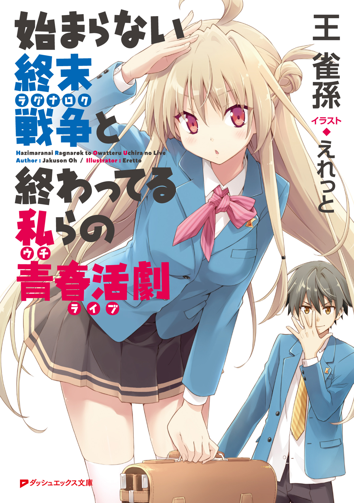
この本は縦書きでレイアウトされています。
また、ご覧になる機種により、表示の差が認められることがあります。
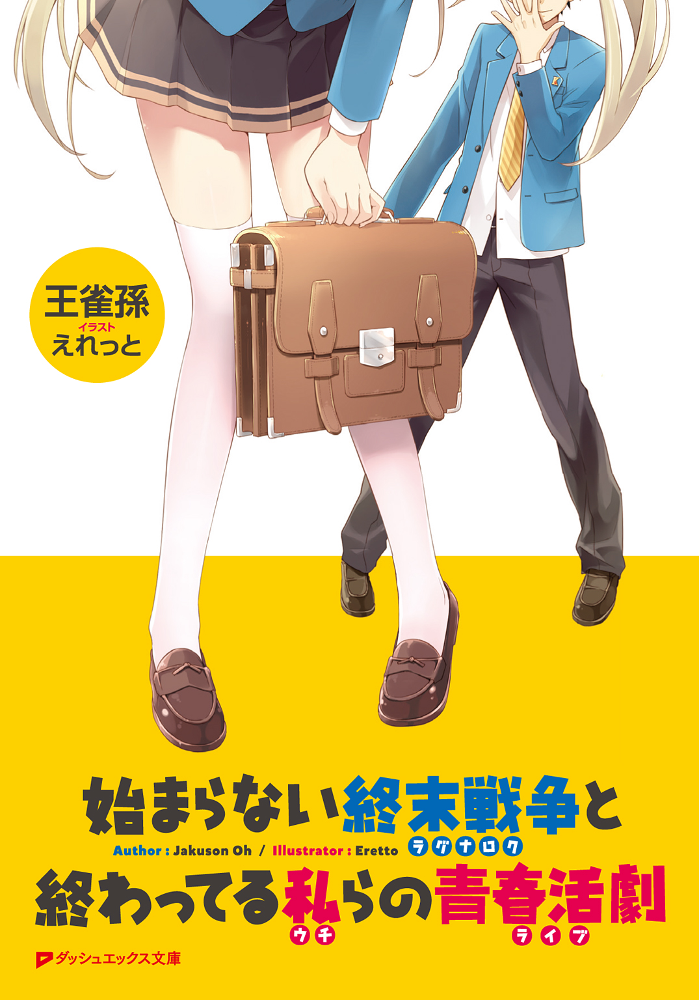
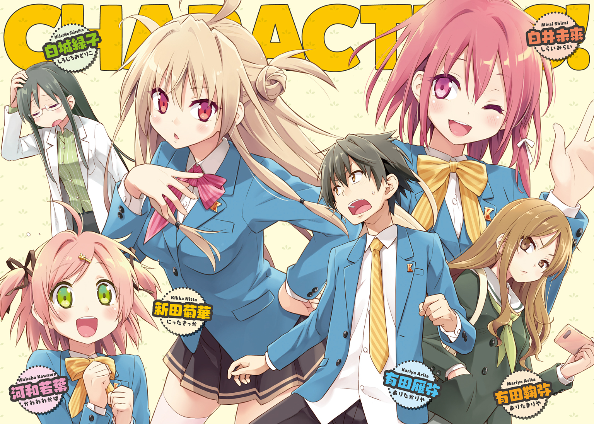
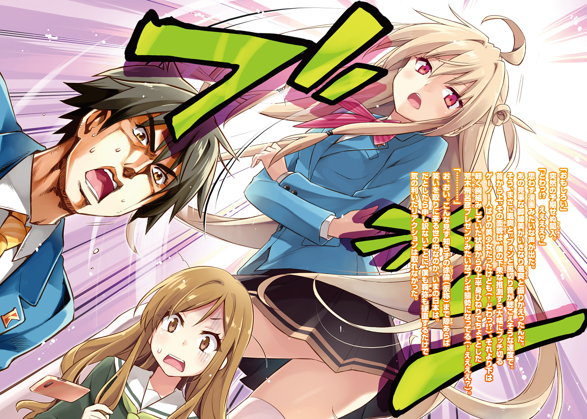
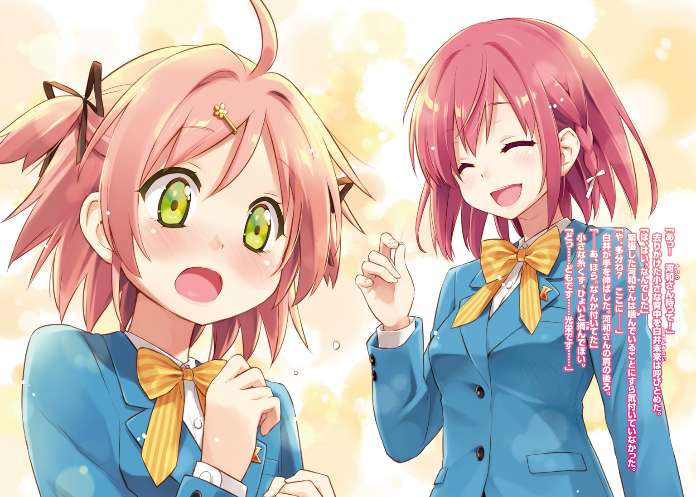
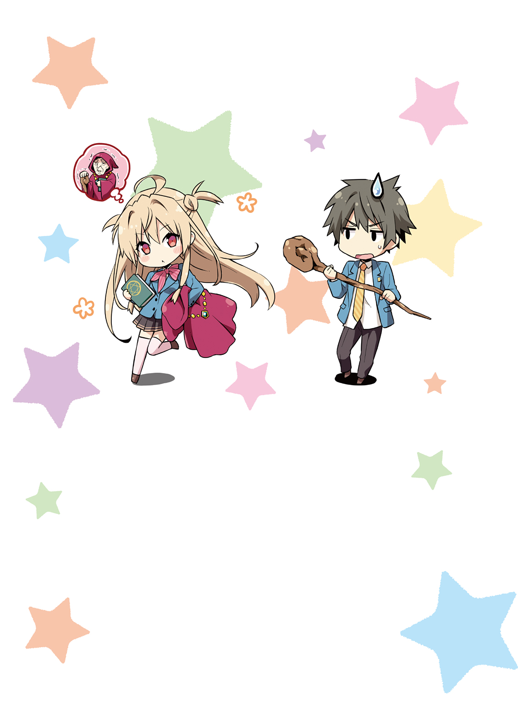
 ダッシュエックス文庫DIGITAL
ダッシュエックス文庫DIGITAL
始まらない終末戦争と終わってる私らの青春活劇
王雀孫
① 世界は喜劇になるでしょう
これは喜劇だ。ただの脚本だ。
これから語る出鱈目も滅茶苦茶も荒唐無稽もトンデモも、すべては予定調和の創作物だ。
だから鼻で笑いとばしていただいて構わない。いや、むしろ笑っていただきたい。
笑ってください。いいから。頼むから。お願いします。
さもないと僕は......どうなるんだろう。
まあ、いいや。そんときはそんときで、そんな自分を笑いとばそう。
世界はいま、そういう流れなんだ。
※ ※ ※
第一部、第一章、第一幕。
とき――ある六月の朝。
ところ――埼玉県Ｓ市Ｏ駅。通勤通学ラッシュで混雑するプラットホーム。
電車待ちの列に並んでいる主人公・有田雁弥。
隣りにその妹・鞠弥の姿。
カメラ、鞠弥の手元の携帯端末へズーム。
画面に映るフルセグ放送は、朝のニュースバラエティ。新人女性アナと、眼鏡をかけた男性コメンテーター。
アナウンサーの不自然なほど際だった胸のふくらみに、ふと目を寄せられる雁弥。
その視点に気付いた鞠弥、兄へ向けて顔をしかめる。
激しく首を振って違う違うと抗議する雁弥。
そんな日常の風景に被せてインする有田雁弥――ていうかつまり僕――のモノローグ。
ある朝、テレビで、足立雅美の横の眼鏡が言ったんだ。
「世界は喜劇になるでしょう」
天気予報かよ。
なんて画面に向かってツッコんでしまったけども、言われてみればそれはその通りだった。
続けて映しだされた新宿駅西口の街頭風景では、行き交うひと誰も彼もが笑ってる。お陽様も笑ってる。猫も杓子も笑ってる。うん、まあ、たぶんね。
それからはみるみる間に地上波も衛星波もギャグまみれになり、お茶の間へ流れる電波は大安売りでひとびとに笑顔をもたらしまくった。
ネットでは神と呼ばれる職人さんや〉〉1さんやうｐ主さんが、受け手におびただしい数のｗを乱舞させた。
もちろん僕らのオフラインだって然り。なんだか世の中、一億総芸人みたいになってる。
お話するなら面白いこと言いましょう、面白いこと返しましょうという風潮。
そして実際オモロかろうがオモンなかろうが、言った方も言われた方もとりまみんなで笑いましょうという風潮。
世界はいつからこんなにも笑顔で満たされていたのか。みんなもっと冷めたり俯いたりしてなかったか。
や、もちろん良いことですよ。泣いてるよりかは笑ってる方のがいいに決まってます。
一説によれば、笑うことで身体の隅々に刺激が行きわたり、あのー、なんだ、ナントカ細胞やらが活性化され、その、病気やら何やらになんやかんやするらしい。続きは各自ネットで。
要するに、笑ってればメンタルにもフィジカルにも良いんだって話。
笑う門にはってやつだ。世界はいま、そういう流れなんだ。
結構なことじゃないか。ラブ＆ピース。やがてはこの地球上から諍いも戦争もなくなって、みんなハッピーになるでしょう。めでたしめでたし。
喜劇万歳、呵々大笑。あーっはっはっ。
「でもさ」
大笑中断。
「こないだまで世の中悲劇だー言ってた気もしない？」
まったく自慢にならないのだけど、僕は月曜朝の電車待ちから頭ハイポジに振れるほどまっとうな思考回路の持ち主ではない。
ぶっちゃけ根暗なんです。疑心暗鬼のネガティブ野郎なんです。
「いやね？ なんだろう......いいことだとは思うよ？ 思うんだけど、なんか『えー？』っていうか、なんか......うーん『なんかなー』って」
「なんそれ。なんかじゃ分からんし」
鞠弥は画面に見入ったまま、失笑するみたいに肩を揺らした。
制服の短いスカートから片脚を列の外へ逃がして、全体的にゆったりナナメった立ち姿。スマホを持ってない方の手はブレザーのポケットへイン。中等部では姐御キャラで通ってるという話も頷ける、納得のふてぶてしさだ。
「でェー？ 要はァ～？」
「いや、要はと言われると、ちょっと自分でもはっきりとは表現できないんだけど......だから、なんだろな、この国こんな浮かれてたっけ？ って」
「あー、社会批判？ チィ兄、たるー。妹、そーゆん興味ないっすわー」
「違う違う、そーゆんじゃなくて。ちがくて、そんな大層な話じゃなくて、もっと単純な違和感っていうか。なんか、みんな踊らされてない？ みたいな......その......」
「ふーん」
駄目だ。鞠弥はぜんぜん喰いついてこない。そもそも、ひとが話しかけてるのにイヤフォン外さないってどういうことよ、この現代っ子。
はあ。僕は声なき息をついた。そして――
「............」
――何とはなしに泳がせた目が、ふと止まった。吸いよせられた。
乗車待ちの列、ひとつ前には僕と同じ川添高校の女生徒がいた。このターミナル駅では珍しくもない制服だ。おまけにこんな真後ろからじゃ顔も見えない。
しかしそいつは、なんだか浮いていた。後ろ姿だけでも特有の圧が感じられた。俗に言うオーラってやつ。あるいは「持ってる」ってやつ。
とは言え、輝くロングヘアーと見事な脚線美に眩惑されてるだけかもしれない。振りかえれば残念賞、みたいなオチはあるある過ぎてネタにもならない。
「あ」
そして鞠弥が不意にイヤフォンを引きぬいた。僕の妹はようやくまともな家族交流を図る気になったみたい。
「なに、どうした」
「そえばクミちん言ってたわァー」
「ああ、同級の？ なんて？」
「高校生ンなったら、兄貴がいちいち世の中どーこー言う面倒くさいやつになったって」
「へー？」
それでそれで？
「............」
しかし鞠弥、ふたたびイヤフォン装着。下を向いてスマホ鑑賞。
「............」
え、終わり？ その話、そんだけ？
ああ、なるほど。つまり僕の唱えた名状しがたい違和感は、一切の同意を得られることなく、誰もが通る思春期特有のモヤモヤとして片付けられてしまったのだね。
いや、片付けさせねえよ？
「待って待って。ほら、たとえばさ、大人はみんな不景気だ政治不信だって年がら年中ショッパいこと言ってたし、うちらだって冴えない学校生活を毎んちブチブチぼやいてたわけじゃん」
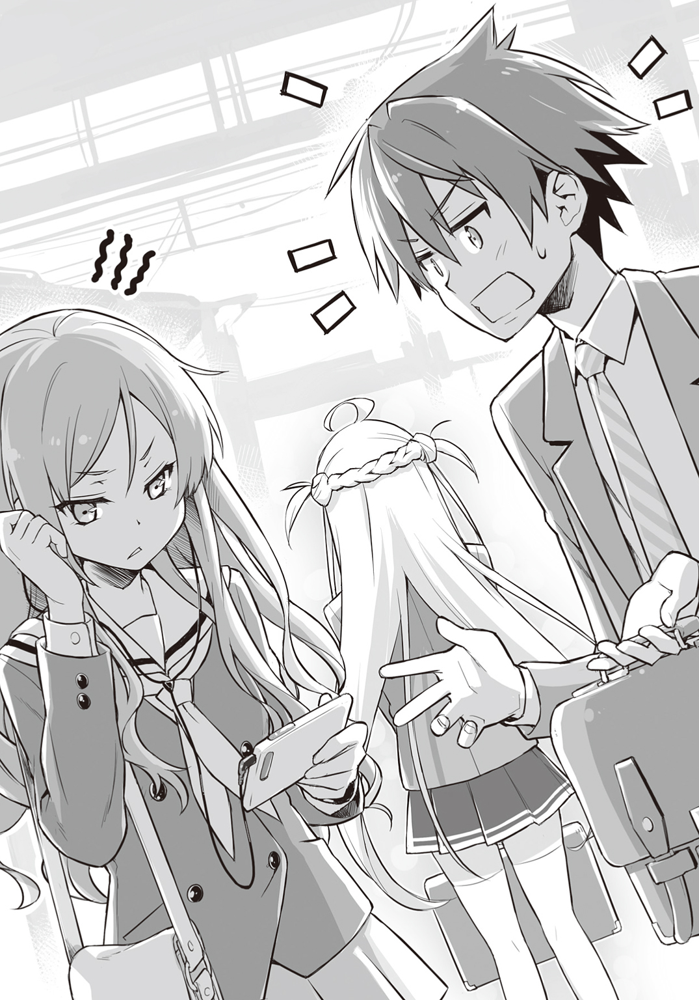
「うちらって？」
「え......」
番組がＣＭに入って、ふたたび顔を上げた鞠弥。今度はしっかりこちらを向いた。冬でもないのに何か塗ってるっぽい唇がてらっと光った。
「うちらって誰」
「え」
知るか。そんな細かい言葉のアヤを拾われても困る。「うちら」と括ったのは漠然としたフィーリングに過ぎない。ノリと漠然はそれこそティーンの基本じゃないか。悪いが現代っ子は妹だけじゃないぞ。
「いや、だから」
「だから？」
だから......
「俺とかー」
ちなみに僕は、対外的には「俺」です。
「あと、君とかー」
ちなみに僕は、妹のことを「おまえ」と呼んで舌打ちされたことがあります。
「ハア？」
ちなみに妹は、最近わりと躊躇なく兄にメンチを切ります。
「なんで。うち、わりとガッコ楽しんでる系だけど」
ちなみに妹は、最近一人称を「私」から「うち」へ移行させつつあります。
ちなみに妹は、最近ほんのりギャル化が始まっています。
ちなみに兄は、ギャルい女子に関してあまりいい思い出がないので行く末ハラハラです。
昔は無邪気にお兄ちゃんのお嫁さんになるーとか言ってたのになあ。あのころは可愛かったなあ。いまもたまに可愛いけれど、プラスちょいちょいおっかないなあ。
「そーすか、失礼しました」
兄は息するようにたやすく謝罪した。
「うん。で？ うちらって？」
「だから......俺とか......」
やむなく雁弥テイク２。
「あと......俺の友達とか......」
「アッハ！」
鞠弥の両手が豪快な破裂音をひとつ生んだ。
「ウケる、超ダウト。チィ兄いま、めっちゃ友ゼロだし」
ちなみに妹は、しばしば自分発信のオリジナル略語を用います。おそらく「友ゼロ」は友達ゼロ人という意味だと推測されます。おい待て、誰が友達ゼロ人だ。
「......カンジ悪りィな、この妹」
「なんで、だって、いないじゃん実際」
にやにや。にや？ にやにやにや？
ぐぬぬ、生意気盛りめ、なんというニヤニヤ過剰。
「っせえなあ......」
僕はやさぐれた。
ちなみに兄は、容易にやさぐれます。
「んな、友達ったら地元のだよ。阿部とかあの辺の定番面子とはまだ結構会ってるし」
「ねーチィ兄、アレ知ってる？ 中学んときの友達とばっか遊んでると高校でなかなか友達できない伝説」
知ってるけど問題ない。本当は連中とも「ばっか」ってほど会ってないから。
そりゃあ涙の卒業式からすでに三ヵ月。阿部チャンらだって、いいかげん新しいお友達と新しい友情を育んでいるものね。
「チィ兄、やばくない？ だいじょぶー？ 男友達すら作れないんじゃ、彼女とかもう百ないよ」
ふざけんなおまえ、百は言い過ぎだろ。噓でも十パーぐらいは残しといてくださいよ。
じゃなくて、ほっとけ巨大なお世話だ。
「べつにいいし。俺、彼女とかそういうチャラチャラしたの要らないし」
僕は軽く受けながし、ついでに逆襲とばかり放たれた矢を射返した。
「つーか自分のこと棚に上げて、え、鞠弥こそひとの心配してる余裕あんの？ ええ～、やばくな～い？ だいじょぶー？」
ちなみに「だいじょぶー？」は、ギャル入るよりも昔から染みついてる鞠弥自身の口癖です。
「うん、だいじょぶー。全然ヨユー」
しかし、そんな小技を織りこんだ反撃も、敵陣深くには届かなかった。
「だってうち、べつに彼氏欲しいとか思ってないもん。でもチィ兄は、彼女欲しいってメチャメチャ思ってるわけじゃん？」
「なっ......！」
僕は動揺した。
「んな、ぜん、全然、おも、思ってねえし！ ぜぜぜ思ってねえし！」
色恋事に一切感心のない硬派な男で知られる有田雁弥なのに、なぜ誰にも知られぬ深層意識を見透かされたのだろう。やばい。ひょっとしてうちの妹は異能の力を持っているのかもしれない。
２......３......５......７......僕は心を平成に保つため素数を数えた。
ちなみに兄は古今様々のジャンプ漫画が大好きです。
「お、俺は、彼女できないんじゃなくて、あえて作らないんだよ」
よし、毅然と反論できた。ありがとうブッチ神父。この際だから波に乗ってさらに攻めるぜ！
「てか、それ以前にひとつ言っとくけどな？ 兄貴に向かって言い過ぎなんだよ、最近おまえは。だいたい――」
「おまえ？」
妹がイヤフォンをぶっこ抜いた刹那の眼光、まさにぎらり。
「あ、いや......」
その外部刺激を受けとった兄の視床下部は、危機を察知して思考するより速く脊髄を反射運動させた。
つまり僕は背筋を伸ばした。
「はい。鞠弥さん。あの。ちょっと言い過ぎじゃないかな。お兄ちゃん傷付いてしまいますよ？」
「アッハ！ なんで敬語、超ウケるー」
ウケを狙った覚えはひとつもない。しかしウケたのならほっとこう。
「チィ兄よわー。バリ傑作ー。あははは」
けたけた笑ってる。
ちなみに妹は日常的にトーン低めながら、一方で笑いの沸点もまたけっこう低いです。些細なことでもよく笑います。ラッキョが転がっただけでもやたらめったらウケちゃう中学三年生なのです。
この喜劇時代を生きるに相応しい世代だね。ま、高一と一コしか変わらないけどね。
「はあ......なんの話だっけ......まあいいや、もう......」
「きゃーははははー！」
体ごとそっぽ向いたら、笑いながらの鞠弥が、僕の腕を摑んで顔を覗きこんでくる。
ナマイキな態度で挑発するみたいに見せてるけど、僕は知っている、これは幼いころから彼女の常套手段だった。これは相手が本気で不快を催していないか、その表情を窺うための動作なのだ。
こっそり兄の機嫌を確かめるなんて、なんだかんだ言ってもうちの妹、まだまだ可愛いとこは残ってる――
――などと僕が、うっかり微笑んでしまうこの辺りまで、きっとこいつは計算ずくだ。日ごろ甘やかされて好き勝手自分勝手に生きてるくせして、ちゃっかりこういう適度な甘え方も心得てるのだから、鞠弥ってホント典型的な末っ子だよなあと思う。
「......るせーなぁ、声でけーよ」
呆れつつも、兄は思わず苦笑いを見せてあげたよ。
そうこうしているうち、世に対する僕のめんどくさい言いがかりはフワッと受けながされ、そもそも自分の中ですら把握しかねていた微かな違和感も、いつしか有耶無耶のうちに雲散霧消していた。
あるいはこれが、笑う門にはってやつだろうか。
なるほど世は喜劇なのかもしれない。
「で、なんだっけェ～？ いまの社会がなによ？」
妹、スマホの画面を落としてイヤフォンコードぐるぐる巻きだしたけども、そんな今さら話を聞いてあげましょうモードに入られたって遅いっつーの。
「もういい。流して。てか、実際なに話してたか忘れたし」
「なんそれどゆこと」
さあ。忘れたと言ってるのに訊かれても困る。マジで思いだせない。
「だから、もういいんだって。いま世界は喜劇なんだよ、悲劇の時代は終わったの」
そう告げた僕に、とくべつ深い意図はなかった。ただなんとなくだ。言葉のアヤだ。繰りかえすけどもノリと漠然はティーンの基本。
しかし、たぶん、そのときだった。僕の物語が始まった――始まってしまったのは。
「おもしろい」
突然の予期せぬ闖入。
「どわっ!? ええええ？」
思わず漫画みたいな声が出た。
あの見事な脚線美がいきなり颯爽と振りかえったんだ。
そう、まさに颯爽と。ブォンと風切り音が聴こえそうな速度で。
首から上、その面貌は、僕の下衆な憶測すら大幅にブッチ切るゲーノー人ばりの美少女だったけども（←どわっ!?）、それより下は軽く腕組みしていた状態からの上半身ひねりでちょっとした荒木飛呂彦プレゼンツみたいなフシギ態勢になってる（←ええええ？）。
「............」
お、おい。こんな見ず知らずの徐倫（仮称）まで隙あらば笑いを取りに来る世の中なのか、いまの日本は。
だとしたら申し訳ないことに、僕も鞠弥も硬直するだけで気の利いたリアクションは取れなかった。
「いまの発言、大変に面白かった」
「は、はあ......それはどうも......」
よく分からないけど、なんとなくジョリーンに誉められたみたいなので礼を述べておいた。述べながらきょろきょろ左右を窺ってカメラを探した。新人アイドルが一般人にドッキリ仕掛けるとかそういう番組......ではないのかしら。
「でも、面白いって言うわり笑ってなくね？」
さすが人見知りをしないギャル文化圏の鞠弥は、早くも的確な指摘を入れていた。
「然り。笑えるではない。私は面白いと言った。興味深いと換言してもいい」
女はぼそぼそした声で、ひとつずつ短文に刻みながら答えた。
なんだろう、この無機質な喋り方。まるでアニメに出てくるキャラみたい。
「はあ。それはどうも」
補足説明を加えてもらっても依然よく分からなかったので、僕はふたたび同文の回答を返すことしか出来なかった。
ていうか誰だよコレ。何者だよこのジョリーン。鞠弥の知り顔か？
「んにゃ？」
懐疑的な俺のアイコンタクトを受けて、妹はふよんと首を傾けた。そう、このぐらいの可動域がヒトとして自然だと思いますよジョリーンさん。腰痛くないですか、そんな九十度以上も捻ったまま。
「......ったた」
あ、痛かったみたい。だろうな。
「だいじょぶー？」
鞠弥が患部をさすってやると、女は慌てて居住まいを正し「損傷軽微。問題ない」と答えた。
ジョリーンではないけど、やっぱ、なんか、キャラだなあ。作ってるよなあ。すげえ美人なのに、すげえイタタだなあ。
「貴官に問う。所属と姓名を述べよ」
普通に身体ごと振りむいた彼女は、あらためて正面から僕を凝視した。
「え......」
耐えきれず、つい目を逸らしてしまった。
いや、あの......だってほら、いきなり名前聞かれたって、ねえ？ そんな、今日び得体の知れない相手に、おいそれと個人情報を渡すなんて、ねえ？
「だっさ。チィ兄、ド緊張」
「んな、ぜん、全然してーし！ ししし、してねえし緊張！」
またも妹に見透かされ、僕は動揺した。
おかしい。色恋事に一切感心のない硬派な男で知られるこの有田雁弥が、どうしてこうも立て続けに深層意識を看破されるのだろう。やはりうちの妹はエスパーなのかもしれない。スレイヤード・スレイヤード・バルモル。僕は心を覗かれてもいいよう、無為な呪文の詠唱で思考を満たした。
ちなみにこの呪文は、中二の夏休みに叔父さんの書斎（通称ジャンプ部屋）で穴が開くほど読みこんだ、ちょっとエッチなファンタジー漫画から会得したものです。
「すませェ～ん姐さん。うちの兄、女子と話すの苦手な子でェー」
「んな、ぜん、全然ねーし！ 女子とか全然ヨユーだし、バリクソ喋れっし！」
黙れ黙れ黙れ。いいから黙ってろクソ妹。根も葉もない、とんだ風評被害だ。
「んな、まり、鞠弥だって知ってンだろ。ぜん、全然、中学ンときとか普通に女子の友達いたし」
「って、一人だけじゃん。しかも未來パイセンは友達ってか幼馴染みじゃん」
「ぐっ......」
黙れ。頼むから黙っててくださいよクソ妹。そんな細かいこと、言わなきゃ分かんないンだからさあ。
そりゃね？ そうだけどもね？
そう。いわゆる幼馴染みというのは、たしかに特殊な関係性である。縁なく育った向きにはどうやら理解しがたい感覚らしいが、それは僕に言わせれば友人というよりほとんど親族に近いものだ。
なにしろ出逢いが（記憶に）ない。物心ついたときにはすでに一緒で、以降も当たり前のように一緒というのは、ある意味で親兄妹と同列――は言い過ぎかもしれないけど、同世代のイトコぐらいには近しい存在なのだ。
「おはよー」
「お？ おお、おうっす」
後ろからの声。噂をすればなんとやら。しかし気付いたときにはもう背中。
さすが元陸上部、いまだ歩きはキビキビだ。有田兄妹の幼馴染み・白井未來が、薄味の挨拶を置きのこしてスルスルスル～っと背後を過ぎていった。
「未來パイセ～ン！ おはウェ～イ！」
僕以上に遅れて気付いた鞠弥が、すでに遠い白井へ、朝の挨拶（だよな？）を投げた。
「――――」
白井は歩を止めなかったが、ちらり振りかえった右斜め四十五度の口元がおはウェ～イの形に開閉していた。
「なんだ、あいつ」
ろくに目も合わせないで。そんなに急いでいるのか。
「いつもならブンブン両手振って、跳ね散らかしながらウェイウェイ絶叫するところだろーに。また例によってトイレ我慢してるのかあ？」
などと言いつつ、よくよく考えてみれば。
偶然同じ高校に進学したとは言っても、入学から今日までの二ヵ月間、クラスも部活も違う白井未來とまともに話す機会なんてほとんどなかったけども。
そういやあいつ、だいぶ髪伸びてたな、いま。
「ちゃーんじゃない？」
違うんじゃない？ の意ですかそれは鞠弥さん。
「なにが」
「急いでたんちゃーくて、チィ兄が珍しく美少女相手に頑張ってッから、見てらンなかったんじゃない？」
「まじか」
そんなか。僕が女子と話す様はそんなに酷いのか。直視に耐えがたいレベルか。
おのれ......エスパーの鞠弥だけは仕方ないにしても、これ以上、男・有田の醜態を世に広めるわけには行かぬわ。
「貴官、質疑応答を再開したい」
おっと忘れてたそのボソボソ声。
んっ、んんっ！ 僕は咳払いして痰を切った。
「悪りィ。待たせた――」
あらためて謎の女に堂々対峙。努めて平静を装って。コツは相手の目を見ないことです。
「――で、待たせといてナンだけど俺もう行くワ。じゃあなグッバーイ」
コツ２。場からさっさと立ち去ることです。
「チィ兄ー、そろそろ電車来るよー」
「おうふ」
まあ立ち去れないんですけども。朝の整列乗車を侮ってはいけない。もっかい並び直しなんて御免こうむる。
「貴官、所属と姓名を答えられたし」
そして立ち去れない弱みにつけこんで、謎の女ふたたび絡んでくるんですけど。
「貴官に問う。なにゆえ旧メモリーが残っているのか。すでに芽生えを果たしているのか」
そして謎の女グイグイ来るんですけど！ そのわり質問まったく意味不明ですけど！
「貴官、すみやかに答えられたし。さもなくば本官・新田菊華の名に於いてその方らの粛清も辞さぬ」
ていうか新田菊華もはや恐ろしいんですけどお！
「いやいやいやいやもう待ちなさいってちょっと」
いやいやブロック（牽制技）で侵攻を留めつつ、仕方ない、僕は観念して対話を行うことにした。
本当はガン無視したかったけども、だからってこのまま野に返しちゃうのも、ちょっと......ねえ？
むかし刑事ドラマか何かで聞いた言葉があるんだ。たしか、未必の故意、とかそんな。
たとえばキンッと凍える真冬の夜、道端でぐーすか眠っているひとを起こさずに素通りしちゃったとして、あとでそのひとが目を覚まさずに凍死しちゃった場合、起こさなかった者は見殺しにしたも同然として罪に問われるかもって話。
「あのう。おねーさん。落ちついて。ちょっと言わせてもらっていいですか」
「......承認。問うてよし」
なんで上からなのよ。そして僕も僕で、なんで下からなのよ。
しかし、相手の歳も分からないのに思わず丁重な対応になってしまうのは、きっと敬意由来ではなく自衛本能。ひとは理屈の通じない脅威に対して臆病なほど慎重になるものです。
「ええと、さっきから俺に答えろ答えろ言ってますけども、その前にまずアンタが何なんですか」
「エラー発生。質問の意図が不明瞭」
「だから、つまり、その――」
言いますよ。言っちゃいますよ、おねーさん？ キャラ作り頑張ってるとこ悪いけど、はっきり言いますよぼかあ！
「――なんでそんな二次元キャラみたいな痛いベシャリしてんすか」
はいズバッと言ってやりましたァー！
見ればうちの鞠弥が「おろ？」ってな剣心顔してますけども、フハハ分かったか妹、こう見えてチィ兄やるときはやる男だよ！ 女子が苦手なんて根も葉もないデマは取り消してもらおうか！
「二次元......みたいな......？」
しかし無念なり、新田菊華に怯んだ様子はまったく見られなかった。オペ前のドクターみたいに両手を浮かせて、自身の体を上下左右あちこち観察する。通称すっとぼけ。
「検索結果、リクエストされたスタッフを参照できない。結論、当有機体は平面的と呼ぶに値せず。翻ってそちらの感覚器系エラーを提言する」
「いや......」
そうですね。その点に関しては同意というか、誰の目にも明らかな、圧巻の３Ｄですけども。ええ、制服の厚い生地に押さえられてなお主張する豊かな胸の隆起とか、もう。
しかし、もちろん紳士の僕は、そんなおっさんジョークで切りかえすはずもなく。
「いや、ええと、新田サン......でしたっけ？ 新田サンがべつに気にしないンならいいんですけど――」
ですけど、どうしても僕は気になってしまうのだ。
「――そんな妙なキャラ作ってちゃあ学校で浮きません？」
完全に他人事だとは捨ておけなくて、うっかり一言もの申してしまったよ。
だってこのひとは、目を合わせるのがこそばゆいほどのクッソ美人。黙ってりゃどのクラスでも一軍入閣間違いなしだろうに、だけど、こんなん続けてたら誰も近付いてこないんじゃないかなあ。とか。
最下層は辛いらしいですよ、先輩。
「浮く......？」
新田菊華は眉をひそめながら、頭を傾けながら、小指を一本、そっと耳孔へ挿し入れた。
「浮く、とは......この場合『組する集合体においての相対的存在感が平均値を大きく上下する』と言ったニュアンスと想定。誤りないか？」
思わず「お、おう」ってなった。
その耳垢かっぽじるような謎の仕草はアレか。脳ン中とか大宇宙とかにある膨大なデータバンクから、現代日本のスラングを辞書検索したとか、そんなような設定か。あいたたたた。
「そう、それ！ まさにそれだよ。そういう厨二っぽい自分設定と、その無感情気取ったボソボソ喋り。そういうのは浮くの目立つの引かれるの。だから現実に輸出しちゃあダメ絶対。そんなんじゃ友達できないぞ」
「友ゼロが言っても説ゼロじゃね？」
うるさい妹。誰が説得力ゼロだ、体重バラすぞこの野郎。
「ふむ............然り、了承」
新田菊華は数瞬ほど黙考したのち、ぽんと手を打った。古風だ。お婆ちゃんっ子なのかもしれない。
「現地において協力者が得られない――それは致命的な問題。それはスポイルすべきファクター。次世代以降においても絶えず継承するべき特記事項として、グローバル領域に記述しておく。反省」
「つって、おいまるで反省の色ナシじゃねえかおい」
そのキャラを続けるってことはようアンタ。
まあ、いいけども。いちおう警告はしてあげた、あとは本人の自己責任だ。これ以上は僕が気を揉む必要もあるまい。
さあて登校だ。構内放送が間もなく電車が到着することを告げている。学校まで残り二十分がんばるぞー。
「さよなら」
「へっ？」
しかし新田菊華は列から外れて一歩二歩三歩と歩きだしていた。
「あれ？ えっ？ ちょっ......乗らないの？」
「然り。本日は帰還する」
「なんでっ!? 新田サン、川高のひとでしょ？」
間違いないですよ、その制服にそのスクールバッグってことは。
あっ、バッグの隙間から、チラッと体育着っぽい生地見えた。学年色はワインレッド――ふうん、二年生か。
「なんすか。新田先輩、学校サボるんすか」
「然り。当人格は、今任務のフィールドワークにおいて不適切との報告あり。同志の要求に従い、ただちにＯＳの再インストールへ向かう」
え、まさか同志って......うぞ、ひょっとして僕ですか。僕ですね。なんでだよ。知らねえよ。
「同志に問う。本官は帰還後、如何なるフォーマットを選択すべきか」
「知らねーっての。同志とか言うな」
反省つったくせに、この先輩まったく反省してないから、無碍もなく拒絶してあげたよね。こういう手合は自分内ブームが終わって正気に返ったとき、本人がいちばん後悔するものだ。だから周りの誰かが心を鬼にしてビシッと言ってあげねばなるまい。その厳しさこそ、男の優しさというものではないかしら。
よし、ビシッと言ったったる。
「いいですか、新田先輩。その、ふぉーまっと？ そんなのはもう何でもいいですから、フツーにしましょうフツーに。ねっ？ 分かります？ お友達ほしいでしょー菊華ちゃん？ そんな無感情キャラ続けてるうちは友達なんか出来ませんよっ」
ふう、ビシッと言ったった。
「承認。同志の提言に感謝。本官は次世代のＯＳ選択において『普通』タグを参照する」
おお、スパッと通じたった。
なんかエエことした気分。コレですよコレ。これぞ男。有田雁弥まさに硬派。フハハどうだ妹、このオレ様が女子供に緊張するなんてデマは取り消してもらおうか！ いや取りけせ！ 体重バラすぞこの野郎！
......なんて目と中指とで力説していたら、エスパー鞠弥はまた兄の心を読みとったみたいだ。
「たしかにー。うん。わりかし話せてンね、二人ぃー」
などと真顔で感心。兄と厨二を交互に指差し。めちゃ珍ぅーとか言いながら。
いや珍しくねえよ。そろそろ怒るぞ妹。体重バラすぞこの野郎。
「閑話休題。引きつづき同志の助言を求める。普通とはこの場合、何ものを指すか」
「いや、普通は普通ですよ。どこにでもいる普ッ通ぅーの女子高生らしく振るまってればいいんですよ」
「フッツーのジョシコーセー」
新田菊華は抑揚も付けずに復唱した。言わずとも不服の感はバリバリ。
「いいんです。みんなだって色々思うところありながら結局は無難にやってるんです。学校っていうのはそういうのが望まれるシステムなんです」
「然らず。当世において『普通』は『凡庸』に同義。すなわち個性に欠け埋没すると評価されうる」
「個性とか」
かっこわらい。そんなものは新田菊華さん、召しませ劇薬ですよ。
提言。貴官の大宇宙データバンクに疾く銘じよ。『普通』の同義は『無難』なり。
「先輩、お言葉ですけども、他人の言葉におとなしく耳を貸す姿勢こそ生きてく上で肝要っすよ」
「了承。反省」
ぴとっ。新田先輩は左右の人差し指を両こめかみに付けるや、かくんと頭を垂れた。子供か。しかし過ちを反省できるのは良い子だ。
「設定変更――以降、同志の優先度を１ランク上げるものとした。これによって本官は、次世代において《フツーの女子高生》ＯＳをインストールする」
おい。おいコラ、そういうことじゃねえだろ。アンタいま反省って言ったよな？ なんだその態度。まったく改める気ねーじゃねえか。
否。本官、憔悴。貴官はもう勝手にされたし。
「ねえチィ兄、反省の色って何色かなァー」
「いやー、俺はそれよりも、苦虫を嚙みつぶすような味ってのを知りたい心境だなァー」
そんな会話をしながら、僕らは去りゆく新田菊華の背中をぼんやり見送った。
さようなら、謎の女。もう会うこともないでしょう。
しかし、まあ、あれだけの見てくれで中身がまともな《フツーの女子高生》だったら、またワンチャン会ってもいいかなあ、なんて風には思えてしまう。たぶん、どうせ、無理だけど。
僕はああいうタイプの人間をひとり知っている。ああいう、なんというか、違うチャンネルに生きてる種は、きっと「普通」にチューニングすると息が詰まって死んでしまうんだ。
ははは。
主人公、肩を揺らして苦笑。
見詰める妹、神妙。
到着列車が減速するあいだ、双方無言。
やがて停車。
ドア開放。
群衆、乗りこむ。
無数の背中が、定点カメラのフレームを塗りつぶしてゆき――――暗転。
② 終わってる私らの青春活劇
第一部、第二章、第一幕。
とき――前章より数日後。ある六月の昼休み。
ところ――川高１年Ａ組教室。
自席にて仮眠中の主人公・有田雁弥。つまり僕。
「でー？ 誰よ、ぶちょーが言ってたのは」
「たしか......ああ、あいつです。あそこで寝てる男子」
「アレか」
「ふーん」
「パッと見フツー」
「なんか手配書とちがくない？」
「はい、ですよ？ だから言ったじゃないすか。私、委員会同じだけど全然印象に残ってないっすもん」
「っても、ぶちょーの推しだしィー？ なんか持ってンじゃな～いのォー」
そんなような女子声（複数）が、廊下の方からうっすら聞こえてくる昼休み。
入学以来、いまだランチを囲む級友もいない僕は、いつも通りパンを胃に詰めこんだあと「べつにオレ、ぼっちじゃねえし。ただ孤高を愛するロンリーワイルドってだけだし」という態で惰眠を貪っていた。
「ちょっと。ねえ。寝てるトコ悪いんだけど」
「............ふぁい？」
身体を雑に叩かれたので何事かと顔を上げれば、ちょいと強めの外見した肉食っぽい上級生方が数名、ずらりと僕の席を取りかこんでいた。
トピックス。一定数の女子がひとところに集ったとき、その空間はある種特有の力場を発生する。それは女子モスフィアとでも呼ぶべき、有毒な大気。もはや自席ながら完全にアウェイだった。
「へ......？」
泰平の 眠りを覚ます 上喜撰 たつた四杯で 夜も眠れず――
――直前の古文で習った狂歌が、寝起きの冴えきらない脳裏をよぎった。
「へええッ!?」
がたたっ。一瞬遅れて、思わず椅子を鳴らしてしまった。思わず眠気がふっとんだよ。形而上の布団がふっとんだよ。
ななな、何これ、何この状況!? なんで囲まれてるの!? しかもオール女子!?
ちょ、恐い恐い恐い、すげえ恐い！
「ねえ。有田雁弥ってあんた？」
「は？ あ......はい、そう......っすけど......」
集団の一人――厚化粧に特盛りヘアーのケバケバしい女――に問われた僕は、縮こまりながら頷いた。
「おっけ雁弥フ、よろすウェーイ」
「うぇ、うえーい......」
かりやふ？ なんだこいつ、この盛り過ぎ付け睫毛。おかげで同じギャルでもうちの鞠弥はだいぶ可愛い方なのだと知った。
「雁弥フ、ねえちょっと話いい？ いいよね」
「いや、あの、ちょっと待」
「さんきゅウェーイ」
答えを待つことなく、厚化粧女は僕の机に尻を載せた。
あ、これあかんやつや。日本語の通じない日本人や。
「あのう、すいません、俺ちょっと物覚え悪くて......ええと、なに先輩でしたっけ？」
間違いなく面識のない相手でしたけども、あえて記憶を探る態を装いましたよ。
どうか直接抗議などできない一年生男子の「よもや初対面とは思えない驚きの馴れ馴れしさですね」的な行間を読みとっていただきたい。
「私、２年Ａ組の真知子」
「はあ」
いきなり下の名前で自己紹介する女に遭遇したのは初めてだ。おまえはキャバ嬢か。ないし風俗嬢か。
などとツッコミかけたものの、もちろん学園生活において年功序列は絶対なので、
「源氏名？」
ぐらいに抑えておいた。
「おおー」
低いどよめきが起こった。なにそれ。不思議な反応ですね。
依然として威圧感はあるけど、とりあえず気に食わない後輩をシメに来たってカンジではないみたいだ。
とはいえ、大勢の視線に囲まれてるこの状況は辛い。厳しい。息苦しい。
「それで......話というのは......？」
「おっ、聞きたい？ 雁弥フ、積極的ィ～」
違う。雁弥フは一刻も早くこの女子モスフィアから逃れたいだけだ。
「あんねェ～？ うちら、ぶちょーから言われて来たんだわァー」
「はあ」
部長。誰だそいつ。なに部の部長だ。そもそもアナタが誰だ。いや、アナタはマチコか。じゃあマチコなに部。
しかし溢れでる僕の疑問をよそに、マチコ先輩の要領を得ない日本語は続く。
「知らないけどォー、アンタってけっこー使えるらしいじゃん、知ってる？」
「いえ」
そっちが知らないなら、こっちだって知りませんよ。
「つーわけでェー、悪いんだけどしばらくうちの部、手伝ってくんない。いいよね」
語尾が上がらなかった。つまりクエスチョンマークが付いてない。おいおい厚化粧先輩、それではまるで質問じゃなくて命令ですよ？
「雁弥フを迎えるって話は、もう他の部員にも通してあんしィー」
命令どころか決定項だった。
ていうか、えええええっ!?
「いやいやいや！ 話見えないし、いきなりそんなん言われたって！」
思わず大声が出てしまい――しまった、弁えよう――ふたたび通常ボリュームに戻した。
「......困りますよ。なに部か知らないスけど、勝手に入部とかそんな」
「なんで。いいじゃん。ねーえ？ いいよねーえ？」
おい。おいマチコ。当人こっちだよ。なぜ後方に同意を求める。
「いいよー」
よくねえよ取り巻き。勝手に返事すんな。
「や、べつに入部まではしなくていいよ？ ま、雁弥フがどォーしても入れてくださいッつーなら、んんー、そうねェー......一応入れてあげてもいいンだけどォー」
おのれ、なんという上からマチコ。そしてなに部なんだよ、だから。
「なに部なんすか、だから」
とりあえずもっとも大きな疑問から口にしてみた。
「未定部」
「は？」
ミテイ部。耳慣れない部だ。厚化粧をさっぱり落として別人レベルの貧相な素顔を見てー見てーと陳列する部だろうか。そんなわけはない。
「ぶっちゃけた話うちら詳細未定なんだわァー」
「はあ」
つまり？ ええと？ 新設？
「まだ始まってない部活動なんですか？」
「あーねェ」
マチコ先輩は謎の相槌を打った。謎だったけど、取り巻きたちはうんうん頷いていた。
「始まってないっつーか、むしろ終わってるってカンジ？」
「あーね、あーね」
「........................」
おそらく僕はいま硬直したＬみたいな顔をしている。何が何だか分からない。
「まー、詳しい話は部室ですっからァー、とりま一緒に来てよ」
「とりま嫌ですよ。とりま胡散臭いですよ」
「なんでよ、いいじゃん。とりま茶ぐらい出すよ。とりま河和もいるよ」
すぽーん！
とりま形而上の眼球がふっとんだよ。
「な、なな、なにを突然......か、か、河和さん関係ねーじゃねーすか......」
入学式の日、転んで膝から血を流していた僕に、とてとて走り寄ってくるや「あげるー」と微笑んでパステルカラーのファンシー絆創膏をくれたマイクロサイズの同級生。
我がクラス一、なんなら学年一と言っても過言ではない（※感想には個人差があります）ふわわわ美少女・河和若葉。通称、俺たちの河和さん。なんなら俺の河和さん。
なぜだ......このお姉さま方、なぜ硬派で知られる、男・有田が、ひそかに河和さんマジかわわと想っていることを知っているのだ......まずい、素数を！ 素数を数えねばッ!!
「だって河和、このクラスじゃん。どうせ雁弥フ、好きでしょー？ あーゆーロリっとしたの」
ああ、なんだ適当か。
「まー、かあいいもんねー。男にはウケるよねー」
なんだ。ただの一般論か。
「雁弥フみたいな恋愛弱者って、とりま一回はアレ系に落ちるよね。麻疹みたいなモン？」
なんだ。分かってる（気になっちゃってる）系オンナ特有の、細っそい先入観か。
っつうか、おい、誰が恋愛弱者だ。アンタらが好色なだけじゃないのか。
「どうよ雁弥フ？ 図星でしょ～？」
「フッ」
なめるなっての。そうまでドヤ顔で決めつけられたら、男・有田としてはなおさら反抗せざるを得ない。ここで頷いたら僕は、河和さんマジかわわ問題ばかりか、雁弥フ恋愛弱者問題まで認めることになる。
「あれェ～？ 河和スキじゃなかったァ～？」
うん。そんなんじゃない。ちょっといい子だな、優しいな、マジかわわだな、って思ってるぐらいだ。
クラスの他のやつはキホン僕のことを避けてるから、消去法的に河和さんだけでも友達になってくれないかな、マジかわわだな、って思ってるぐらいだ。
でも、もし本当に僕と仲良くなったりしたら、クラスの連中は河和さんのことを河和さんマジやばばって思うかもしれない。
だからこの想いは、ただの「河和さんマジかわわ」止まりであって、それ以上でもそれ以下でもない。
「べつに」
その概要を、僕は簡潔に三文字でまとめた。
「べつにーだって」
「えー、どう思うー？」
「うそくさー。ほんとにー？」
そうして女性陣は審議に入った。
ちらちら値踏みする視線。ひそひそ聞えよがしな声。ああ、刺さる刺さる。いったい何だろう、この居たたまれない心地。ふっとんだ布団をまた頭から被りたくなるね。
「ほら、この子さあ、アレじゃない？ レンアイ感情とか過剰に隠したがるタイプ」
「うわ、っぽいー。告白どころか、男友達に恋愛相談すら出来なそー」
「うわ、マジで？ え、やだ、男の純情ってどうなの？ 私ないわー」
ご安心ください。僕もあなた方はないです。あと純情じゃなくて硬派な。
「とにかく。悪いですけど、俺は行きませんから。お引き取りください。それじゃあ」
もはや相手にしてらんねーという意思表示。頰杖ついて目も閉じた。昼下がりの安眠再開ウェーイ。
「あらら、なんか不貞寝しちゃった」
「本人的には『純情じゃなくて硬派な』とか思ってンじゃね？」
「硬派（笑）」
はいはい。そんな安い挑発には乗りませんよ、っと。
「やっぱそーゆートコ童貞はめんどくさいよねェー」
がたっ。
「......この子いまガタッてした？」
「なんか触れちゃったんじゃないの、心の機微的な」
「えー、どれだろ。童貞？」
がたっ。
「ああ、ソレだ」
「ちょー、あんた謝ンなよー？ 童貞の子は童貞って言われるの、けっこー気にすンだからねー？」
「えっ、そうなの？ ごめんね有田君、大きい声で童貞とか言っちゃって」
「私もごめん。本当はいまちょっと有田君のこと、エッやだ童貞？ とか思っちゃった」
「ちょっとみんな、やめなよ！ 童貞君のこと、有田有田って言い過ぎ。ねえ？」
「はい」
僕は降参して席を立った。
「分かりました。ご要望通り、皆さんの部室とやらへ参ります」
なので、お願いですから、すみやかに黙れ。
「あっ、そおー？ 悪いねェー、なんか強引に頼んじゃったみたいでェー」
みたいじゃねえよ。強引以外の何物でもねえよ。
僕はのっしのっしと肩を怒らせて教室を出ていった。これ以上ここで大声を出されては僕の立場上とても困る。どうせ騒がれるのなら外でやってもらうしかない。
まったく、とんだ押し込みビッチ共だ。
同級生にヘンな目で見られてなければいいなと思った。
暗転――
だけど本音を言えば、胸のうちでは、静かに湧きあがる期待のようなものもあったんだ。
形はどうあれ、僕がこんなにも誰かと話をしたのは、高校生活初の快挙だったのだから。
※ ※ ※
第一部、第二章、幕間・甲。
とき――笹の葉ゆれる七月の黄昏。
ところ――埼玉県Ｓ市内、リストランテ『ジュール・セザール』。
「ちょっと部長、なんすか、この暗転後の余計な二行」
そこまで読むと、僕は新田菊華の携帯端末を持ち主へ突きかえした。
「俺、こんな青春ロードムービーみたいな、前向きモノローグ入れた覚えないんですけど」
「ぬはは、そうだろう。それはさっき私が書き足したぬだ」
ぬだ？
ぬだってなんだ。嚙んだのか。見かけに寄らずドジっ子か。まあいいや。
「いや、この〆め方じゃ幕下りた後の余韻がぜんぜん変わっちゃいますって。今回独白多めとはいえ、目指してるのはシリアスじゃないんでしょ？ 喜劇でしょ？ なに勝手なことしてくれてンすか」
「ぶちょー権限だぬ」
だぬ？
え、だぬって言った？
「あの......まさかとは思いましたが、ひょっとしてソレ新しいキャラ付けでした？」
「ぬ」
こくり。
頷いちゃったよ、あちゃー。ちょっとどうかと思いますよ。まあ、いいや。
「ちょっとどうかと思いますよ」
まあいいやでは済ませられなかった。僕の口はときどき正直だ。
「ぬぷぬー」
そして新田先輩の口はときどき適当だ。
「確認させてもらうぬ。有田君、今回の舞台、君の役割はあくまで脚本制作だぬ」
「ええ、そうですね。なんとなく流れでそうなってしまいましたね。辞めろと言われれば、さほどは惜しまずにソッコー辞めてもいいんですけども」
「待ちたまえ、早まるぬ。もちろん君の助力には最大級の感謝を払っていぬ」
おい。おい先輩てめえ。そこに「ぬ」付けんなよ。有田君への感謝、全否定しちゃってるよ。
「しかし君へぬ感謝は別問題として、私にも私の果たすべき役割があるぬ。脚本をどういった方向で演出するかは、監督である私の裁量次第ぬ............裁量次第だぬ」
いいから。文末「ぬ」の収まり方とか気にしなくていいから。
「ま、部長が良いなら良いですけども」
「有田ぬ」
「なんすか」
「君ぬ言った通りぬ。我々が志すは喜劇。コントではないぬ。つまり、必ずしも笑いを取りぬ行く必要はぬい。肝要なぬは、すべてぬ幕が下りたあと彼らぬ《指針》が喜びぬ感情群へ振れていぬかだ」
「はあ」
それは言い得て妙というか、それなりに真理っぽい気はするのだけど、怒涛の「ぬ」押しで台無しだ。端的に換言すれば、ぬーぬーうっせえ。
「とは言ったものの、むろん私は人心を誘導する術など持たぬ」
ああ、「ぬ」を正しく使うパターンもあるのね。
「なぜなら私は生来、感情というものが希薄。ない袖はフレマセンヌ」
そしてフランス語っぽくアレンジとかもあるのね。
でも結局んとこ単なる語尾頼みっすよね、その《換装式人格》。強引っていうか、出涸らしっていうか、ぬ以外にぜんぜんキャラ見えてこないっすよ。
「ぐぬぬ、そんなことはぬ」
「あと、ぶっちゃけ言っちゃいますけど正直ウザいっす」
「えっ」
いや違うでしょ。ソコこそ「ぬうぅーッ！」でしょうが。なんでまるで素で驚いたみたいな声出してるのよ。
もっとも「まるで素で驚いたみたい」を演じることなんて、このひとにとっちゃあ造作もないのだろうけど。
「お、面白くないぬ......？」
「むしろ面白いと思ってやってたことに、雁弥フ驚き隠せまセンヌ」
「～～～......」
ぬぬぬ、的な咽喉を鳴らす音が聞こえた。
「......然り、承認。同志の提言に従い、本官はすみやかにＯＳをインストールし直してくるぬ」
「あのう、ソレ、昔の設定混じってますよ」
まあ、今更そんなの、ツッコミ入れるほどのことじゃないけども。
そうだ、それより、今日もミーティングの最後に確認しておこう。
「部長、ここら辺の章で気になったトコとかあります？」
「ぬー......そうだぬ、序盤から登場人物数が多い気がしたぬ」
「ああ、やっぱ感じました？ 駄目かな？」
「否。ただし要検討。在来人種の脳は、アクティブな構造領域が我々《途中の種》に比して大幅に閉じられている。受け手の認識力は、想像以上に少なく見積もった方が万全ぬ」
「だから、混じってる混じってる。大幅に混じってますって、昔のキャラが」
ともあれ、要は、人員を整理しろってことですな。
「分かりました。んじゃ、あのクソみたいなビッチ先輩たちとか、べつに居なくても問題ないし、まるっと存在ごと消しましょう」
とくにあの、硬派な主人公に恋愛弱者の嫌疑をかけるシーンとか、どう考えても要らないからね。抹消、抹消。歴史から抹消。虚無の底に置いてきましょう。
「否、却下」
なぬぬッ!?
「世界は喜劇ぬ。彼女たちは賑やかし要員として必要不可欠ぬ。削るなら河和さんを削るぬ」
「ぬぬぬぬぬ......！ ぬに言いだしてんすかアヌタ馬鹿じゃないですか！ 河和さんいぬかったらこの話、下衆と厨二しか残らぬいっすよ」
「大丈夫。童貞もいるぬ」
「い、いませんーッ！ そんなキャラいませんーッ！」
そうして僕らは、ひとしきり玩具みたいな言葉で互いを罵りあった。いまとなってはそれなりに楽しい時間だった気がする。
喧嘩ごっこに飽きたころ、結論を出した。副部長さん以外の上級生は、十把ひとからげに無名のモブ軍団――として処理する折衷案だ。
一人一人それぞれの姓も名も記憶している新田部長にとっては、ああ見えてそこそこ苦渋の決断だったのかもしれない。知らないけども。
それから僕はいまもだらだらと続きを書いている。
初めて彼女らの部室に踏みいった、あの日の記憶を辿りながら。
※ ※ ※
第一部、第二章、第二幕。
とき――幕間前より継続。
ところ――新校舎、廊下。
真知子らに連れ添われて、文化部棟へと向かう主人公・有田雁弥、つまり僕。
お姉さま方は新校舎の廊下を、奥へ奥へとずんずん進んだ。
僕は諦め半分、物珍しさ半分、まあ、あとは河和さん小さじ一杯ぐらいの気持ちでへこへこ付いていった。
ずんずんへこへこ歩くうち、やがて帰宅部の僕にとっては未踏の風景が眼前に広がった。鼻腔を撫でる風は、なんと形容すべきか、いうなればそう......図工臭？
「ここって川高の部室棟っすか？」
「そー、文科系のー。運動部は外のプレハブー。便所はその辺ー。仮眠は保健室ー」
いや、そんなに適当なら（誰も頼んでないし）勝手に川高ガイドとか始めてくれなくていいんですけど。
「......んん？ 雁弥フ、なんで初めて？ 一年生でしょ？ 入学してすぐの時期に、体育館集められて部活紹介とか見学とかあったくね？」
あったくね？ とか言われても。もはやマチコ先輩は日本語も適当だった。
「ええ、あったみたいすけど、俺そんときガッコ休んでたんで」
あーね。いまにして思えば、そんなこんなで部活に入る弾みを失った気がする桜のころ。
もっともその程度で弾みを失う程度のモヤシ根性は、部活動に青春の日々を捧げている皆さまに言わせりゃハナから御免こうむりたいだろう。
この区画一帯、アウェー感ハンパないのはそのせいだろうか。行き交う生徒みんながみんな、冷たい目でこちらを睨んでるように見えてしまう。
小学生時分の「あー！ ２組のくせに４組入ったー！」的な、理不尽きわまる迫害の記憶が甦った。
※ ※ ※
第一部、第二章、第三幕。
とき――前幕より継続。
ところ――新校舎、文化部棟の一室。
女子部員らが一つの机を取りかこんでいる。着席しているのは主人公・有田雁弥――つまり僕。
取り調べが再開された。
なお、場所が変わっても、状況はほぼそのまま。
ただ彼女らのアジトということで、僕に注がれる目の数がさらに増えてはいた。辛い。刺さる。息苦しい。話なら前向きに伺いますから、できるだけ早く解放してほしいと思った。
「なになに？ 誰？ ぶちょーの言ってた期待の一年？」
「アレか」
「ふーん」
「パッと見フツー」
そうですね。人数は増えても反応は大して変わらないところが、ええ、本当にどなたもこなたも漏れなく失礼な糞ビッチ先輩方ですよね。ファック！
だけど部室には、二年生・三年生部員だけでなく、一人だけ僕と同じ一年生がいた――
――たぶん。見えないけど。少なくとも声はする。
「わぁ～有田君？ 来てるの～？ 私、私、河和です！ 影薄いけど同じクラスだよ、わーい！」
邪魔なモブキャラの壁に阻まれて、ほぼわーわー揺れてる手の平しか見えないけど、たしかに小動物みたいな人影があわあわ動いてる。
河和さんは女子の中でもひときわ小柄で（マジかわわ）、一方ここの先輩方は身長高めなひとが多いようだった（マジじゃまま）。
「ハハッ、河和さんでしょ。なに言ってんの、知ってるよ、話したことあるじゃん」
って言うほどはないんだけど、少なくともファーストコンタクトってわけではない。ところでモブ邪魔。
「つーか、影薄いとか言ったら、俺の方がよっぽどじゃん。負けねえよ？ ハハッ」
ちなみに兄は、美少女の前だとなぜか肩で笑う頻度が増えます。理由はとくにありません。女子への苦手意識丸出し、と妹は笑いますがそんなはずはない。ハハッ。
「あれぇー？ なんか雁弥フ、意外とリアクション淡白ー」
「ほんとだー。もっと童貞臭くテンパって、どもったり敬語になったりするかと思ったのに」
ククク、あなた方のお陰ですよ。僕は少年漫画の冷淡なヒールのように口の端を吊りあげた。あなた方という遮蔽物のお陰で、河和さんと目を合わせる必要がありませんからねえ。
ククク、感謝のしるしに、せめて名前ぐらい付けてあげましょうモブ山先輩（仮名）、モブ谷先輩（仮名）、モブ島先輩（仮名）。
「んーだよ雁弥フ、つまんねー童貞だな。毒にも薬にもなんねーじゃん」
「ねー？ 見た目もフツー中身もフツーって、もう救いようないじゃんねえ？」
「ハハッ、先輩方きっついなあ、ハハッ」
微笑みの裏で、僕はモブ山先輩たちの名を形而上のデスノートに書きつらねた。ククク、仮名で命拾いしましたね、皆さん。
「わふーい！ 有田くーん！」
モブ村先輩の肩ごしに、ひょこっと爪先立ちした（たぶん）河和さんの顔半分が覗いた。おお、なんと神々しき半月。
「ねねねー！ 私たち手伝ってくれるってほんとー？」
半月といえどもその輝きは、この掃き溜めの夜を照らすに余りある目映さだった。僕は眩しさに目を逸らしながら、なぜか意味もなく肩を揺らした。
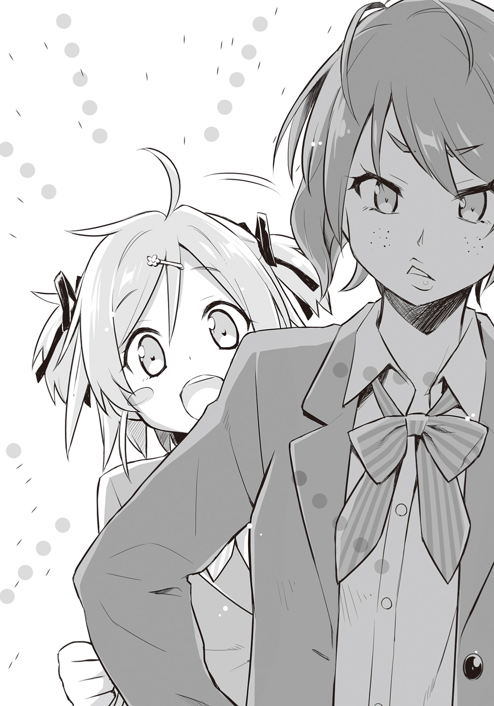
「ハハッ、どうなんだろ。実はまだ詳細分かってなくて。河和さんはこの部――」
ふたたび顔を上げると、あの輝きはもうモブビッチ山脈の合間に沈んでいた。
ああ邪魔だなあ邪魔だなあ、あの山すげえ邪魔だなあ。もっと御来光を拝みたいなあ。
「あの、先輩方。向こうに札束落ちてますよ。ちょっと拾ってきた方がいいんじゃないですか」
「えー、いらなーい」
モブ山さんたちは、文字通り、動かざること山の如しだった。
「世の中タダより高いものはないよねェー」
しかも、見た目に反して生き方は堅実だった。
「あーそだ。それより河和、先に教室戻ってた方がいいかも」
そして意味不明なことを言いだした。この部のヒロイン（推定）河和さんに出ていけとは、何事だ貴様、モブの分際で。
「私ですか？ いいですけど......なんでです？」
「や、ちょっと言いにくいんだけどォー。さっき教室で聞いた感じだと、雁弥フあんま河和のことよく思ってないみたいでェー」
「えっ」
ぶほォォォ――ッ！
衝撃のあまり、僕は思わず形而上の瓶牛乳をジェット噴射した。形而上のマチコ先輩は顔面白濁まみれになった。そして水流に押されるまま、窓を突きわり東の空へと吹きとんでいった。
もちろん噓です。現実のマチコは１ミリも動かずそこにいて、僕だけにこっそりアヘ顔Ｗピースを向けていた。
「てっ」
てめえこのド腐れビッチがァァァ！
「あー、そうなんだ......わ、なんだろー......私、何かしちゃったかな......」
モブ山の向こうの困り笑いが目に浮かぶようだった。
「いや！ いやいやいや！ ししし、してーし！ そんな、ぜぜぜ全然してねーし！」
そして僕はテンパって嚙みまくり、不覚にも、お姉さま方の当初のご期待に沿う無様を披露してしまった。
「ええっ！ それじゃ雁弥フ、理由もなく河和キライなの!? つまり生理的にダメってこと!?」
「えっ」
「ちょおーっとおおおおお！」
僕はマチコ先輩あらためクソ喰って死ね子先輩の肩を摑んで揺すぶった。本当はそのまま窓ガラスの外へ打っちゃり、彩の国の彼方へブン投げたかったが我慢した。
「あのうっ！ そ、そーゆう今後クラスでおかしな空気になりかねない悪ふざけやめてくれませんかねえ！」
「あ、そっかァー。だよねェー、本人の前で言っちゃまずかったよねェー。うん、これ以上は黙っとくね」
「な、な、な、な............」
焦燥。いま僕はおそらく月みたいな顔をしている。だ、駄目だ、この女......早くなんとかしないと......！
「あのおっ！ 捏造やめてくださいよ！ 嫌ってるとか生理的にダメとか、んなコト俺は一言も言ってないじゃねーすか！ ただ、なるべく距離を置くようにしてるってだけですよ！」
「えっ」
「アそだっけェー？ ごめんニャ☆ マチコうっかりんこ～♪」
セルフ頭コツンしてるうっかりんこ先輩に、僕は刃物ぶっすりんこしそうになったけど我慢した。
ところで、いま僕の方こそ勢いで何か失言系のうっかりんこした気もするのだけど、まあ気のせいですよね。
よし、落ちつこう有田。
僕は一度まぶたを閉ざじ......２、３、５、７......ことさら大きく息を吐いてみせた。
「さて、先輩方。冗談はこの辺で」
静かな低音に、確かな熱を込めて。
これ以上続けるならオレもそろそろ本気で怒りますよ、的な。
「分かったよ雁弥フ、そんな涙目ンなるなってェー」
しかし、どうやら「そろそろ本気で泣きますよ」に見えたらしい。それもまあ正解だけれども。
「分かっていただけたなら謝罪してください」
「ねえミィコ、こないだマジごめんねェー？ あんときエリカめっちゃブルー入ってたから、私放っとけなくてェー」
「あんたらの上辺だけの友情ごっこなんかどうでもいいんですよ。いまは俺に謝れッつってんですよ」
厳密には、河和さんの耳に届くように弁解してくださいと申しておるんですよ。いま言ったのはぜんぶ冗談で有田君はまったく悪くない、と申し開いてくださいよ頼むから。
「うわー、なんか有田って面倒くさァー。あんなのちょっとした冗談じゃん、本気にすんなしよー」
「あっ、そうそれ！ ちょっ、それイイですよ？ いまのもう一度大きい声でお願いします！」
「有田めんどくさ」
「そこじゃねええええええ！」
僕はそこじゃねえええのポーズ（いま作った。とても暑苦しい）を以ってモブモブガールズに熱帯性の圧をかけた。
頑張った甲斐あって、くすくす、的な河和さんの長閑な笑いが聞こえたから有田雁弥ちょお安堵。
「ふう」
ひと仕事やったった感。
「わはははは」
なぜか先輩方からも笑顔と拍手が贈られたけど、これはとくに嬉しくありません。むしろぐぬぬ。
「いいじゃん雁弥フ。流石じゃん、オーバーリアクション光ってるねェー」
「......今度は何の話すか」
「ちゅーか本題？」
マチコ先輩はモブ陰から椅子を引っ張ってきて、背もたれを前にしたままケツを下ろした。
「あんねェー？ まァ、さっきから何度も言ってッけどォー、うちらライブやりたいんだわァー」
「..............................はあ」
僕はたっぷり十秒ほど言葉を失ったのち、辛うじてウシガエルのような相槌を打った。
「なるほど、明らかに初耳ですが、そうでしたか」
なにが何度も言ってるけどだ。大体ライブって何のライブだ。軽音楽？ ダンスとか？ じゃないよな？
だってこのひとらは、バンドでもアイドルグループでもなくて――
「今更ですけど、先輩たちって、演劇部だったんすね」
ちなみに部室へ入るとき知った。入口に思いっきり表示が出ていたから嫌でも見えたさ。
「いや？」
にも拘わらず否定されたさ。
「いやいやいや」
だからこっちも否定を否定さ、三倍返しさ。
「何ですか、その意味ない噓。だってドアんとこ、フツーに書いてあったッすよ。演・劇・部！ つって」
しかしその演劇部の方々が、素人の僕にいったい何の用向きあるかは、まるで見当がつかない。
「雁弥フ、これー」
不意にマチコ先輩が、ＯＡキャビネットから薄めの冊子を一部投げてよこした。
「はあ、なんです......くわあッ！」
顔面に刺さった。
いや、平モノ投げるなら放物線描けよ。シュパッと風に乗せるなよ。おまえは美人怪盗三姉妹か。繰りかえしますが兄は、二回り離れた叔父の蔵書（通称ジャンプ部屋）の影響で、しばしば喩えツッコミが若者向けではないです。
「ときに先輩方はキャッツカードというものを御存知でしょうか」
しかし良作は世代を超えることも珍しくないので念のため聞いてみた。
「知らない。あ、コンビニでいちいち聞かれるやつ？ 私、アレ財布厚くなるからヤなんだよねェー。ごめん、他当たってェー」
「はい」
僕はいつも通り、届かない言葉を心の本棚に留めておいた。
「で？ なんすかコレ？」
手作り感たたよう冊子の表には『ようこそ川高へ』と見出しが付いていた。パラッとめくってみる。どうやら新入学生に向けて作られた、アットホームな学校紹介誌みたいだ。
「さっき話したじゃん？ あの、四月に体育館とかでやった――」
「――ああ、新入生オリエンテーリングの」
パンフレットか。そういえばこんなん、休み明けに担任から渡された気もする。すべて終わったあとだったから、ろくに目は通さなかったけども。
「部活紹介ンとこ、見てみー？」
「はあ」
各部ごとに与えられた小さな定型枠の集合ページ。
どれどれ。演劇部の副部長殿が、若気の至りまくった甘酸っぱポエムでも吟じているのだろうか。ククク、声高々に朗じあげ、キャーって赤面させてやりましょう。
と、思ったのだけど。
「あれ？」
「ないっしょ？ 演劇部」
「ない......ですねえ......」
アイウエオ順に並んでるということだけど、「英会話同好会」の次は「応援団」になっていた。
「えっと？ どゆことっすか？」
「だァーら、そーゆーこと。もう終わってンのよ、演劇部」
「は？」
「去年の三月で解散してンの。ざっくり言ったら、まあ不祥事？ っつーカンジの、なんか色々あってェー」
「はあ......それはお気の毒というか御愁傷さまというか......」
「まァー、うちコンクールで賞とったとか地域住民に貢献してたとか、そんな実績もなかったしねェー」
「はあ......世知辛いっすね......」
なんか、アレだな、あんまり愉快な話じゃなさそうだな。
「だからさ、本当はここも立ち入り禁止なンだよねェー。合鍵こっそり作っといたから勝手に入ってッけどォー」
ああ、それでか。
やけに他の部のひとたちから視線が刺さると思ったけど、あれは僕の被害妄想なんかではなく、実際「オマエラなんで戻ってきてんの？」っていう目だったわけですね。
「ていうと？ 一度は解散した皆さんが、なんで今また集まってるんですか？」
「部長からメールで召集あったから」
「部長......って、どなた？」
僕はモブモブガールズを見まわした。
「や、今いないけど、２Ａの新田菊華。雁弥フは知ってンでしょ？」
「は？ なんで、知るわけないじゃないですか。なんで俺がそんなひと......そんな......」
にった......きっか......？
「あ」
知ってる。
「あいつか！」
ジョリーンか！ こないだ会った、あの痛々しい厨二女！
「そう、新田部長が、メールで雁弥フを推薦してきたの」
「なんでだよ。何を推薦するんだよ。ほんの一回会っただけで、あいつが僕の何を知ってるってんだよ」
「見せたげよか？」
そう言って部員のひとりがガラパゴスなケータイをぱかりと開いた。
かこかこかこ......（キー操作音）
「これ」
「はあ、じゃあ、失礼して」
ストラップだらけの桃色ケータイを受けとり、ディスプレイの文字列を拝見した。
『送信者：菊華ぶちょ
件 名：召集令状
本 文：過日、世界は喜劇になりました。つきましては当世における知的生命体の高度情動とその周辺に関する学術的研究ならびに臨床実験を再開いたします。有志は昼の刻、もしくは夕の刻、先の監査室へと集合されたし。なお、便宜上この新団体は、現地の風習風俗にならい暫定的に喜劇部と仮称します。新規参入者への門戸も引きつづき開放していますので、周囲に芽生えの兆候が見られた際は積極的な勧誘行動を進めて構いません』
「なんというか......ええと、古風な文面っすね......」
ちなみにここでいう古風な文面とは「アイタタタな文面」の婉曲表現です。
おっと、このメールまだ下にスクロールできるな。
『追伸：先日Ｏ駅２番線ホームにおいて、きわめて興味深い検体に遭遇。着用制服より当校在籍の男子生徒と思われる。フィールドワークの一助として、あるいは敵勢力増強への抑止的シンボルとして、この者を可及的速やかに発見し確保されたし。検体名は状況より《有田雁弥》と推測。参考に当該男子の肖像を添付する』
画面をさらにロールダウンさせると、本文欄の下から、鉛筆画と思われる人物クロッキーがせり上がってきた。言うまでもなくモデルは僕だった。
「ていうか巧っ！」
しかもイケメン度そこそこ盛られてるし！（ああ、だからモブ山さんたち、実物見てがっかりしてたのね。ほっとけ）
「菊華ぶちょ、美術の成績いつも【優】だもん」
ああ、たしかに、厨二病の子ってそういう方向には秀でてるイメージ。言ってる場合か。
「こっ、これは......どういうつもりだ、あの女......」
ソリッドな立ちポーズで斜めに鉛筆を構える、ジョリーンあらため新田菊華の姿が思いだされた。ドッギャアアーン的な描き文字付きで。
僕は彼女にむしろ親切を働いたぐらいなのに、なんでこんな指名手配みたいな真似を。意味が分からない。恐い。しかし、とりあえず――
「あの、新田部長はいまどこに？」
――文句のひとつも言っておかねば。聞かない気もするが。
「欠席」
「なにぃ」
拍子抜けのする答えだった。
そして見計らったかのようなタイミングで、昼休み終了の予鈴が鳴りわたった。
「やべ、戻らないと。旧校舎までけっこう時間かかンだよなァー」
見た目に反して生き方が堅実な先輩方は、小学生みたいにばたばたと退室準備を始めた。
おい、貴様ら。あれだけ強引に僕を連れてきたくせして、結局ほとんど説明してないじゃないか。
まあ、いいです。折角ですからこれっきりにしましょうか。
「俺も帰ります。じゃ。良いお年を」
いま六月だけど。もう会わないだろう当分は。なんなら今生の別れまである。
「じゃーねー雁弥フ、また放課後ォ～！」
ご冗談を。行きませんってば。
「わ、わわわっ、待って待って有田君！」
「え？」
振りむくと――高鳴る僕の鼓動――河和さんだった。
部室用のスリッパから、学園生活全般用の上履きへ履きかえる途中で、なぜだか慌てて同時に歩きだそうとして（あれ、ちょっと頭悪い子？）片足でぴょんこぴょんこしていた。
「わぁ～ん、ひどくなーい？ 同じクラスなんだから、一緒に帰ってくれたっていいのにー」
「..................」
僕は目の前の光景がにわかには信じられず、馬鹿みたいにあんぐり口を開けていた。
「ちょっとー！ なんでそこ無反応ー！」
「あ......いや......全然......」
全然なんだよ。馬鹿みたいじゃなくて馬鹿か有田。
「やっぱり私......嫌われてる？」
「いや！ いやいやそんな、ハハッ......」
それでもせいぜい肩で笑うのが精一杯とか、もう何なんだよ有田。ごらん、形而上の妹に嘲笑されてるよ。
いや、いい。この際だ、好きに笑ってもらおう。無様な僕を思うさま嘲笑ってもらおう。なぜって世界は喜劇――
「わー！ ごめごめ有田君、待って待って待って！」
――歩きはじめるや後方から大制止。
「え、なに？」
「てへへ、私まだ片っぽスリッパだったや」
「............」
どうしよう。てへへと笑う生物を、僕は今日、初めて肉眼で目撃してしまった。これは危険だ。教室までの数分間、果たして僕は男としての威厳を保てるだろうか。
んッ！ んんーッ！ ッシャアアー！ 形而上のふんどしを締めなおし、弛緩する表情筋を引きしぼることに全力を注いだ。
「よし、足元かんぺき！ お待たせ有田く......えええ！ なんでそんな怒ってんのー？」
さながらそれは猛る修羅のごとき形相だったらしい。
※ ※ ※
第一部、第二章、第四幕。
とき――前幕より継続。
ところ――新校舎、廊下。
旧校舎へ戻るまでの道のり――
いや、せっかくだから、ちょっと色気のある言い方をしてみよう。
――入学以来ちょっといいなって思ってた女の子と、初めての二人きり。
「ねねねー、有田君って、新田部長とどういう知り合いなの？」
「へ？ ああ、それね。なんだろう。ほぼ無関係、のはずなんだけど」
「えっ？」
実際には色気のある展開どころか、まともな会話すら成りたない感じなのが残念なところ。
「わっ！ それはつまり、気付いたら仲よくなってた、みたいなみたいな？」
むしろ俺と部長が色気のある関係にされるところだった。
「いやいや、そんなんじゃなくて。ほんと、なんであんな風に――」
さっきのガラケーをイメージして、ぱかぱかのジェスチャー。
「――部長から目ぇ付けられてンだか、俺さっぱり分かんないし」
僕はハハッと肩を揺らした。河和さんから目を逸らしながら。
何故って、僕より頭三つ四つ分ぐらい低い位置から「？」という上目遣いで覗きこまれると、それはもうアレ。直視に耐えない。
「あ～、ないしょの関係？」
「だから、じゃなくて、説明したいけど説明のしようがないんだよね」
「ふうん......？」
「............」
「............」
あれ、なんだろう。
なんだろう、この空気。
なんだろう、なんか、たとえば最初のボタンをひとつ掛けちがえたような......？
「あっ、そだ！ ねえ！ 有田君、次の授業ってなんだっけ！」
「え、ああ......」
なんだい、その「まずいこと聞いちゃったかな、話題変えなきゃ」みたいな唐突さは。
ボタンを掛け直すなら早いうちの方が、とは思うのだけど。
「んっと......」
そもそも何がどうずれてるのか今ひとつ不明。
「わ～、現文だったかな？ それか古文？ 古文かなっ」
すでに河和さんは五時間目の科目に話題を移している。
「いや......どうだろ、わかんね」
そしてどちらに対しても曖昧模糊とした僕ですよ。
「そっかー。うーん、なんだろうねー」
うん、なんだろう。
なんなんだろう、この会話の弾まなさ。
よく考えれば、僕なんて妹に笑われるほどの人見知りなんだから、こうなることは容易に予測できたろうに。なぜ数秒前までの俺は呑気にヒャッホイしてたのだろう。
ああもう、いっそ逃げだしてしまいたい衝動に駆られる。
ああもう、ああもう、いっそ出てこいよ妹。あいつ一人いると、だいぶ会話が回るから――
「わわ、有田君って歩くの速いねっ」
「え、そう？」
しまった。孤高の男・有田に、女子（しかも小柄）の歩幅に合わせるなんて気の利いた思考は備わっていなかった。
しかし失態を犯してもその度いちいち面子を取りつくろおうとするのがまた、孤独な男・有田の悪い癖だ。
「まあ、もう予鈴も鳴っちゃったしさ。そうゆっくりは歩いてらンないじゃん」
「あ......うん、そうだよね。ごめんね、とろくて」
「い、いえ？ そんなことは言ってませんよ？」
「私、友達にもよく言われるの、いちいち動作がどんくさいって」
「いいえ？ 友達は知らんけども、有田君はなにも言ってませんよ？」
なんだろう。
会話というボールが、弾まないっていうかコートの外へころころ遠ざかってゆく感じ。
「............」
「............」
そしてついに沈黙が。
ああ、せっかくの二人きりだというのに、幸福の白地図が非生産的な色で塗りつぶされてゆくよ。
「はあ......」
ポエムを描きたい。
タイトルは『幸福の白地図』。
自らの不甲斐なさを陶酔した文字列に変換して、誰に迷惑かけるでもなくひたすら感傷的な慰撫に浸っていたい。
世界は悲劇であるべきですよ。
僕は元来そういう人間なんですよ。
中学のころはたまたま巡り合わせがよくて人並みの交友関係を築けていたけれど、もともとは孤独が似合う対人不全の根暗野郎だったんですよ。
「あ、あの、有田君さ！ さっきの話だけどさ！」
河和さんは偉いなあ。なにひとつ楽しい話なんか為されてないのに、ちゃんと笑顔を保とうとしているよ。
どっこい世界は喜劇です、って？
そうですね。そういう時代ですね。みんな笑顔で面白いこと言いましょうね。
「なに？ さっきの話って？」
たとえば、そんなフリに対しては――
「ああ、分かった俺と部長がひそかに付き合ってるって話？」
――ちょっとだけズレた返しを。
「へ？」
いつか兄貴が言ってた記憶。不条理系のボケで乗っかるのは難易度高し、素人が真似すると大ヤケド必至。
だからそう、素人は素人らしく、ちょっとだけのズレに留めておきましたよ。
「え、わっ、ええ？」
いや、駄目じゃん。十分引かれてるじゃん。
「......ごめ、いまのナシ。盛大にスベった」
「わ、うん、わかった、聞かなかったことにする」
こくこくこくこく、と河和さんは十回ぐらい小刻みに頷いていた。
「あの、うん、その話じゃ、なくてね、うん、あの、マチコさんが言ってた、私の話ね？」
マチコ先輩が言ってた、河和さんの話。
なんだっけ......ええと、ああアレか。
どうせ男はみんな河和さんマジかわわって思ってんだろ、的な。
「あの話って、ほんとかなあ......なんて、えへへ、聞いちゃってもいい？」
「え！」
いや、聞くなよ、そんな。河和さんって意外とナルシーだったのかしら。
『意外でも何でもねえよ。河和みたいのはモテかわ愛されガールな自分が大好きなんだよ』
形而上のマチコ先輩たちが、ドヤ顔で僕の疑念に答えていた。うるせえ黙れビッチ共。
「いや、それはハハッ、勘弁してよ河和さん。本人に面と向かっては流石の俺でも言いにくいって」
「え......」
流石の俺、とやらが、いったい何に比しての流石なのか我ながら不明だけどノリとフィーリングです。
またそれを受けて「え......」とか言葉を失ってる河和さんも謎だけどノリとフィーリングでしょうね。
「あはは......それって、もう答え言っちゃってるようなものだよね」
「うっ」
引きさがらないな、この子。
「否定......しないね......？」
「うっ」
さらにブッ込んで来るな、この子。
なんだ？ え、これはアレか？ ひょっとして僕に言わせたいのか？
いままでは彼女が声を掛けてきてくれても、あまり周囲から友達みたいには思われないよう、下層階級なりに気を遣ってきたつもりだけど。
いいのだろうか。綺麗な花を綺麗と評すぐらいのことは。
だと言うなら、許されるのなら、僕は今日おこがましくも一歩を踏みだしてみる。
「否定はしないよ」
「えっ......」
「マチコ先輩たちが言ってたこと......たしかに俺は正直......」
とてもじゃないが目は合わせられなかった。
だけど僕は声を張って、はっきりと言いきった。
「少なからずそう思ってるところもあると言えばあるかもしれない」
いまひとつ遠回しで煙に巻いた感は否めないところもあると言えばかもしれない的レトリックだったような気がするのだけど、この思いつめた強硬な態度ですべて伝わったかもしれない的パラドックス。
ちなみに訳すと、河和さんマジかわわですよ、ぐらいのニュアンス。きゃっ、恥ずかしい。
「そっかあ......ホントにそう思われてるんだあ......」
「うん。まあ。言うつもりはなかったんだけど」
「そっかあ......私またやっちゃったかあ......高校では上手くやってこーって思ってたのに、平穏に生きてくって難しいなあ。たはは......」
あれ？ ちょっと？ 何その反応？
あの、河和さん？ むりやり言わせといて、その哀しみを押し殺したような愛想笑い、やめてもらっていいですか？
「あー参ったあ......私ほんとに心当たりないんだけど、わーホント馬鹿だあ、たははは......」
ええええそんな涙目になるほどクッソ迷惑でしたか僕からの誉め言葉！
「はあ、有田君からそんな風に思われてたなんて、ちょっとショック」
ショックか！ はっきり言ったねえ！
「でも、それは......そう思われちゃった私が悪いんだよね。これから気を付ける。ごめんね」
謝るのかよ！ そこまで全力で御免こうむるのかよ！
つか、言わせといてバッサリとか、おま、悪魔か！ 頭に小なんて可愛い文字は付かない、ただの悪魔か！ なんなら魔すら付かない悪か！
「ハハッ」
力が抜けて肩が揺れた。
「河和さん、やめよ。べつに謝るこっちゃないでしょ。なんか俺、告白してフラれたみたいな気分になるし」
「あ、だよね、むしろ逆だよね、あはは」
いや逆とかって、それは意味分からんけども。ハハハ。けども僕は笑いつづけた。
世界は喜劇だ。
いっそ気が楽になった。
「うっし。ありがと」
「わ？ 何が？」
何がって河和さん、お陰で僕は、君のことを少なからずテメエなめんなよこのブリッ子ビッチがって思えるようになったんだ。もう必要以上に緊張したり遠慮したりすることもない。かもしれない。
「俺、実はなんつうか、こう......さっきからボタン掛けちがえてるみたいな、そんなよーな違和感があって......うん、だから早いうちに腹割って話せて良かったかなって」
「あ、うん......それは、私も......かなって」
言葉とは裏腹に、いまいち晴れない表情の河和さんだったけれど。
「ちょっと残念だったけど、黙ってもやもやされるよりは、すっぱり言ってもらった方のが......たぶん、良かったと思うし......」
黙ってもやもや？
「............」
ちょっと待て。有田雁弥そんなイメージか。深夜にひとりでもやもやしちゃう系男子か。
そして河和さんは、涼しい顔してサラッと下ネタぶっ込む系女子だったのだろうか。そんなまさか。
『まさかじゃねえよ。河和みたいのは、決まって裏じゃ性欲旺盛のドスケベ女なんだよ』
『うるせえ黙れ！ おまえらに河和さんの何が分かる！ 犯すぞビッチ共！』
僕は当たり前のように茶々を入れてきた形而上のマチコ先輩たちと形而上の法廷で唾を飛ばしあった。
「でも、ちょっとむかついた」
「へ？」
現実でも低い声で毒づかれていて、僕はふと我に返った。なぜか河和さんがぷんすかしていた。
「むかつ、いた......？ な、なんで？」
「当たり前じゃん。いつか土下座させてやる」
そう言って頭三つ四つ低い位置から僕を恨めしく睨みあげる彼女は、とりあえずまさにアレだった。
そう、アレ。河和さんマジかわわ。
ところで。
言ってほしそうだったから恥を忍んで可愛いと言ってあげたのに、なぜ当たり前にムカつかれてしまったのかは、いまもってちょっと納得ができない。
※ ※ ※
第一部、第二章、幕間・乙。
とき――梅雨明け告げた七月の黄昏。
ところ――埼玉県Ｓ市内、リストランテ『ジュール・セザール』。
「ハア～......」
「なんすか部長」
新田菊華が深く深く息をついた。僕は携帯端末画面から顔を上げる。
主人公とヒロイン（暫定）が二人きりで並んで歩く、どっきどきのキュンキュン場面。いったいどこに溜息をこぼす要素があったと言うのか。やはり監督的には《喜劇》に甘酸っぱいボミガ（Boy meets girls）要素など不要だったのか。
「まったく、アンタは本当に馬鹿な子だよ」
「ハ？」
ちなみに今日の部長の《換装式人格》は、いわゆるところのお袋さんキャラな御様子。ご丁寧に割烹着まで着込んでる。頭には三角巾。残念ながら僕に今のところ熟女趣向はないので、せっかくのコスプレも残念ながら有り難味は皆無だ。どうせコスプレするのならメイドさんとか猫耳ちゃんでもやってくれればいいのにと思う。言わないけど。硬派だから。
「どうすんだい、雁弥！ エエッ、若葉ちゃん怒らせちゃって！」
「いや、どうもこうも」
僕らの河和さんを気安く下の名前で呼ばないでもらえますか母さん。
とりあえず羨ましくてクッソってなったから僕も心の中でだけ呼んでみよう。わ、若葉ちゃん。キャーッ！
「コラッ！ アタシが怒ってるのに何ニヤニヤいやらしく笑ってんだい！」
「あてててて......！ 耳っ、耳が千切れる！」
たいそう昭和の香るお母さんであった。
「母さ......じゃねえよ部長。そもそもですけど、なんで河和さんが怒ってるのか、俺いまいち分からないんですが」
などと相談したところで、この感情豊かな僕に分からないものが、感情を持たない（笑）と自称する新田菊華に分かるはずはあるまいが。
「はッ！ アンタそんなことも分からないのかい」
って、おまえは分かるんかい。
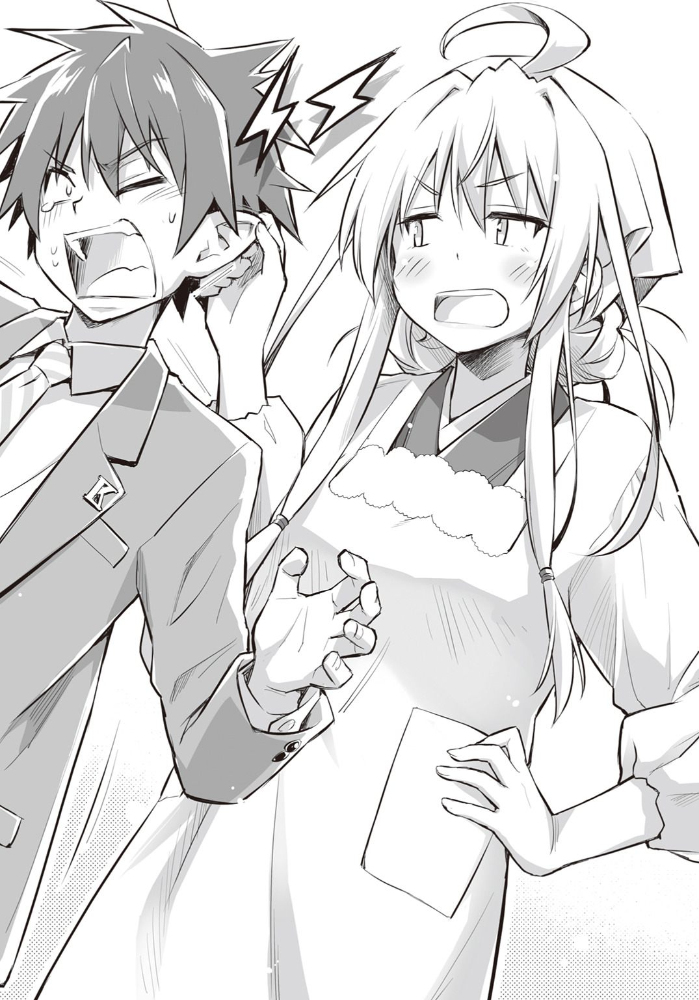
「分かるってんだよ。アタシが何年オンナをやってきたと思ってるんだい」
「十七年？」
「ふふっ、波乱に満ちた十七年だったよ。おかげで男女の機微には敏感になっちまってねえ」
新田先輩。感情が理解できない（笑）とかいう設定はもういいんですか。
「それに引きかえ、アンタは昔から女ゴコロに疎かったからねえ」
「ちょっと先輩。ご自分の設定はいくらでも自由に捏造してくれて構いませんけど、他人の生い立ちまで好き勝手にいじくるのはやめてもらっていいですか」
ちなみに誤りなく言及するならば、僕は女ゴコロとやらに疎いわけでも聡いわけでもなく、単にそんなモンと関わる機会のない半生を過ごしてきたというのが正しい。余計なお世話だ。
「じゃあ、まあ、そんな言うなら教えてくださいよ。どうして俺は河和さんの不興を買っちゃったんですか」
「そんなもん決まってるだろ。それはね」
「それは......？」
「アンタみたいな腐った男に一丁前の色目を使われたから怖気が走ったんだろ」
「ええええええええっ！」
悲鳴です。コレ驚愕じゃないです、哀切の悲鳴です。
「う、う、うそ......男として、そこまで終わってるんですか僕......」
かたかた震えながら、僕は乙女のように両手で口元を覆っていた。
「まあ、たぶん？」
「たぶんかよ」
僕は回復した。
「ああびっくりした。よく考えたら、やっぱり新田先輩が他人の心情なんて理解できるわけないじゃないですか」
平素なにかとネガティブシンキングな僕ですが、今日このときに限っては究極のポジティブシンキング。
我々の精神には、受けとめきれない巨大な外的ショックをなんらかの手段でうっちゃろうとする、自己防衛機能があると言います。たぶんそれ。
「アラやだ、この子ったら、すぅーぐ嫌なことから目を逸らして！ やれやれ、こんなところまであのひとに似たのかしらねえ」
どのひとだよ。
「先輩の彼氏ってどんなひとなんすか」
「えっ」
いきなり素に戻りましたね。
「え、なんで、えっ？」
「いや、さっきから所帯じみたことばっか仰るんで。さぞかし付き合いの長い恋人さんがいるんだろうなーと思って」
「あっ、うん......そう、ね......まあ、そこそこ？」
「何年ぐらいすか？」
「あー、そーね......うん、どうだろ、十年......ぐらい、かな......」
「へえ。小二で恋人付き合いはじめたんですか。菊華ちゃん、おませー」
「え、ええ、そうね......たしかに《在来人種》の心身形成速度で鑑みれば、多少時期尚早に思えるかもしれないわね......」
だからソレ昔の《換装式人格》だって。
「けれど、あいにく私たちは先んじて《精髄》の成熟を迎えているのだから、何も不自然なことではないのよ」
などと、めちゃめちゃ不自然な言い訳をする新田菊華であった。
「要はいねえんだろ、彼氏」
「はん！ ナマ言ってんじゃないよ、この子は！ いいから早く宿題済ませな、この恋愛弱者！」
「っせえなあ！ いまやろうと思ってたんだよ、この厨二ババア！」
「なんだってえ！ まーったく反抗期なんだから、いちいち素直じゃないってんだよ」
その通りだ。だから素直じゃない僕は、冷やかしたくもなったんだ。
だってこの先輩、見た目だけは完璧じゃないか。これだけの美人なら、どんだけ性格がコレだとしても付き合いたいと言いよってくる男は、それこそローティーンの頃からいたはずだ。いないわけがない。それでも今日まで独りというのは、つまり、自らそう望んできた結果なんだろう。どうせ。
選べる側の人間。
「けっ」
ちょっぴり反吐が出ました。
「どうしたんだい？ 宿題難しいのかい？」
「そっすね。人生って難しいっすね」
「ふふっ、分かってるよ。アタシはアンタが頑張ってること、ちゃあんと分かってるからね。いい子、いい子」
それほど美人のおねいさんに、慈母の微笑で頭を撫でられると照れくさいというか、なんだ、こそばゆい。
「やめろよう」
しかし反抗期なので反抗した。
いいのです。どうせその慈しみの微笑だって作りものでしょう。僕が欲するのは真実の愛なのです。
「新田先輩。その《換装式人格》とかいう設て......じゃなくて、メカニズム？ はもういいかげん諦めて付きあいますけども、どうせならもうちょっとマシなＯＳは無いんですか」
「アラやだ！ まだ口答えする気だよ、この子ったら。しょうがないねえ、たとえばどんなのがいいんだい？」
「たとえばですか......じゃあ、そうですねえ。ま、あくまでたとえばっすけど......」
そう。これはたとえばの話だけど。
もっと頭を撫でてもらえたら素直に「わあい、ありがとう」と喜べるような。ってなると――
「メ、メイドさん、とか？」
「はあ......」
溜息をつかれてしまった。
「With ネコ耳とか？」
「馬鹿言ってる」
馬鹿呼ばわりされてしまった。
「産むんじゃなかったよ......」
「産まれてねえよ......」
二人うなだれて――暗転。
③ 迫る普通の女子高生
朝。
軽くパンつまんで、制服着て髪チャッチャして、さてカバンも持ったぞ出発だ。
「んじゃ、かーちゃん行ってく......」
「行ってきー！」
出がけの背後にどたたたと吹きぬけた一陣の風。というか妹・鞠弥。
ばびゅぅ～ん、みたいな。一切の迷いもない、華麗なオーバーテイクだった。
ますの二文字ぐらい略すな、という批難を差しこむ隙さえなかった。
お兄ちゃん一緒に行く？ なんて言葉が出るわけもなかった。
僕だっていい歳して毎朝毎朝、妹と同じ電車に乗りたいわけじゃないけれど、その態度はちょっと冷たくないかい。
なんて冗談でも文句を付けようモンなら、また鬱陶しがられるのだろうなあ。
反抗期めんどくせ、と思って僕はそのまま妹の背中をただ見送った。
まあ、べつに、向こうが振りかえってきたら一声ぐらいかけてやってもいいけど。
まあ、べつに、向こうが一緒に歩きたそうな素振りなら話相手にぐらいなってやってもいいけど。
まあ、べつに、向こうがどうしてもって言うなら電車ン中で隣りにいてやって、軽く痴漢除けにぐらいなってやってもいいけど。
しかし、まあべつに検討するまでもなく、とっくに見えなくなってるんですけどね、妹。
ありがちな有田兄妹の登校風景。
※ ※ ※
そして駅で再会するのも有田兄妹あるある。
「おー」
「あー」
声とも呼べない曖昧な意思疎通。
僕のお目当てよりも一本早い電車を狙っていたはずの鞠弥が、まだホームにいるということは。
「なに、電車遅れてんの？」
「みたい」
「なんで？ 事故？」
「さあ」
「動いてはいんの？ 停まってるわけじゃないの？」
「知んない」
知んなくてもいいから顔ぐらい上げなさいよスマホから。
「............」
いたたまれない沈黙。
昨日たまたま一緒に登校したからって調子に乗って連日話しかけんな、ってなトコですかね。
はいはい反抗期めんどくせ。
んじゃな、と先へ進もうとしたら鞠弥があっさり顔を上げた。
「分かった。線路にひとが入っただけだって。じゃあすぐ来んじゃね」
「あ、ああそう、よかった」
うん、よかった。鞠弥が単に遅延の理由を調べてただけと分かって。
「てかさァ、線路にひとが入ったとかゆって、ソレ違くてホントは痴漢が出た説あるよね」
「え......ああ、あるある、うん、ある」
ていうか、会話続くんだ。今日はご機嫌うるわしいのですね、姫。
「あとアレだろ、あの、急に車内点検とか言いだしたときとか。こないだテレビでやってたよな」
「そだ、チィ兄と一緒に観てたんだ。そーそーソレ、上の兄ちん出てた番組」
「兄ちん影薄かったけどな」
「薄かったゆーな。あの若さでちょいちょい役付きで出るよーンなって、大したモンじゃん」
「そりゃそうだけどさ」
「ねー、兄ちん今度いつ帰ってくんのかな」
「さあ......しばらく難しいんじゃない？」
有田家長男、という両親の前では触れづらいデリケートな話題がのぼったところで、録音テープではないライヴな駅アナウンスが入った。
たいへんお待たせいたしました。大宮行き、まもなく参ります。
首を伸ばせばレールの先、朝の向こうからアルミ色の直方体が迫っていた。
このタイミングで妹が「んじゃ」と別の乗車列へ移ることもある。あるいは、彼女の露骨なあっち行けオーラを感じて僕の方から逃げだすこともある。
しかしいまの彼女は、電車がホームに滑りこんできてもだらだら喋りつづけていて、反抗期成分ひかえめなご様子。
「あ、じゃあ、一緒に行く？」
「ハ？」
睨まれた。突然。なぜ。
「なんて？」
「いや、だから学校まで......い、いっしょ、に......」
言ってるうちにも鞠弥の表情はみるみる冷めていった。比例して僕の声も萎んでいった。
「ふゥ――......」
鞠弥さん、片目を細めて茶髪をわしゃわしゃ。
「ソレさあ」
「あ、はい」
「そーゆーのさあ。ねえ。わざわざ言わないでよくない？」
「は？」
「言わなくても、いまフツーにそーゆー流れだったじゃん」
一緒に登校しましょうという流れ。
まあ、たしかに。
「そうだけど、なんで。べつに言ったっていいじゃん。問題ないじゃん」
「問題あるよ。言葉にするとキモいじゃん」
「きも......」
僕はショックのあまり復唱＆絶句してしまった。
それでもダイヤは回ってる。電車が来たりてドア開く。僕と鞠弥は、前後の乗客に押されるようにして満員電車へ詰めこまれた。
「い、意思疎通の基本は、言葉のキャッチボールでしょうがよ！」
「チィ兄、何年日本人やってんの。うちの国はお察しの文化じゃん」
引き続き、吊革つかんで左右に並んだ兄妹の会話。
高速で流れる埼玉の田園風景に、うっすら被さる冴えない顔。ああ、僕か。
「つうか鞠弥、あのう......なんだ、参考までに聞くけど、キモいってのはなんだ。なにがキモいんだ。顔か、言い方か、言うときのこういう無駄な手振りか」
「だから......」
妹、ふたたび息継ぎ挿入。
「そーゆうトコでしょ」
「こーゆうトコロか！」
漠然トータリティ。なんとなく全部ってやつか。参考にならねえよ。
「じゃあさ。キモいっても色々あるじゃん。『やだ～ちょっとキモカワ～』みたいのから『すいませんわりと本気でキモいんですけど』みたいのまで。それでいうと俺はどの辺のラインなわけ」
「あのー......」
「うんうん、何キモグラムぐらい？ え、トンは行かないよね？」
「うちも言っといてナンだけどさ......ちょ、気にし過ぎじゃね？」
兄の熱意に打たれ、鞠弥はついに白旗を揚げた。
「ハァ......わかったよごめん、キモいは言いすぎた。言い方換える」
「えっ、本当？ なになに、凛々しい？ 格好いい？ 抱かれたい？」
「メンドくさい」
「えええっ！」
びっくりした。うそだろ。もとより自分が素直な性格だなんて思ってないけど、だからと言って世界一めんどくさい反抗期の小娘に言われる筋合いはない。
「もしくは青臭い」
「ええええええーっ！」
なんという......なんという屈辱！ こここ、この早熟な精神で知られる大人・有田が、こんないまだ毛も生えておらぬリア中の小娘ごときにッ！ ふぬううう......！ いや、生えてるのかもしれませんけどね。
「だって、チィ兄って、自分のことすげー大人だと思ってンじゃん？」
「えっ」
「んで、うちとか世の中、キホン下に見てンじゃん？」
「い、いや、そんなことはないと思うけど......」
「そーなん？ じゃー、ナチュラルに上からなんだ？」
「まさか、だから、そんなことはねえってば」
下に見てるとか、そういうことじゃなくて（たぶん）。
「そりゃまあ、ひとつ違いッたって妹は妹だから、こっちが大人になんなきゃっていう保護者感覚みたいのは多少あるけどさ」
「どっちでもいいけど、そーゆー態度透けてるときのチィ兄を相手すんのって、うち正直キモいんだよね。あ、言っちゃった。ごめん、じゃなくて、メンドくさいんだよね」
「うそぉ」
めんどくさいのはこっちだったのか？ まさか！ そっちでしょうがよ！
「言っちゃ悪いけど、ぶっちゃけチィ兄って女子苦手じゃん？」
「こ、今度はなんの話だよ......」
そしてなぜ僕のトップシークレットを知っている。やっぱエスパーか。
「まあね？ チィ兄ぐらいの歳で女を知ってるぶられたところでどうせ失笑モンだから、それはべつにいいんだけど」
よくねえよ。なんでそんなお姉さま目線なんだよ。
「いんだけど、気付いてる？ 最近チィ兄、うちと話すときでもその苦手感、若干漏れてンの」
「もっ、漏れてねえよ！」
「もうさあ、お互い思春期なのは分かるけど、オメどんだけ女子慣れしてねンだよっていう」
「漏れてねえ、つってんだろ。あと誤解を招くような発言やめろ」
「ま、さいわい恋愛感情とか性欲みたいのが１ミリもないのは助かるけど――」
「オエエエエェェー！」
当たり前だ。そっちこそキモいこと言うな。思わず形而上の吐瀉物が迸りましたわ。
「――だからって、そんな『女子は難しいなあ』とか『こんなこと言ったら怒らせちゃうかなあ』みたいなオーラだだ漏れで話しかけられると、こっちとしちゃ女子じゃねえだろ家族だろって思っちゃうわけ」
「そ、そ、そ、そんな......こと......」
ないと、思う、のだけど......
なんだろう。鞠弥の言葉にところどころ「そうだったのか」と手を打ちたくなるこの感覚。
「いや、まあ、たしかにおまえの言い分は――」
「おまえ？」
「あ、いえ、君の言い分は分かったけど......でも家族っても、そこはしょーがねえんだよ。オトコ親とかオトコ兄弟ってのはフツーそういう不器用なトコあるものなんだよ」
「んにゃ？ 父親も上の兄も、ついでにクミちんトコの兄貴も、そんなん全然ないよ。うちの雁弥だけ。だからキモ......メンドくさいつってんじゃん」
「......もうキモいで良いです」
兄はイジケてしまった。
ぶらーり、ぶらーり。吊革に体重をかけて左右に揺れてしまった。
いいんです。どうせ僕なんかキモくて青臭くて面倒なやつなんです。ぶらーり、ぶらーり。
「だから話戻るけど、さっきの『一緒に行く？』ってセリフ。アレとかもう苦手意識まるだしじゃん」
「なにがだよ。ぜんぜん普通じゃねえか。いちゃもん付けてんじゃねえよ」
やさぐれた僕は、なかば妹に背を向けていた。くだらねえ。もう聞く耳もてねえわ。
しかしその背中をツンツン？ なんつって小さく突かれると、ついムスッとしながらも顔だけ向けてしまうよね。
「あんだよ」
「じゃあチィ兄、中学んときのチャリンコ通学思いだしてみって」
「あ？ なんで中坊時代」
「チィ兄に友達いたの、中学までだから」
「............」
そうだけど。
「でー、途中のコンビニで、阿部チャン先輩とか未來パイセンにばったり会うじゃん？」
「あー......そんなんあったなあ、よく」
ていうか鞠弥って、自分はわざわざお受験して遠い私立の中学――ちなみに川高の付属です――通ってるくせに、俺ら地元連中の情報にも詳しいんだよな。
やっぱ本当は幼馴染みの連中と同じ公立中に進みたかったのかなあ。可哀想に、定員超過で抽選漏れしちゃったんだよなあ。
おっと、脱線。
「思いだした？ どうよ。仲良かったらわざわざ『一緒に行く？』とか、言わないでしょそんなん」
「え、どうだろ、言うんじゃない？」
僕は吊革の腕に額をつけた。
記憶のダイアルを、かつての騒々しい登校風景にチューニングする。
指針とする道標は、あの酒屋さん上がりのコンビニエンスストア。給食まで待てないやつらが隠しパンを買ってゆくことで有名な......
慌ただしい月曜の朝......
店先の小スペースに停めた自転車......
買い物を済ませた俺は、カゴにジャンプ（最新号）が入ったポリ袋を放って......
あー、ナツいなあ......思いだしてきた......
あのコンビニと......あの自転車と......あのころのジャンプ仲間......
※ ※ ※
「シュパァー！ ぎゃりぎゃりぎゃりぎゃり有田おはよぼーん！」
「おー。今日も自前のドリフト効果音がうるせーなあ、白井は」
白井未來。地黒でツンツンヘアーで常時ジャージの熱血陸上部員（※万年補欠）。よりにもよって真っ先に思いだしたのがこいつか。記憶の鼓膜が破れそうだ。
まあ、でもジャンプったら仕方ない。ジャンプに関する話、略してジャンバナは白井がいちばん盛りあがってくれたからな。ちゃんと黄金期の名作も抑えてたし、あいつは実に話のわかる男だった。
いや、生物学的には女だったっけ。まあ、本人も女としての意識ないって公言してたし、毎月男子と一緒に To LOVE るダークネスでげへげへしてたし、大した問題ではない。
「ねーねー有田ジャンプ買ったー!? 買ったよねー？ 買ったでしょ貸して！」
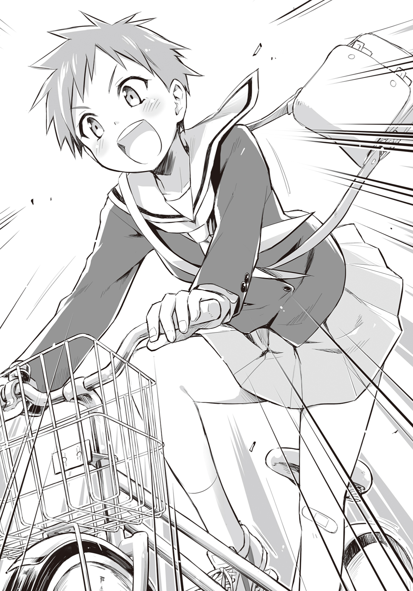
「てか今週やべえよ、サスケ死んだ」
「ハアァ～!? ゆーなよ！ 何この男さいてー、ちょ聞いて誰か！」
「うっそーん！ かかかか、見て見て阿部チャン、白井ちょお怒ってんの」
「有田ァー！ てめ、待てこらズギャギャギャギャ......！」
「うるせぇー！ 自前の爆走音うるせぇー！」
「ニトロＯＮ！ キュイィー......ボワッ！ バアァ――ン！ ボバババババ！」
「うお、はええ！ 白井車はええ！ そしてうるせえええ！」
※ ※ ※
「――つって、本当は校門入る前にメット被んなきゃいけないんだけど、デッドヒートに火ぃ点くとそんなん忘れちゃってさあ。ノーヘル通学でよく生活指導に怒られたわぁー」
「アッハ！ ウケるー」
違いない。そんな苦い記憶さえも、いまとなっては頰の緩むメモリアル。
あのころはあんまり自覚もなかったけど、いまなら分かる。楽しかったんだな、僕の中学時代。
「なんかチィ兄と未來パイセン、いっつも自前の効果音でギャンギャンゆってたイメージ」
「いや、それは白井だけな。あいつ会話の三割ぐらい擬音だから」
ちなみにほぼ必要性のない擬音です（例「有田おなか空いたーシュパンヌシュパンヌ」）。
「で、どーよ。やっぱうちの言ったとおりじゃね？」
「え、なにが」
「だから、仲のいい相手だったら、わざわざ『一緒に行く？』なんて確認はしなかったでしょって」
「あれ？ ああ、そういえば言わなかったな。うん、そうか、言わないかもな」
「だしょー？」
「じゃ、ついでだから。逆に、言っちゃうパティーンも思いだしてみー」
「なんだよ、それ。どんなパティーンだよ」
つか、なんだパティーンて。伝染さすな。テイク２行きます。
「なんだよ、それ。どんなパターンだよ」
「だから、そーねー、たとえば真蔵野パイセンに会ったときとか？」
僕の通っていた中学には、いわゆるマドンナ的存在がいた。みんな大好き真蔵野さん。遠く私立通いの鞠弥でさえその名を知っていたのか。
まあ、真蔵野さんはちょっとした芸能活動なんかもしてたから、なんら不思議ではない。そういうステージの有名人。そして小っちゃかわいかった。
「う、うっす真蔵野さん」
「え？ ああ、一年のときの......おはよう」
いまにして思えば、あの空白の「......」は僕の名前を思いだせなかった以外の何者でもない。
だけど当時の僕は、コミュニケーションというものが、場の空気や相手の顔色を伺いながら慎重に言葉を選択する緻密な思考作業であることにまだ気付いていなかった。
つくづく思う。無知とは罪だ。
「ハハッ、おはよ。え、なに、パン買ってんの」
「あ、うん......」
「そうなんだ、ハハッ、おれはジャンプ。あ、真蔵野さんジャンプ読んでる？」
「あー、漫画はあんまり......」
「そうなんだ。あ、じゃあハハッ、学校まで一緒に行く？」
「（うわあああああああ――!!）」
僕は叫んでいた。声を殺して喉の奥で叫んでいた（※乗客の皆さんへの配慮です）。
無言のまま顔をひん曲げはじめた兄に、鞠弥が眉をひそめていた。
「なに、どしたん」
「あ、あぶねえ......封印されし闇の記憶がよみがえるとこだった......」
やばかった。マジやばかった。あれ以上思いだしていたら、間違いなく僕は恥ずか死していただろう。
「鞠弥、よく分かったよ。君は間違ってなかった。むしろ教えてくれてありがとう」
そうだね。たしかに僕はちょっぴりキモかったかもしれない。トンまでは行ってないけどね。
「ちなみに真蔵野パイセンなんて？」
「へ？ なんてって？」
「や、だから。一緒に行こうって誘ったチィ兄は、真蔵野パイセンになんつって断られたの？」
「断られたの決定かよ」
「違うの？」
「ち、違うよ。フラれたわけじゃないよ。『ごめんね私パン買ってくから先行っちゃって！』って言われただけだよ」
「うん。フラれてんじゃん」
「フラれてないでしょうがよ！ 買い物あるから一緒に登校できないって言っただけでしょうがよ！」
「いやいやいや、おかしいじゃん。最初にパン買ったッつってたのに、なんでまたもっかいパン買う必要があんのよ。ありえないっしょ」
「ま、真蔵野さんは......ぐすん、とても食いしん坊な女の子だから......ひっく」
「え、つうか、まさかとは思うけどチィ兄......」
「う......ううっ......」
鞠弥の目に、さっき見たあの冷たい色が堆積していった。兄をキモいと呼んだ、あのときの色が。
「ちょっ......やだ、噓だよね、チィ兄......？ まさか、やんわりフッてくれた真蔵野パイセンの優しさにも気付かず、馬鹿まるだしで『あ、じゃあおれ、パン買い終わるまで待ってるよ』とか恥の上塗りしちゃったわけじゃ......」
「（うわあああああああ――！）」
「（きゃあああああああ――！）」
兄妹の声なき悲鳴が満員電車に呑まれて消えた。
僕はとっくにトンまで行ってたんだ。
※ ※ ※
「ま、真蔵野さんは......ぐすん、とても食いしん坊な女の子だから......ひっく」
「まーね。ひとの言葉を疑わない純粋さがチィ兄のいいとこだと思うよ」
乗り換え駅のホームでふたり。妹はいつになく優しかった。
きっと同情を禁じえないほど過去の僕が痛ましかったのだろう。
「あー、ねー、そーうぇば未來パイセンおげんこー？」
そうね。さっさと話題変えちゃた方がいいね。ナイスだね妹。
「あいつは世界が死の灰に包まれたって唯一人おげんこだろ」
白井未來は中学卒業後、県内とはいえ結構離れた私立の川高に進学した。つまり偶然にも僕と同じ学校を選んだわけだ。なんという腐れ縁。
「こないだ久しぶりにココ通りかかったの見たけど、だいぶカンジ変わってたよね」
「そだっけ？」
髪がだいぶ伸びてたのは後ろから見えたけど......全体的にあまり覚えてない。というか、そもそもあまり見てない。あのときはそれどころじゃなかった。
「や、めっちゃ綺麗ンなってたじゃん」
「へぇー、そう」
出たよ、女子の言う綺麗（笑）。
はいはい、そういうのね。あるある、ありますよ。僕だって年に一度の新年会では、親戚の伯父さん叔母さん方から、やれ男前になったのやれ歌舞伎役者みたいだのとベタ誉めされますけど、そういうアレね。
「あ」
ふと妹。固まる妹。どうした妹。
「そうぇばさぁ......アレ、なんだったンかな」
「アレって？」
「ほら、この駅で。その未來パイセンと一瞬会った日だよ。いたじゃん、この辺りに。ヘンな美少女」
ヘンな美少女。
「ああ......」
ヘンな厨二女。
「いたねえ......」
ヘンなジョリーン。
「そういえばチィ兄ってああいうタイプに好かれる体質だった気がする」
「初耳だっての。適当なこと言うな」
僕が好かれたいのは、河和さんのようなピュアで無邪気で奥ゆかしい天使のような女の子だ。
厨二病の痛いやつじゃない。
たとえどれだけの美貌を持っていようと、僕の本能はなぜか不思議なぐらい警鐘を鳴らしている。あれに関わるのは危険だと。
「あ」
ふたたび妹。固まる妹。どうした妹。
「やっぱチィ兄、なんか持ってンじゃん？ 引きよせる何か」
「うそ......来てる......？」
「うん、来てる。てか来た」
「うわぁー、振りむきたくねぇー」
「なんですってぇ！ ちょっとあなた！ 何よそれ、いったいどういう意味よ！」
「うわぁーまたこの前とは違う方向でヘンなキャラ付けしてきてるー......」
しかし、なぜだろう。
なぜ僕はこんなにも彼女を忌避してしまうのだろう。
「ちょっと何様のつもり!? あなた、なんだって私を無視するのよ！ あったま来ちゃったわ、もう絶対に許さないんだから！」
なぜもクソもないか。簡単だ。傍目にとても恥ずかしいからだろう。
※ ※ ※
「先日はどうも」
厨二女は僕と太陽のあいだに立つと、肩にかかった長い髪を手の甲でふぁさりと梳いた。実に演技過剰な身振りだった。
「............」
「チィ兄」
僕は下を向いて無関係を装おうとしたが、鞠弥に肘で促された。バックレてんじゃねえと。
「なんだよ、いいんだよ、ここは無視の一手だろ」
厨二女に背を向け、小声で妹に告げる。
「あのときちょっと情けをかけたのが失敗だったんだ。言ってなかったけど、あのあと大変だったんだよ。学校であいつの仲間に絡まれて。ああいうのは完全に構っちゃいけなかったんだ」
「つって、もうあの子、こっちガン見してんですケド。それ見て周りもこっちメッチャ見てんですケド。なんとかしれ」
今度は膝で促された。つまりニーキック。
「とりまテキトーに話聞いたげりゃーいんでね？ 気が済んだら帰るでしょ」
「帰らなかったらどうすんだよっ」
「あー......そっか、そのパティーンね......ありえるわー......」
自慢じゃないが僕は、昔から酔っ払いのおじさんとかクセのあるガキとか、妙な人種に懐かれるタチなのだ。そうか、鞠弥が言ってたのはそういうことだ。
「現に今日、待ち伏せされてたじゃん。すでに懐かれはじめてる気がするんだよ......」
「あー......ま、いんじゃね？」
「はあ？」
「いや、懐かれたら懐かれたでいいじゃん。あの子バリカワだし。アッハ！ やったねチィ兄、彼女げっとウェ～イ」
「ウェイじゃねえよ。喜べないでしょ。アレ、中身サイアクじゃん」
「お？ 可愛いは否定しない」
「............まあ」
この世にはときおり絶対的な美というものが存在する。
あれに比べてとか、個人的にはとか、そういう相対評価での審美を超越した、誰の目にも明らかなそれ。
べ、べつにあのぐらい普通だろ、なんて強がろうものなら却って薄ら寒くなってしまうほどの絶対的な美。
悔しいことに、そいつはそういう類だ。
そして、だからこそ胡散臭いのだ。トンデモ美少女との突然の出逢い。そんな都合のいいハプニングにすんなり適応できるほど僕は純朴じゃない。この世は喜劇だなんて、僕はまだ完全に信じたわけじゃない。
「ねえ！ ちょっと！ その兄妹秘密会議は一体いつまで続くわけ？」
「にゃー？ 終わりぁしたおー」
「あ、鞠弥っ、まだ終わってな......うおっ！」
ついには肩で促された。つまりショルダータックル。
ととっ、と僕は厨二女の前に突きだされた。やつは腰に両手を当て、これ見よがしな息を吐いた。
「はあ、まったく、やれやれだわ。あんたってば本っ当に朝から随分と待たせてくれるわね！」
怖いよう。なんでそんなに芝居がかってるんだよう。
「な、なにか御用ですか」
「なによそれ。気持ち悪いわね、急に改まった喋り方しちゃって」
「喋り方に関しちゃアンタにだけは言われたくねえよ！」
「な、なんですってぇ......」
「はっ！」
しまった、あまりにツッコんでくれと言わんばかりの振りが来たものでつい相手をしてしまった！
「私の喋り方のどこがおかしいって言うのよ！ だいたい、あなたが言ったんじゃない！ 《換装式人格》を変えろって！」
「言ってません」
断言します。そんな貴女様オリジナル設定の厨二用語、この口が申しあげるわけありません。なんだよ、フォーマット（笑）って。
「とぼけたって無駄よ！ ＯＳは変わってもメモリーデータは残ってるんですからね！」
「というか......さっきからその、なんかこう、ゾワッと来る喋り方は何なんすか。もっと普通に喋れないんすか、普通に――」
あ。そうだ。たしかにコレ、言った覚えがある。フツーのキャラにしろよ的な、そんな感じで。
「ふん、思いだしたようね！ そうよ、私は《フツーの女子高生》ＯＳをインストールしてきたのよ。べっ、べつにあなたのためじゃないんだからね！」
「............」
僕はにわかに頭痛を覚えた。
「......そらどこリサーチの普通ですが」
「そうね、東京都千代田区外神田１丁目あたりだったかしら」
「アキバじゃねえか」
「居並ぶ店舗におびただしい数の書籍資料が並んでたわ」
「試し読みは誤りなくお買い求めいただくためのシステムですからね？」
「ただ......現状の私の設定年齢では閲覧不可の薄い本が相当数あったんだけど、あれはいったい何だったのかしら。然り、これより本官は検索を開始する」
「さっそく以前のキャラに戻ってんじゃねえか」
その人差し指をこめかみに当てるポーズ見たことありますよ。
「う、うるさいわね！ 旧バージョンの素体にむりやり換装してるんだから、多少の不具合は出てくるわよ！」
「へー」
僕は拍手をしてあげました。
「いろんな設定があるんですね。それじゃあ」
「ちょ、ちょっと待ちなさいよっ！ まだ私の話は終わってないんだから！」
「ていうか、二次元キャラにしたって今時そんなコテコテのＪＫいねえよ！ 昭和か！」
萌えキャラなめんな。萌えコンテンツなめんな。デジタル世代が時代の最先端を切りとって愉しむ、日進月歩の嗜好品だぞ！
ふぅ、ふぅ、ふぅ......思わず禁断の絶叫ツッコミを使わせるとはおのれ......。
「チィ兄～？ 話、進まないじゃん......」
「え、俺が悪いの？」
進めると言った覚えはないのだが、なぜか僕は非難されていた。
鞠弥は僕の横からするっと一歩出るや、厨二女のスクールバッグにするっと手を伸ばした。
厳密にはバッグからぶら下がったストラップにするっと手を伸ばした。
「あー、コンバットンかわいー、見して見してー」
「あ、うん......いいけど......」
見せてと頼んだときには、すでにべたべた触りまくっていたけどね。
「アッハ、この顔！ 完全ラリッてんじゃんコンバットン、やばいコレ～」
ブる（＝ブリッ子する）でもなく、鞠弥は低いトーンのままするっと入っていった。
あいつ、するっと溶けこむのホント上手いよなあ。
まあ、兄も中学までは自分がコミュ障だなんて思ってなかったけどさ。
「ウケる、うちも欲しいかもー。えー、コレどこで買ったん？」
「ああ、仲間からのプレゼントなのよ。こんど彼女に聞いとくわね」
「マジー、よろー」
ちなみに『コンバットン』というのは、迷彩服に身を包んだシラコバトという設定のゆるキャラだ。たしか我が県の非公認マスコット。うろ覚えだけど、そういや一部のマニアな女子中高生に静かなブームとか何とか書いてあったな。川高の校内誌にも。
「あー、ねー？ うち、まりやたんだけど。そっち何たん？」
「ああ、私はきっかたん......って、なに言わせるのよ恥ずかしいわね！」
いや、分かんない。あんたの恥ずかしいの基準がさっぱり分かんない。僕の基準だとその喋り方自体が一から百まで恥ずかしいです。
たとえるなら、全裸で脱糞しながらうっかり自分をたん付けしちゃったところで、今更そんな些細な恥を気にしてる場合じゃねえだろっていう――
――いえ、すみません。さすがに女子相手にひどい例えでした。
「私は新田菊華よ。菊華でいいわ」
「うわあ」
私○○××！ ××って呼んでね！
フィクションではお馴染みのその自己紹介、リアルで使ってるやつ初めて見たわぁー。
「もちろん菊華たんって呼んでくれてもいいけどね！ クスッ」
「そうですか。じゃあ新田殿、さようなら」
僕は都合よく反抗期だった。
「ちょ、ちょっと！ 待ちなさいよ有田！」
「はあ、なんだよ。まだなんか......え？」
有田。
たしかにいま僕の名前を呼んだ。そうだ。このひとは、そういや、マチコ先輩たちに僕の手配メールを送っている。そこには有田雁弥という僕の本名がずばり記載されていた。
どうして......一度偶然会っただけの女が、なぜ僕の名を知っているんだ......
「フフッ」
「え？」
目が合うと、彼女は唇の下に人差し指を添えて、ぱちりと片目を閉じた。星が飛ぶようなウィンク。あまりの昭和臭、そしてあまりの押しつけがましい作り笑顔に、僕はめまいすら覚えた。
だけど、それでも不思議と目線を外すことはできなかった。
つまりその笑顔は、正直言って、悔しいけれど、有り余るナンダカナー感を差し引いてなお――
――めちゃくちゃ綺麗だったんだ。
そして、どこか懐かしいような、そんな温かみがあったんだ。
「や、やだ、どうしたのよ有田ってば、ひとの顔ジーッと見詰めちゃって。ま、まさか、私に惚れたなんて言いだすんじゃないでしょうね！」
「いや、つうか、あの......新田、さんって......」
「なによ」
「前に......僕と、会ったこと......あります？」
「当ったり前じゃない、なに言ってんのよ。ちょっと前に一度ここで会ってるでしょ！」
「じゃなくて......」
そういうことじゃなくて。もっと。もっと前に。
そうだとしたら、すべてがしっくりはまる。
とつぜん僕に絡んできた理由も。
この胸に湧いた懐かしい温かさも。
そして、彼女が僕の名前を知っていたことも――
「新田、菊華さん」
導かれるように僕はそれを訊ねていた。
「なんで、俺の名前、知ってたの」
「知りたい？ それはね......」
彼女はまるで宝箱の蓋でも開けるみたいにゆっくり口を開いた。
「学校で写真付きの生徒名簿を調べたから」
「普通かよ！」
そんな普通の方法かよ！
そりゃーそうだ。そういやこのひと同じ学校なんだし、そりゃー俺の顔さえ覚えてれば、図書室でも資料室でも行って名前ぐらい調べられるわな。
ふん、一瞬しょーもねえ錯覚起こさせやがって、この厨二女......
※ ※ ※
今朝、話があるとやつは言っていた。
「だからって律儀に聞きに来る必要はないだろに」
放課後、僕と鞠弥はふたたびあの駅でやつを待っていた。
「したらチィ兄は帰ンなよ」
正確には、鞠弥がひとりでやつを待っていた。僕は妹が気になって、帰りがてら様子を見に来ただけだ。
「あーもー、スタンプ間違っちったじゃん」
そして妹は友人とのＬＩＮＥトークに夢中でこっちを見ようともしないだけだ。
「鞠弥。やめとけって、どうせろくでもない厨二妄想垂れながされるだけだって」
「いいじゃん、うち聞いてみたいし。なんかあの子おもしろザウルス」
「あれはおもしろいって言うんじゃなくて、おかしいって言うんだ」
「つまー」
んないの三文字ぐらい略すな。
「ああ？ 何がつまんないって？」
「チィ兄の価値観」
「ぐ......」
わりかしショック。ほんのり赤面。思春期を迎えた一般的な自我の例に漏れず、僕は日ごろ常識を尺度に正邪を判断するような大人にはなりたくないと思っている男の子だった。
「ち、ちげえよ、べつにあいつのイタさ......個性を頭から否定してるわけじゃなくて」
じゃあ、なんだろう。
「アレだよ、ええと......ほら、だってあいつ、日本語通じないトコあったじゃん。迂闊に近付いて厄介事に巻きこまれても知らないぞ」
「べつに、そんなだったらそんとき切るし。とりま聞いてほしいつってンだら、話ぐらい聞いたげてもいんじゃね」
ひょっとして妹は将来ダメな男をほっとけなくて不幸になるタイプかもしれない。
「なに、なんかあいつのこと気になる理由でもあんの」
「............」
すまっ！ すまっ！ すまっ！（※妹が淡々とスマホ画面をフリックしている様を表す擬音です）
この反抗期ちゃんめ。勝手にしてくれ。
「じゃあ。俺、先帰るわ」
「あそ」
すまっ！ すまっ！ すまっ！ 帰んのかよすまっ！
......いまなんかボソッと言ったな。
「しゃーない。暇だから俺も付きあうわ」
ひょっとして兄は気まぐれな女に振りまわされて不幸になるタイプかもしれない。
そんで鞠弥は、すまっ！ すまっ！ すまっ！ とか繰りながら――
「まあキモいけど悪い気はしない」
何様だてめえ。そんな「荒削りだが光るものはある」みたいに。じゃあ一瞬ぐらいこっち見ろっての。
「待たせたわね、有田」
そんで、こいつもまたやたらと偉ッそうに。
「......なによ。なに見てんのよ」
新田菊華。つったな、たしか。
「べつに。俺は待ってません、待ってたのはこっち」
「ウェイ」
「あら、鞠弥じゃない。あなたも来てくれたのね」
ちょっと待て、新田菊華。逆だ、逆。そっちがメインだ。
「あえー？ もしか、うち要ンなかったー？」
「ま、まさか！ そんなわけないじゃない、もちろん大歓迎よ！ さあ、付いてきて」
「チィ兄」
「あん？」
鞠弥がとんと肩をぶつけてきた。
「やっぱ行ってみろし」
「どこに。便所か」
「んにゃ、菊華たん。やっぱ脈あり気じゃん。これマジ、イケんじゃね？」
「まあ、今のは俺も、ぶっちゃけ一瞬そう思った」
「しけ」
よし行け、と妹は顎を前に出した。
「ちけ」
落ちつけ、と僕は首を左右に振った。
「だからこそ逆にありえないんだよ。白々しすぎる。どうせ罠だ、ドッキリとかそんなよーなのの」
「だったとして、べつにチィ兄のカスみたいなプライドにまた一つヒビが入るだけじゃん。ここ逃したら次のチャレンジタイム、何世紀後に来るか分かんないよ」
「君、おおむね毒舌だけど、たまに毒舌なんて可愛らしいレベルに留まらないときがあるよね」
「ちょっと、また秘密会議？ まったく、あなたたちったらすぐそれなんだから、呆れちゃうわね」
呆れるだと。それはこっちの台詞だ。
「......まだそのぞわぞわする変な喋り方続けてんすね」
「うるさいわね！ また《換装式人格》を変えろって言うの!?」
「出た、フォーマット（笑）」
「分かったわよ、変えてやるわよ！ ちょっと待ってなさい、すぐにギャフンと言わせてやるんだから！」
※ ※ ※
「ぎゃふん」
そしてたしかに言わされた。
駅を降りて近接のデパート、その最上階に入ったフレンチレストラン『ジュール・セザール』。控えめな間接照明に溶けこんだラグジュアリーな内装。どこまでも沈みそうな北欧製の高級ソファー。
どこからどう見ても、中高生が制服のままフラッと寄り道するような店じゃない。
「ちょ、おい、まじすかこれ。本当におごってくれるんでしょうね？ 言っとくけど俺ら、財布のなか大して入ってませんよ。言っとくけど有田家、比較的貧しめな家庭ですよ」
「シャバい面してンじゃねえよ、ビッとしろや有田ァ」
しかし新田菊華は、半ば天井を仰ぎみるようにふんぞり返っていた。片手に瓶コーラ。爪先は膝の上。北欧家具よりインベーダーゲームの筐体が似合いそうな居住まいです。
「今度はまた随分とワイルドな方向に振ったもんすね......」
「菊華たん、それ何？ 何キャラなん？」
「知らねえ」
唇を突きだしつつ、顔を斜めに向ける。
「そこのシャバ僧にナメられねーよう、威圧効果の高いＯＳ適当にブッ込んできただけなんだわァ」
彼女は傾けた耳の穴に小指を挿しいれて、マニュアルでも読むように言った。
「えっとォ......？ 二十世紀後半、日本全域とくに地方や郊外に分布。幼態から成態への成長過程において、自然発生する攻撃衝動を内的に制御しきれず反社会的な言動を好むようになった個体。現地においては不良、ヤンキー、ツッパリなどと俗称された（牝体に限じてはスケ番とも）」
なるほど、ヤンマガっぽいフォーマットですね。残念です、ろくでなしＢＬＵＥＳならわりと分かるのですが。
「でェ、どうよ。有田の方は調査進んでンの」
突然の問い。
「はい？」
有田（×２）は揃って顔を見合わせた。有田ッつってんぞ、おまえのことだろ？ いや、有田ッつったらおまえのことだろ？ 的な。
「雁弥。てめえだよ」
「あ、俺？ はあ......なに、調査って」
「あん？」
新田菊華は顔半分の眉と唇を大いにひん曲げた。
「なにじゃねーンろ、ああん？ てめえバックレてんのか！」
ああ、新田のアネゴったら、いちいち机を叩いて立ちあがってそんな。
「あのう、ちょいボリューム絞ってもらっていいすか」
「ハァ～ア？」
近い。近いです。顔が近いです。
「殺すぞ、シャバ僧。てめえが《換装式人格》変えろって言ったンだろうが、ああッ？」
「い、言ってません」
そんな恥ずかしい厨二用語。
「吐いたツバ飲まんとけやコラァ！」
な、なに語？ ヤンマガ語？ とにかくすごい自信だ的な？
「うわあ、ちょお迷うー。ねー菊華たん、マジなに頼んでもいいのー？」
そして兄が絡まれてるのに呑気だな妹。
「おう、好きにやんなよ」
襟首を摑まれていた僕でしたが、投げすてるように解放されました。
「どうせ費用は《機関》持ちだ。《経理区》は現場の実態なんざ把握しちゃいねえ、あたいの申請は大抵通るんだ」
で、出たー。なんか世界を監視してる的な機関という設定ー。僕は白目になった。あたいとかいう噴飯ものの一人称が霞んでしまうほど白目になった。
「チィ兄」
「ああ、うん」
妹に制されて、僕は改めて高級ソファーの上で居住まいを正す。
「分かってる、とりあえず聞くよ」
頭ごなしに否定するのはやめる。僕は退屈な大人にならない。
「何様だてめコラボケェ！ お聞かせくださいだろうが！」
「お、お聞かせください」
卑屈な大人にはなるかもしれない。
「男のくせにヘーコラしてんじゃねえよ、てめコラボケカスぅ！」
「どっちだよ！」
威張るなと言ったり威張れと言ったり......
「あ、ごめんね。この兄、女子とまともに話せないんだぁー。だいたい上からか下からかどっちかなん」
「ばっ......話せますぅー！ ぜんぜん余裕で話せますぅー！」
「でも生意気に彼女募集中でさあ。若干キモいけど、菊華たん良かったらどう？」
「うっせ！ うっせ、だあってろクソ妹」
「カノボ......よう、あんだそれ。《機関》のデータバンクにも登録されてねえぞ」
耳の穴に小指を突っこんだ新田菊華が、豪快に顔をしかめていた。当たり前だ。有田鞠弥のオリジナル略語なんざ Yahoo! でも Google でも引っかかんねえよ。
「鞠弥っ、そういう余計な過保護すんなよ。だいたいおまえだって――」
「おまえ？」
「あ、いや、ええと、君だって......」
「雁弥ァ！ なに妹にビビッてんだてめえ！」
「ビビッてないですよ。いいんですよ。家族間には負けるが勝ちみたいトコあるんですよ」
「ハッ！ 笑っちまうぜ、カマ野郎が。おめえ本当にタマ付いてンのか、タマぁ！」
タマぁ......タマぁ......タマぁ......
リストランテの静寂に、阿婆擦れ女の下衆な声はよく響きわたった。
「ほら、な？ 鞠弥、言ったとおりだろ？ こういうひとに情けをかけるから、いま君はこんな目に遭ってるんだぞ」
「な、なにが......ウケるじゃん、べつ、べつに......こんなんハズくないし」
妹は無理をしていた。まだ青い彼女は、己の決断が誤っていたと認めがたいのだろう。
「雁弥ぁ、タマ見せろタマぁ！ てめえの股座にぶら下がったチンケなタマ見せてみろや！ おォ、チンカスがァこのチンカスがァ！ チ・チ・チ・チ、チンカスがァ！」
なんでちょっぴりスクラッチ風味なんだよ。ＤＪアバズレか。一瞬キキュ♪ キキュ♪いう幻聴聞こえたわ。
「チィ兄、ハズい......」
そして鞠弥は降参していた。
「............たすけて」
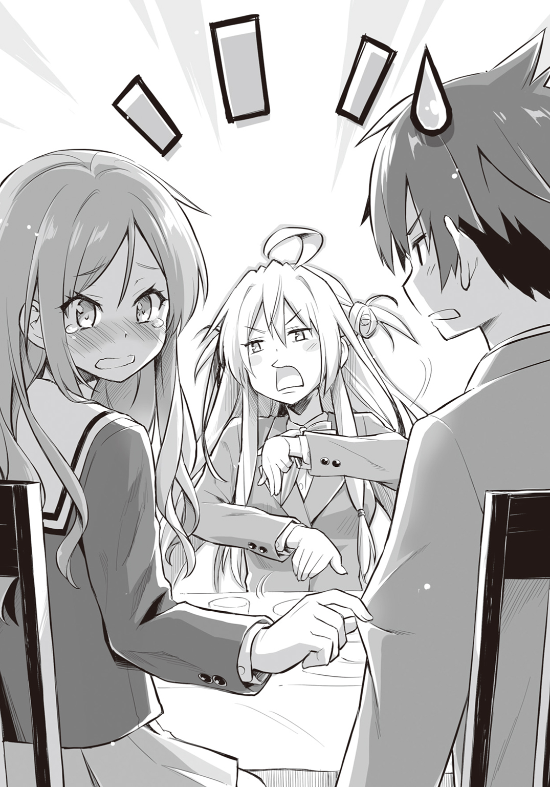
うん。良かったよ兄さん、僕らの妹はまだ清らかだ。
ていうか、なんで店員さんに叩きだされないのですかこの最悪な客。
「もしもし？ あのう、新田さん、お見かけするかぎり一応女子ですよね。羞恥心とかないんですか」
「ねえよ」
「ねえの」
ねえんじゃ仕方ねえや。
って、そんなわけにはいかねえや。妹助けるオレ雁弥。キキュキキュッ♪
「え、本気で恥ずかしいとかないの？」
「たりめーだろ。あたいらにそんなナマい感覚残ってたら最初からこんなとこ派遣されてねえっつうの。だろ？」
「はあ」
同意を求められたところで、そもそも質問自体イミフです。いよいよ厨二色が濃くなってきましたね。
「アッハ！ 何それ教えてウケる」
「君なんでもウケるね！」
好奇心は猫をも殺すんだよ。そろそろ学ぼうよ妹。
あ、いや、僕も型にはまった退屈な人間ではないからね。話ぐらいは聞くけどね。
「ハッ、上等だ。雁弥、話してやれ」
「え、俺が話すの」
雁弥、ご清聴モード入りかけたトコですけど。
「ていうか、俺に何を話せって言うんですか。まさか、そのワケ分かんねえアンタの――」
「アンタ？」
「あ、いえ、アナタの――」
こ、この女、知らぬ間にうちの妹のＯＳ入れたんじゃないだろうな。
「――その、機関とか派遣とか、そういうお話でしたら私はとんと存じあげませんけど」
「あんで知らねンだよ、てめコラボケカスアホンダラぁ！」
気のせいかもしれないけど、なんか、さりげなく罵倒語が一個ずつ増えてってませんか？
「おめ、前のメモリー解放されたンじゃねえのかよ」
「え、それは前世の記憶とか、そういうアレのことですか」
「おう、分かってンじゃねえか」
いいえ、分かってません。ただ前世の因縁はとりあえず厨二病患者の基本だと思うので。
「まあ、前世とか転生とか、そんな子供の御伽話とは違げンだけどな......」
「ほう」
私のは違う。それも基本ですね。
「かァー、参った。雁弥があたいらと同類なのは間違いねえと思うンだけど......」
「いやあ、間違いですって。俺そんな新田さんみたいな大した人間じゃないっすよ？ ってわけで、じゃあ帰るか鞠弥――」
「すいませーん、うち仔羊のなんちゃらかんちゃらとサーモンのうにゃにゃにゃにゃにゃー」
「帰ンねえのかよ」
しかも注文すごい雑。
「あ、じゃあ俺、ステーキでいちばん高いのー」
兄も負けずにすごい雑。
まあ、たしかにね、無料ってんなら食っとかないとね。
「旧人類ことわざ大辞典『ただより高いものはない』。与えられた恩義には身を挺してでも報いねばならない、というヤマト民族固有の精神文化。守らないと死ぬ」
新田菊華はふたたび耳の穴に小指を突っこんでぶつぶつ呟いていた。しかもその情報には一部あきらかな虚偽が含まれていた。
「そういや聞いた話だけど、有田家じいちゃんのじいちゃんぐらいでアメリカの血ぃ入ってるらしいんで。純血の日本人じゃないんで。恩義とか忠義とか超ファッキン。ああタダ飯うめぇー」
「なにっ......文明開化の折に、あの徳高きジークフリード卿の血が......？」
誰だよ。つうかアメリカつってんだろ。ソレ明らかにドイツの人名じゃねえか。
「やはり間違いない。有田雁弥、おまえは我らの同志だ」
「いえ、やはり間違いです。じいちゃんのじいちゃんの話、いま思いついた真っ赤な噓なんで」
「えっ」
新田菊華はぽっかり口を開けて固まった。じわじわ赤くなった。意外と可愛かった。
さて論破したぞ、どう出るよ。
「......いいや、有田雁弥、おまえの記憶は混乱しているのじゃ」
強引な切り返しキタァー！
つうかおまえ誰だ。スケ番キャラどこいった。
「いや、百歳ぐらい老けさせてもべつに説得力は増しませんからね？ もう認めなさいよ。記憶の混乱とかじゃなくて。俺がただテキトー言ったら、あんたがうっかり食いついちゃっただけですから」
「ううむ、そう思うのも無理はない。おそらく、おぬしの海馬に刹那よみがえった真なる記憶を、かの忌まわしき封印が出鱈目な虚構だと思いこませているのじゃろう」
「なんで？」
そのアドリブ対応力には、ある意味感心する。がんばるなあと思ってさらに切りこんでみた。
「え、俺の記憶、封印されてるの？ なんで？ 誰に？ どうやって？」
「それは......すまぬ、まだ言うことはできない」
新田菊華は神妙に首を振った。もどかしげな表情は、皺の寄り具合に至るまで脅威のクオリティだった。このビジュアルと演技力を持ってすれば女優にさえなれると思う。
それはそれとして、てめえ設定思いつかなくて逃げただけだろ。
「じゃが裏を返せば、その疑いこそ記録因子の自己賦活が始まった証左。待ちわびたぞ、同志カリヤ」
ほんと言い訳の上手さだけは感心するけども。
「いや、もはや伏せる意味もない......かつての名で呼ばせてくれ。久しいのう、コードネームＫａＮｏＢｏ」
「あきらか本日命名じゃねえか」
しかも命名者、《機関》じゃなくて有田鞠弥じゃねえか。
「おぬしの状況は元老院によろしく報告しておく。現段階で我らの素性をどこまで明かしたものか打診しておこう。結果は明日あらためてだ」
「つまり新しい設定を今夜中に考えてくるってことですね？」
「......すまぬ、まだ教えることはできんのじゃ」
ソレ便利だなオイ。
④ 始まらない終末戦争
「こちら有田雁弥きゅ～ん。うちの秘密兵器でェ～す」
「......へ？」
その日（旧）演劇部室に連れてこられた僕は、いきなり無数の視線を集めていた。
その内訳は、見覚えのあるギャルめな女子数名と、見覚えのない真面目そうな女子数名。
「彼が噂の......」
「喜劇部、期待のホープ......」
「パッと見はフツーね......」
昼休みにはいなかった勢が、ひそひそ囁きを交わしていた。そしてまた同じ感想かよ。
「な、なんすか」
というより帰っていいすか。苦手なんですけど、注目されるの。
扉を開けてわずか一秒、記録級の速さで僕は後悔していた。やはり来るべきじゃなかったんだ。まっすぐ家へ帰るべきだったんだ。
もっとも午後の授業が終わるなり「有田ッチ～、行っくよ～ん」とマチコ先輩がお迎えにいらっしゃりやがったので、そんな選択肢は存在しなかったのだけど。
ちなみに彼女のせいで、僕が五時間目六時間目の間ずっと、果たして本当に部室へ行くべきか、行くならばふたたび河和さんにご同行願うべきか、願うならばどのような声をお掛けするべきか、今度は二人きりでどんな話をするべきか、週末は映画と遊園地どちらへ誘うべきか、などと授業そっちのけで甘酸っぱくそわそわしていたのがすべて無駄になったのは余談です。
そして河和さんの僕に対する態度が、以前にも増して素っ気なくなったような気がするのも、余談ということにしておきます。
取って付けたように用事があるかと言いだして、まるで僕を避けるかのようにわたわた帰ってしまったのも、もちろん余談です。とても寂しい余談です。
本題に戻します。
マチコ先輩やモブ森先輩やモブ林先輩が、僕を席に着かせてクリーム地の厚紙と黒の水性ペンを持ってきたのです。
「有田、絵ぇ描ける？」
「いえ、全然。四次元殺法コンビ止まりです」
ボードに不細工なブラックホールとペンタゴンを描きなぐってみせた。これが僕の精一杯だ。
ちなみに超人師弟コンビぐらい描ければそこそこ、ニューマシンガンズまでイケるなら絵心があると言って良いレベルです。
「なにそれ」
まあ、伝わらないとは思ってたけども。
「失礼。ええと......ワンピースで言うとこのぐらいです」
僕はボードを引っくりかえして二頭身の可愛らしいトナカイ人間を描いた――つもりだったけど、思ったより難易度が高くて、謎のグロテスク獣になってしまった。仕方ないのでブオオオという描き文字を添えて「最初から暴走巨大獣モードの方を描いたんですよ」という態を装った――つもりだったけど、それにすら失敗して結局ただの黒い塊になった。作品名、ブルックの後ろ頭。
「つまり全然描けません」
僕は白状した。
「あ、そうなんだァ～。よかったァー。じゃあ描いてェー」
マチコ先輩は外国の方なのだろうか。いま順接の「じゃあ」という接続詞がどこに係っていたのか、まるで分からない。
まあ、いい。成果物を見せるのが手っ取り早いだろう。自慢じゃないが僕の絵は真実ひどい。
中学時代は美術教諭から、絵画は真心さえ伝われば良いのですという主旨の超法規的措置をいただくことで赤点を免れておりました。
「分かりました。では、なにを描きましょう」
「苦虫」
「は？ なに虫？」
「苦虫」
続・まるで分からない。マチコ先輩は地方出身の方なのだろうか。首都圏50キロ圏内で生まれそだった僕には馴染みのない名前だ。
「？」
僕ははてなと首をひねった。
「なんでよ、あんた日本人でしょォー。苦虫を嚙みつぶしたような、って言うじゃん」
「言いますね」
ええ、その慣用句は存じあげてますけども。
「その苦虫ってのを描きゃあいいのよ」
マチコ先輩はとうとう末期を迎えてしまったようだ。なにがしかの病の。
「マチコちゃん。いいかい、苦虫さんっていうのはね、泣き虫とか弱虫みたいなもので」
「てめえ私を馬鹿にしてんのかこの野郎」
保育士さんのように分かりやすく説明してあげようと思ったら首を絞められた。
「実在しないことぐらい知ってンだよ。だから想像して描けッつってんだよ」
がっくんがっくん揺すぶられた。
「なんで俺がそんな大喜利みたいなことしなきゃならないンすか」
「勝負を挑まれたから」
「は？ 誰に？」
「こちら。漫画研究会の皆さんでェーす」
マチコ先輩が示した先を目で追うと、昼休みにはいなかった勢の姉さんたちが、不敵な眼差しでにやりと笑った。
トン、と音を立てて起こしたボードには、見事なペン使いで麦わらの一味フルメンバーが描かれていた。どころか端の方に王下七武海までいた。なんなら護廷十三隊までいた。キセキの世代は現在進行形で追加されていた。黒子と青峰が必要以上に密着していた。
「副部長。無理です、勝てません」
「べつに画力勝負じゃないし、なんとかなるでしょォー。頼んだよ、自称秘密兵器」
「ちょっ、自称してねえよ。一度も言ったことねえよ。人聞きの悪いこと言わないでくださいよ」
しかしなぜ（旧）演劇部の部室に漫研が。そしてなぜ勝負を。
「部活間交流っすか」
「まー、そんなもん？ だから、失礼のないよう全力で取りくんでねェー」
通りすがりレベルの部外者に任せてる時点で、全力でも何でもない失礼の極みだと思う。
「まあ、どうせ拒否権なさそうなんでやりますけども」
学校は社会の縮図という。大人になれば、上司や先輩からちょっとした余興を命じられることだってあるだろう。
僕はペンを取った。お題は「苦虫」のビジュアル化。
まあ、苦虫っていうぐらいだから、たぶん苦いんだろう（小学生並みの感想）。
苦そうな虫......カメムシかな。いや、食ったことないけども。
じゃあ、ベースはこんな、六角形でー......
それから「嚙みつぶす」っていうぐらいだから、ある程度の硬度がありそうだな。甲虫系か。
嚙むとき、ペキッとかいいそうだもんな。じゃあカナブンっぽさを追加して......
あ、やべ、単色でカナブンの表現は難易度が高かった。ちょっとメスのクワガタっぽくなってしまった。
「ぎゃああああ！」
ちらりと覗きこんだ女性部員の間でおぞましい悲鳴がまきおこった。
「きめえええ！ 有田てめえ、ふざけんな！ なにチャバネゴキブリなんか描いてんだよ！」
「ちげえっすよ、メスクワですよ！」
いや、メスクワじゃないけども。
「やだあ......私ゴキブリだめなの......」
「ひどいよ、有田サイテー......そんな嫌がらせしなくても......」
怒号に混じってすんすん鼻をすする声まで聞こえはじめた。泣きたいのはこっちだ。
「違います違います、ほら、ゴキブリじゃないよーう。ちょっと日サロ焼けしたイケメンさんだよーう」
僕は緊急措置として二足歩行のボディを付けたした。じょうじ。
しかしお題からはだいぶ離れてしまった感があるので、少々ラフプレイではあるが「ボクを嚙みつぶすと苦汁ほとばしるぞ！」というセリフを添えておいた。
うん、まあ、あとはなんか適当にいろいろ盛っておこう。
「カンカンカンカーン！ そこまでー！ はい、両者一斉にフリップをぶはははは！」
司会の漫研部員さんは、最後まで言いおわる前に、僕の作品を見て吹きだしていた。
「ひどい！ これはひどい！ こんなの勝てるわけない！」
「そうだね......さすが喜劇部の秘密兵器、悔しいけどこれは私たちの完敗だな......」
相手選手は自らぱたんとボードを伏せた。
「え、いや、こんなガキの落書きより、そちらの写実的なアートの方がユニークで素晴らしいと思いますけど......」
「やめてよ。私たち、これでも絵を描くことには誇りを持ってるんだから......どっちが素晴らしい作品かぐらい分かるもん、自分に噓はつけないよ」
「は、はあ、そうですか......まあ、じゃあ、そういうことで......ありがとうございます」
よくわからないけど僕は勝った。
そして敗者は涙を拭いながら去っていった。
「漫画研究会......手強い相手だったわ......」
「いや、副部長なんもしてないっすよ？」
だからって俺がなんかしたとも思えないけれど。
「ま、そうね。たしかにそうだわ、うん、ありがとう。助かったよ有田君」
「ええ？ ちょっと、今度はなんすか。ドッキリですか。やめてくださいよ、そんな大袈裟な感謝」
「大袈裟じゃないよ。これで負けてたら夏のライブに出られなかったんだから」
「はあ。夏のライブ。って、なんすかそれ」
「や、だから言ったじゃん。学生演芸のでっかい地区大会があるって」
「ん？ ん？ んん？」
聞いてない。そんなことは聞いてない。
「それに出られるのは学校単位で一組だけなんだけどォー、出場希望のチームはうちらだけじゃないから、まず夏までに出場枠をかけて校内でって......あ」
突如、ぴたりと固まる副部長。
「......あー、ほんとだァー。こんなん説明した覚えないわァー」
「おい」
スパァァーン！
上級生とは言え、思わずスリッパで叩かざるを得なかった。
「そっ、そんな責任ある仕事！ いきなり部外者でなんの情報もない俺に任せないでくださいよ！」
ただのその場限りのお遊びだと思ってたのに。
ひょっとして、部にとっては結構な命運が懸かってたんだじゃあないのか？
冗談じゃない。そんなもん、一介の帰宅部員には荷が重いわ。
僕は一刻も早く逃げたくなった。
今となっては、この空間に後ろ髪を引かれる思いも多少はある。しかし、だからこそ、これ以上足が重くなってしまう前に遠ざかるべきだと思った。
「帰ります」
「え、なんでェー？ 雁弥フ、うちの秘密兵器じゃん」
「そういう、いいように踊らされてる感じが嫌なんですよ。どうせ説明が足りないのだって故意なんでしょ、俺が状況よく分かってないうちに巻きこんでこうっていう」
「やぁ～ん、有田ッチ勘ぐり過ぎぃー。半分はホント、ただのうっかりチャンだってェー」
「じゃ、やっぱもう半分は故意じゃねえか」
「ごめんねェ、じゃあ改めていろいろ説明するからァー、また明日ここ来てちょォ～」
「いえ、結構です。そうやって何度もここに足運ばせてずるずる情を湧かせる、みたいな手口じゃないすかソレ」
「正解♪」
副部長、ついに居直っちゃったよ。
「ハア......もういい、帰ります。失礼しました」
「えー、お茶してきなよ有田ァー」
「断固拒否します」
なぜなら糞ビッチ先輩方とはいえ、女子は女子。大勢の女子に囲まれてティーパーティーなぞ、さすがの男・有田もうっかり鼻の下が伸びかねない。いかん、いかん、いかん。
「そろそろ買い出し要員も戻ってくるよー？ ケーキだよ、ケーキぃ」
「要りませんよ、そんな甘ったるいもん！」
甘ったるいハニートラップ、という意味だったのだけど。
「え......あっ......ケーキ、嫌いだった......？」
だけど噓のようなタイミングで、ケーキの箱を抱えた河和さん登場。
あ、さっき教室で言ってた「用事」って、ひょっとして、僕のために買い出しを頼まれていらっしゃったんですか。
「そっかァー、有田もう帰るんだァー。しゃーない、うちらだけで食おっかァー」
「いえ、いただきます」
「なんで。帰るんでしょ。断固拒否とかゆっちゃって、帰宅にかける強い意志をぎらぎら漲らせてたじゃん」
「いえ、帰りません。断固いただきます」
「じゃあ頭下げろよ」
「ははァーっ！」
こうして僕は、徐々にこの空間に馴染み、そして徐々に飼いならされてゆくのだった。
※ ※ ※
「えー、出席を取ります。有田雁弥くん」
「へーい」
「有田鞠弥さん」
「ウェーイ」
「新田菊華さん」
すっ、とセルフ挙手する先生。
「はい、全員いますねー。えー、それでは、えー、本日のホームルームを、えー、始めたいと思います」
新田菊華、本日は教師キャラのようだった。
しかし講演会場は教室ではなく例のフレンチレストラン。
今日もテンション低いくせに根は社交的な妹の付き添いで、僕も授業に同席していた。いや授業じゃねえよ。
「えー、注意事項です。えー、このところ周辺区域に不審な人物の徘徊が報告されています。
えー、皆さんはそういった怪しいひとに声をかけられてもですね、えー、決してついて行くことのないようにね、えー、気を付けてくださいね」
「へいへい」
自虐乙、っと。
「有田君。『へい』は一回でいいです」
「へ、へい」
いいからさっさと次行けよ、次。
「えー、それでは授業を始めます。教科書79ページを開いてください」
「せんせー、なんの教科書ですかー」
鞠弥。いちいち相手しなくていいぞ。
「えー、そうですね、それに関しては各班よく話しあってですね、えー、まー、基本的にはなんでもいいんじゃないかなと、先生はこう思っております」
適当ここに極まれりな授業だ。
適当な協議の結果、僕は高一の現文、鞠弥は中三の英語を開いた。新田先生は大根スティックを手にしていた。
「えー、今日はですね、大宇宙マクロコスモス史において非常に重要な転機となるであろう《終末戦争》、こちらについて勉強していきたいと思います」
そして板書していたわけでもないのに、大根スティックを手放したあと、なぜか手のひらを二～三度擦りあわせていた。いや、チョークの粉なんて付いてねえよ。
「せんせー。しゅーまつせんそーってなんですかー」
鞠弥は偉いなあ。厨二病患者の妄想設定にちゃんと喰いついてあげるなんて。
まあ、終末とか戦争とか、ちょっと男の子としてはソワッと来る響きではあるけどね。
「えー、有田さん良い質問ですね。それでは、前回までの授業を簡単に振りかえってみましょうか。えー、教科書74ページで学びました通りね、えー、プライム・マテリアル・プレーン――いわゆるいま皆さんのいるこの世界ですが、こちらの方、まずグレゴリオ暦でいうところの21世紀前半にまるっと消滅します」
「ハ？」
「はい、消滅します。綺麗さっぱり。以降、全銀河全宇宙において、無機・有機を問わずあらゆる物質は存在できません」
「............え」
まじか。とんでもないなソレ。しかも21世紀前半ってぼちぼちじゃねえか。いくら妄想にしたって衝撃の展開だぞ。僕は思わず教科書74ページを開いた。カムチャツカの若者がきりんの夢をみているとき、メキシコの娘は朝もやの中でバスを待っていた。ただの高一現代文だった。
ゆっくり首を回して隣りを見ると、やはり妹も慌ただしく教科書74ページを開いていた。ボブとメアリーは彼らが好むところの音楽を五年間しばしば聞きつづけていた。ただの中三英語だった。
「え、先生それは......あの、なんで消滅すんですか？」
若干の負けた感は否めないが、しかしちょっと引きのある設定だ。妄想も高じればスペクタクル。聞いてみれば意外と全米が涙する飛びっきりのトラジディかもしれない。
ちなみに僕と全米は比較的感性が近い。全米が泣く映画はたいがい僕もウルッと来る。マジ俺の涙腺ハリウッド。
「なんで消滅。はい有田君、これは愚問ですね。えー、それはですね、そういう運命だからです」
「作り込み甘めぇな！」
なんだそのザル設定。それでも厨二病かい。そこをソレっぽく騙るのが設定厨の肝じゃないのかい。
「えー......静かに、静かに。えー、全員目を閉じなさい」
「はい？ なんで？」
「えー、とても悲しいことですが、この中にいま先生の悪口を言ったひとがいます。えー、怒らないから正直に手を上げ――」
「はいはいはい！ 兄です兄！」
「はいはいはい！ 俺です俺！」
「おまえか有田雁弥ァ！ なんばしよっとかあ、この馬鹿ちんがあ！」
博多弁。新田先生はとつぜん長い髪を振りみだしてゴールデン・エイト先生へと変貌した。
「エエッ、いいですかー冗談じゃーありませんよー！ 言うに事欠いて、教師に向かって作り込みが甘いとは何事ですかあ！」
語気を荒げながら、サイドの髪を豪華に耳へ引っかけるジェスチャー。やはりゴールデン・エイト的な先生のつもりらしい。世代的によく知らないけど。
「では、おほん......今度は先生から質問です。有田君」
どうやら彼女も詳しくなかったようで、ゴールデン・エイト的なソレは一瞬で去った。
「問題です。キノコを食べるとイタリア生まれの配管工が巨人化するのはなぜですか」
なぜですかって言うなら、なぜいま唐突にスーパーでマリッとする亀倒しゲームの話になってるのですか。
「さあ？ なんでだっけ？ いや、理由とかそんなの、考えたことなかったけど」
「正解です。考えても詮なきことです。そのメカニズムは配管工とその弟と、攫われても攫われても防犯意識の薄い桃尻王女さまだけが知っていれば良いことです。我々はキノコ取る→配管工でかくなる、この因果関係だけを覚えていれば良いのです。ヒトの子の分際ですべてを知ろうなどというのは驕りです。バベルの悲劇を忘れちゃいけません。ハイここテスト出ますよー」
「先生。知らない、のわずか四文字で済むところを随分と長々ひっぱったものですね」
「いえ、先生は知っています。知らないのを誤魔化してるとか、そういうことではないです。先生はなんでも知っています。知ってるけど、あなたはまだ知らなくていいと言ってるだけです」
「じゃあ教えてください。なんでイタリアン配管工はキノコを食うと大きくなるんですか」
「き、きのこが......大きくなるですって......？ きーのーこーがッ」
「先生、あのう、ひょっとしてまた下ネタ喚きちらして有耶無耶にするつもりですか」
「ひっ......！」
鞠弥の肩がびくんと跳ねた。昨日ＤＪアバズレが彼女の羞恥心に遺した爪痕は、いなまなお深いトラウマになっているようだ。キキュ♩ キキュ♩
「チィ兄......た、たす......」
けて。下ネタが苦手だなんて、ギャルい真似してるくせに意外と初心なところあるじゃないか。
じゃなくて、こんなシャレオツ店で大声出されたら内容以前に誰だってハズいわ！
というか、そんなん言ったらこの女自身だって――
「――恥ずかしくないんですか」
「えー、ないですねー」
そういや前にもそんなん口走ってたな、羞恥心はないとか何とか。まあ、無感情設定は厨二病とセットみたいなもんだから、さもありなんだ。
みんな大好き綾波キャラ。派手な特殊能力と違って、言ったもん勝ちみたいなトコあるしね。コミュ障な子なら、不器用な自分への言い訳にも使えるし。
ただひとつ言えるのは、林原さんってすごい役者だなあってこと。
「じゃあパンツ見せてください」
「............え？」
ほらね。意外と難しいんだよ、無感情キャラ演じるのって。
「いや、見せてくださいよパンツ。一瞬でいいから、パッと自分でめくって」
「エやだよ何言ってんの馬鹿じゃないの」
へぇー。地声そんな感じなんだ。
しかし僕はすっとぼけてなおも続ける。
「えー、なんでー？ 恥ずかしいって感情ないんでしょー？ パンツぐらいべつにいいじゃーん」
「わ、私が羞恥を覚えないことと、有田雁弥のきわめて個人的な劣情に応えることとの間に、有益な因果関係は導きだされない。よって、あたいは貴様に下着を見せない」
先生......キャラもうブレブレですやん......
「めんどくせえなー、いいからサクッと見せろよ。よいしょっと」
「ぎゃああああっ」
僕は身体ごと横に倒して、スカートの中を覗くふりをした。
彼女は椅子ごと後ずさってドでかい悲鳴をあげた。
「チィ兄......」
新田菊華のメッキをひとかけ剝いだ代わりに、僕は妹から白い視線を浴びていた。
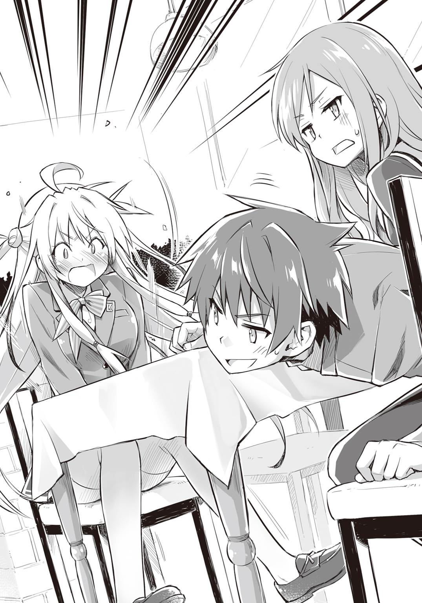
「いや、振りだよ振り」
僕は必死に弁解した。
「分かるでしょ？ 自慢じゃないけど、俺だよ俺。女子にリアルセクハラする度胸なんて、この俺にあるわけがないでしょう」
「まあ、そうか」
原告はあっさり提訴を棄却した。主文、被告人は女性恐怖症につき無罪。
「くっ......！」
それはそれでちょっぴり屈辱だった。
く、くそう、こんなことなら本当にパンツ見てやりゃよかったぜ！ なんならもっとすごいのも見てやりゃよかったぜ！ え、なんだろ、もっとすごいのって......え、もしかして......いやん、私ったら大胆～......
「有田雁弥ぁ！ なんちゅーいやらしい顔しよっとかあ、この馬鹿ちんがあ！」
そして新田菊華は、素早い切り返しでさっさと金八に戻っていた。
え、金八でいいの？
「いいですかぁ、聞きなさぁい！ 人という字はヒトとヒトとが支えあってぇー！」
ぶゎさっ！ ぶゎさっ！ と長い髪を獅子舞みたいに振りみだす新田菊八先生。
「でも無感情たらゆって、菊華たんあきらかハズがってたにゃー？」
「............」
文脈ガン無視な鞠弥の指摘を挿しこまれてフリーズした。
「......ふ、ふふ、それはよくぞ気付いたのう。よかろう、合格じゃ。うぬら兄妹を認めよう」
そしてなんだか分からないけどとにかく私はぜんぶ分かってたのよ的な方向へハンドルを切りはじめた。
ていうか、困ったときはいつもその老賢者みたいなバア様キャラが出てくるんですか？
「いや、そんな話じゃなくてさ」
しかし僕は逃がさなかった。自覚はなかったけど有田雁弥、意外とＳなのかもしれない。
「つまり恥ずかしかったんでしょ？ すなわち無感情じゃないんでしょ？」
「いいや」
老婆はたっぷり首を左右に振った。
「既存のイメージデータはおおむねインストール済みじゃ。機関にアーカイブされている《情動》ならば、一応知識として学習してはおるのじゃよ」
「ん？ ん、ん、ん？」
なんだなんだ、いよいよそれらしい単語が頻発し始めたぞ。やっぱ真性じゃないか新田菊華。
思わず連れの反応を窺うと、妹は案の定ドン引き......いや、聞き入ってる？ はあ、相変わらず好奇心旺盛というか怖いもの知らずというか。
「分からんか？ 現時刻、この文化圏において、どういった言動が公序良俗に反するかは、同志らが長年かけて集積した膨大な情報群によって統計されておるのじゃ」
「なん......だと......」
相手に感化されて、うっかりこっちまで少年誌ノリになっちまうぜ！
「つまり......どういうことだってばよ......」
「つまりじゃ、我らは羞恥心などなくとも、旧人類の生態を模倣した反射行動を取ることは可能なのだよ」
誰が旧人類だ。
「なめんな。じゃあやってみろ、その模倣とやら」
僕は今一度スカートの奥を覗く真似をする。
「きゃあ！」
「いいや、そんな可愛らしいリアクションじゃなかったね。もっと目玉くわっと開いて、ダミ声でぎゃあああだったね」
「ソノ......その《情動》は、スデニ......すデに、機関へ、アップロードし、アーカイブ、済み、である。フォーラム、の、同志が、解析、シタ、結果も、実時間で、三十秒前に、届イテ、いる」
「お、おう」
彼女は両のこめかみにそれぞれ人差し指を立て、合成音声みたいなぎこちない抑揚で語りだした。
なんだ今度は。なんの物真似だ。siri か？ ボカロか？ とりあえず落ちついたから老婆キャラはやめたみたいだ。つくづくキャラのブレる厨二ちゃんである。
「そんで？ そのフォーラムとやらの同志はなんつってんの？」
「コノ時代、この国におけル、あの状況に瀕した青年女子の情動としテハ適正率73％以上。つまり、下劣な異性に下着を目視サれうる際の不快感とシて〔ありがちな反応〕と評価する。【良】」
なんか、だんだん設定が込み入ってきたな。ちょっと真面目に聞いてみたい気はするけど、いかんせん言ってる内容が見えてこない。下劣な異性とか、まったく意味が分からないし。誰だよそいつ、けしからんな。
「タだし――」
お？ まだ続くのか？
「――外部ノ主観においテは、いささか〔はしたない〕リアクションと評価すル可能性あり。以降、近似の状況に遇しテハ、より高音で短時間の嬌声を発スルべし。サンプルボイスを転送した。再生しマスか？ イエス――きゃあ！」
なるほど。それでさっきの「きゃあ」に繫がるのか。よく分からないけど、なんとなく「なるほど」と言いたくなった。
「ううーむ......」
僕と妹は言葉を奪われ、もはや唸るしかなかった。
馬鹿げた芸も長じれば芸術と呼ばれる。とは、かつて我が家の長兄が残した玉条だが、新田菊華のこの厨二芸は、もしやその域に届いているかもしれない。
「これは一周まわって、逆にすげえのかもしれないな......」
「え、てか、アドリブでこんなし全然ヤバいでしょ」
「な？ この労力を勉強に使えばいいのに、ほんと呆れるよ」
呆れるなどと言って僕はスカした微笑を貼りつけていたけど、その実、かすかな拍動の上昇を感じていた。
熱の上がるなにか。懐かしいなにか。心地よいなにか。この既視感はなんだろう。
「新田さん」
ともあれ僕は彼女の話をもうちょっと聞いていたかったのかもしれない。
「聞いていいかな。世界の真理をすべて知ってる新田さん」
「なんだい、殻を破りたい生まれたての雁弥くん」
新田菊華は僕の振りを受けて、瞬時に世界の真理をすべて知ってる風味ちゃんに変貌した。
「それが赤子の君に受けとめきれる些細な問いならば、もちろん答えてあげられるよ」
達観した眼差し。諦念の声音。神仏めいたアルカイック・スマイル。まるで本当に真理の扉から帰還したような、それはもはや次元違いの何かみたいだった。
「なんで配管工はキノコを食うとデカくなるの」
僕は呼吸をひとつ呑みくだしてから、くだらないことを聞いた。
くだらないことを聞くなあ、と彼女が目で笑った。
「マジックマッシュルームなんて呼ばれる特定の茸類には、シロシビンっていう幻覚成分が含まれているんだ。配管工の兄弟はこれを経口摂取することによって、高揚感や多幸感をふくむ強烈な精神変容を得て、まるで人間が大きくなったような錯覚に陥る。そうして相対的に彼の世界は小さくなるんだ」
なんだか匿名掲示板あたりで見かけそうな考察だ。キノコと言えば幻覚、という意味で新鮮味も薄い。
それだけに僕はいま気付いた。新田菊華の真髄はその飽かず湧きでる発想の泉ではない。そこに圧倒的な質感を与えてしまう、女優のような表現力だ。たぶん。
「ちなみにこの秘密は、京都の花札屋さんでさえ知らないんだ」
「メーカー非公認かよ。つまりただの想像じゃねえか」
「君の中では、君の信じた真実こそが世界の真理だよ。そうだろ、有田雁弥君」
「ごく当たり前のことも、なんかセカイ系っぽく言うだけで妙に深イイ話に聞こえますね」
なんだろう。やっぱり懐かしい。この感覚。
なのに、どうしてさっきまで彼女を敬遠していたんだろう。
「じゃあ、もうひとつ教えてください」
僕はもっと考える時間がほしかった。
僕はもっともっと思いだす時間がほしかった。
僕は、だから、彼女に乗った。これから先、長く一緒にいられるように。
「終末戦争。っていうのを止めるにはどうすればいいんですか」
「よく聞いてくれたね」
新田菊華は、感情がないと断じたわりにやたら繊細な微笑みを浮かべた。
「どうもありがとう」
それは女子が苦手な僕にとってあまりに暴力的な笑顔――
「正直、寂しかったんだ」
――え？ 笑顔、じゃない？
「もう......心が折れそうだったから......」
え？ え？ なみだ？ え、なんで？
「ありがと、雁弥君」
涙。プラス笑顔。と来てさらに。
「私に力を貸してくれる？」
「はあ......まあ......いいっすけど......」
やられた。
思わず見とれてる間に頷いてしまった。
くっそ腹立つわ。あざといんだよっつーの。そのツラで目ぇ潤ませてにっこりされたら誰だって......ああくそ、くそ、くそ！
「チィ兄、いいの？」
「知らん」
兎にも角にも、僕はこの日以来、新田先輩の右腕として働いているわけで。
結局あのとき零れた涙のわけも分からないまま、いまも彼女と終末戦争（笑）に対処すべく奔走しているわけで。
鞠弥さん、川高の春は遠いです。
⑤ 学園のプリンセス（笑）
「次の対戦相手は服飾研究会なんだよねェー」
「はあ」
マチコ先輩は唐突に語りはじめた。彼女が唐突でなかったことなどなかった気もするけれど。
「というわけでェー、こっちもルックスいいの揃えたいんだわァー」
ほら唐突。ちょお唐突。なぜ「というわけで」とか、しれっと順接で繫ぐのかホント意味不明。
「河和さん」
もはやマチコ副部長に論理的説明を望まないことにした僕は、この部の最後の良心に翻訳をお願いした。
「えっとね、フッケンていうのは服飾研究会のことで、ちなみに服飾研究会っていうのは服飾を研究する会なんだけど」
「ふむふむ」
花屋さんっていうのは花を売ってるお店なんだけど。っていうぐらい丁寧な説明だ。さすが河和さん、人柄が知れるね。
「ちなみに研究会っていうのは、正規の部活動としての条件を満たしてないひとたちのことなんだけど」
「ふむふむ」
お店っていうのは物品やサービスを金銭と交換する施設のことなんだけど。っていうぐらい丁寧な説明だ。ホント人柄が知れるね。ていうか丁寧すぎるね。そこは省いていいですよ。
「ちなみに正規の部活動っていうのは――」
「ちなみ過剰」
「――あたっ」
河和さんの脳天にエア手刀を叩きこんだ。つまり寸止め。
「どんだけちなむの。なんなの。ウィキペディアで青い文字見るとクリックせずにはいられない子なの」
思わず付けたした例えツッコミは、我ながらちょっとクドかった。のだけど。
おおーっ......とかって、またしてもお姉さま方から沸きおこる低いどよめき。
「それだ！」
「え、どれ？」
「それだよ。ちなみ芸」
「ちなみ芸？」
その芸、初耳。いや、僕も大概ちなむ方だけど、その芸がどうした。
ちなみにハテナ顔をしているのは僕と河和さんだけだった。
「いやァー、ほら河和ってビジュアルは目立つんだけど、どーにもキャラが立ってないじゃーん？ ステージ用にどうプロデュースしたもんか絶賛アイディア募集中だったんだよねェー」
「私にそんな企画あったんですか！」
ちなみに河和さんは初耳みたいだった。
ちなみに僕は有田Ｐと呼ばれ流石流石ともてはやされた。
ちなみにちなみ芸はウケないと思った。
「よし河和、さっそくちなめ！」
「え、ええっ！ わわわ、えっと......」
そして先輩方のムチャ振りにちなめず、わわわとテンパる河和さんだった。
「えっとー、えっとー、えっとー」
個人的にはキャラなんか立ってなくてもこのわわわ芸で十分ギャラリーは沸くと思う。
「ちっ、ちなみちゃんで～す☆」
うわあ。小っちゃかわいい子がお手々を広げるとそれだけで場が和むんだなあ。
「うぜ」
「馬鹿じゃねーの」
「死ねよ」
容赦ねえな女性社会！
「チッ」
え？
あ、あれ？ いま先輩方じゃなくて河和さんの方角から舌打ちが聞こえたような気がしたけど......
「えとー、えとー、えとー、えとえとえとえとー......」
ああ、だよな、気のせいだよな。
うん。えとえとテンパってる河和さんマジきゃわわ。
とか微笑んでられる範疇はそろそろ超えたかも。ちょっと気の毒になってきた。
「まあまあ皆さん、河和さんはこういう、テンパり芸ってことでいいじゃないですか」
「よくない。私ちゃんとやる」
まじすか。河和さん意外と負けず嫌いですか。
「えっとねー、えっとねー、待ってくださいー、ちなむよー、ちなみますよー、えっとー！ ええっとー！」
「あ......ねえ？ ひょっとしてこれヤバくない？」
「ほんとだ......あの、河和？ 分かった、もういいから、もう十分だから」
なんだ？ どうした？ にわかに空気が一転しましたよ？
やんややんや、かわわかわわと囃したてていたお姉さま方が、一転彼女を制止する流れにまるっとチェンジ。
「はいっ、整いました。ちなみます」
「あちゃー......」
そして河和さんが背筋を正して挙手したら、皆さま一斉に哀れむような視線をお送りになるのです。
僕は小声でマチコ先輩に訊ねました。
「あの、河和さんのジョークって、そんなに寒いんすか」
「いやァー、面白いっちゃ面白いンだけどォー」
「あ、そーなんだ」
それは意外。河和さんは相方を輝かせるタイプで、単身ベシャって笑いを取るようなイメージはなかった。じゃあさっそく楽しませてもら――
――ん？ あれ？ そしたら、なんでお姉さま方はこんな微妙に気まずい表情？
「はいどーも、河和ですー」
わーぱちぱちぱち。
「皮は剝けてる河和ですー」
「へ？」
「ちなみにうちのお父さんは――」
「......へっ？」
以下、検閲。
その後の衝撃はどのみち筆舌に尽くしがたい。
（※監督へ提案。この場面は音声ガンＯＦＦで優雅なクラシック音楽を被せましょう。演出的意図ではなく、単に倫理的配慮として）
「あの......ちなみに河和さんってテンパるといつもこうなんすか」
「そうなんだよねェー。だからウチら、あの子にはコレ以外のキャラ付けしてやんなきゃーつってたんだけどォー」
「なるほど......」
たしかに、こんな公序良俗に反する猥談を衆目に晒してしまったら、たとえ河和若葉といえど嫁の行き手を失ってしまう。もしくは通報されて前科持ちになってしまう。
僕は今日、河和さんというよりむしろお姉さま方に対する印象を改めさせられた。
「皆さん、意外といい先輩だったんですね......」
「いや、だって、こんなん世に出したらウチらの恥じゃん......」
「なるほど......」
河和さん贔屓を自認する有田雁弥も、さすがにそれは否定できなかったという。
彼女の芸風は、並みいるビッチも思わず頰を赤らめる、あまりにひどいド下ネタだった。
「ふだん下ネタ言わない子ってさァー、逆に加減知らないんだよねェー。フルブレーキかフルスロットルの二択しかないみたいでェー」
いや、たしかに、いかにもきゃわわっとした子が時速60キロぐらいの際どいネタぽろっと言ったらクスッとはしますけども。
死者が出ますって、このスピードは......
「やめさせましょうよ、この路線は」
こんなの俺たちの河和さんじゃない。
「でしょォー？ じゃー、よろしくねェー有田Ｐ」
「預かりました」
すぐには思いつかないけど、頭の隅には置いておこう。河和さんの方向性。
で、ちなみちなんで脱線しまくりましたけども。
「服飾研究会ってさァー、無駄にカオのいい部員いっぱいいるんだよねェー」
説明不足でおなじみのマチコ先輩みずから説明を始めてしまうほど、河和さんの漫談は破壊力があった模様。そりゃあ脱線ストップな流れにもなりますわいな。
「そもそも服飾を研究なんてのは建前でェー、要は校内の読モとかやっちゃってるプチ芸能人連中が、ツルんで一流集団気取ってるだけなんだわァー」
以下、しばらくお姉さま方の妬み嫉み僻みが続きますのでしばらくお待ちください。
「なるほど。それで我が部もビジュアル映えする面子で立ちむかいたいと」
「そゆことォ～♪」
ようやく話が繫がりました。
「っちゅーたら、まあ第一席は確定じゃん？」
「ああ」
河和さんね。
「んにゃ、菊華ぶちょは除外」
ああ、忘れてた。そういやあの残念部長、見てくれだけならトップクラスの美少女だったっけ。
「でェー、二番手は......そーねえ、河和かなァー」
「えっ」
「えっ」
首を伸ばして見詰めあう僕と副部長。
「あ、あの、それじゃあ一番手は誰なんすか」
「えっ」
「えっ」
ふたたび見詰めあう僕と副部長。
「なんでェーよ？ 私以外いないでしょォー？」
「えっ」
「えじゃねえよ」
「ひぎい！」
みたび見詰めあうことはなかった。なかったけど、僕は初めてマチコ副部長の顔を間近に見てアレ？ と思っていた。
「わわわ、待ってください......私そんな、ちんちくりんなのに無理ですよう。あのうあのう、どなたか先輩、変わってもらえませんかー？」
うーん、いいなあ。どっかの自信過剰な副部長と違って、河和さんは謙虚だなあ。
「まあ、そーゆーカオされッとな......そーゆートコもかわいいしな河和......」
図々しさにかけては定評のあるお姉さま方も、泣く子と河和さんには敵わない御様子。
「ハァ」
ん？ あれ、いまどっかから「めんどくせ」みたいな溜息もれた？
気のせいかな......
「で、もう一人なんだよなァー。向こうトリオで来るッつっててェー。ラスト１枠、誰にすっかァー」
にわかにモブ姉さま方がそわそわと毛づくろいを始めたような気配。僕は身の危険を感じて、彼女らと目を合わせなかった。選ぶのは副部長だけど、選ばれなかった方々から不条理な八つ当たりを喰らいそうな気がしたから。
「マチコさん、それは男子でもいいんです？」
「えっ!?」
やだ、うそ！ かかか河和さんが、演劇部ビジュアル選抜に男子つまり有田君を推薦しようとしているッ!?
「あー、神波田？ そーいやあいつイケメンかァー」
「誰っ!?」
「いや、男子は避けたいんだァー。向こう全員女子だからァー」
くっ、また説明不足キャラに戻りやがって、その男は謎のままかよ......！ バトル系の少年漫画か！ ヘルミッショネルズか！ 例によって喩え古いな有田！
てか、男子部員って僕だけじゃなかったんですね。河和さんは誰を推薦するつもりだったのかしら。ちらっ。
「あはっ」
目が合ったら微笑まれた！ えっ、何？ その天使のスマイル何？
「くちびる」
唇ッ？ えっ、僕の唇ほんのりセクシーですか！
「唾ついてるよ」
「お、おう」
微笑まれたっていうかフツーに笑われただけですねごしごしごしごしっ！
「そーだ、河和ァー。あんた一年の女子にシライっていんの知ってるー？」
白井？
「白井さんですか？ あ、はい、もちろん知ってますけど」
白井って、え、あの白井か？ なにがもちろんなんだろう。
「えへへ、隣りのクラスだから体育とか選択授業で一緒になります」
あー、いいなー白井。河和さんのハーパン姿、見放題かー。
「じゃー河和と白井って友達だったりしなァーい？」
「や、まさかですよう！ ちょっと事務的な会話ぐらいならしたことありますけど、たぶん向こうには名前も覚えてもらってないです」
え、なんで？ 白井って、結構ひとの顔と名前覚えるの得意だぞ。
「あー、やっぱ白井そんな感じかァー。『学園のプリンセス』だもんなァー、その辺お高いよなァー」
プリンセス？ なんだそりゃ。僕の知ってる白井とは別の白井さんか。
「かァー......あの子どこの部活も入ってねえッつーから、友人伝手で頼みこみゃ一日ぐらい仮入部してくンねーかなァー、って思ったんだけど」
「む、無理です無理です！ 私があんなお嬢様に仲良くしてもらえるわけないです！」
お嬢様。ああ、なんだ、やっぱり白井未來のことじゃないのか。
「ちぇー、白井未來ならビジュアル完璧なんだけどなァー」
「Ｂｏｏｏｏｏ――！」
「きたねェー！ ツバ飛ばすな有田ァー！」
「す、すいません、びっくりして。......え、いや、白井っていまそんなことになってんすか？」
プリンセス？ お嬢様？ え、なんで？ 白井未來は、うちの地元の商店街にある小さい豆腐屋さんの末っ子ですよ？ 元ベリーショートの小麦色陸上娘ですよ？
どういうことなの......高校上がってからはクラスも変わってあんまり会話する機会なかったけど、なんだあいつ、いつの間にか陸上辞めて高校デビュー決めちゃってたのか......？
「てかさァー、有田の分際でプリンセス呼び捨てにすんなしー」
ええっ......
「すんなしー！」
か、河和さんまで......
「いや、だって、あいつ同中なんすよ」
「えっ！」
一同、驚く。とりわけ河和さんがいちばん驚いていた。
......そんな驚くことですか？
「うちの中学、田舎のせいか、男子も女子もお互い苗字呼び捨てが当たり前の文化だったんすよ。むしろ、さん付けなんかしたらキメエつって全女子にドン引かれちゃいますって」
ソースは原田のケン坊。可哀想に、二年のとき東京の従兄弟に感化されて都会派ティーンネイジャーを目指してしまったばかりに、以後卒業までシティーＢＯＹ（笑）と仇名されてしまった原田のケン坊......
あ、そういや原田ン家の焼き鳥、よく白井が部活の帰りに買い食いしてたな。おお懐かしい。
「つっても、有田はどーせアレでしょォー？ 白井未來みたいな高嶺の花とは、会話どころか目を合わせてもらったことすらないよーな関係でしょォー？」
いや、たしかに、栄二中の高嶺の花・真蔵野さんなんかとはそんな感じでしたけども、白井とかあの辺のうるさ型グループとはフツーにドッジボールやらサッカー野球やらしてたけどなあ。
高校デビューして、その辺は黒歴史として封印しちゃったのかな。じゃあ黙っててやるか。
こっちだって語られたくない過去はあることだし。
「分かりました。おれ、試しにちょっと白井に頼んできますよ」
「ええっ！」
一同、ふたたび。とりわけ河和さんがいちばんふたたびだった。
......そんなふたたぶことですか？
「たぶん大丈夫じゃないですかね。あいつノリいいし、キホン人助け好きな方だから」
「有田君に白井さんの何が分かるの！」
河和さんに怒られてしまった。彼女は白井未來のファンらしい。
ちなみに僕は河和さんのファンだよ。キャッ、言っちゃった！
「きめえ。ニヤついてないで早よ行け」
「へーい」
お姉さま方に文字通り背中を押された有田雁弥こと僕です。
※ ※ ※
「あ......」
ところで未だにあの部の活動内容がよく分かってないのだけど、白井になにをどう頼めばいいのだろう。
「ま、いいか」
しばらく話してなかったから、軽く挨拶ライクな感じで。つまりは通称てきとう。
しかしケツを叩かれて送りだされたものの、果たして白井未來はまだ学校に残っているのだろうか。
時刻は十六時ちょい前。ギリ夕方と呼ぶような時間じゃない。とりあえずあいつの教室を覗いてみようと、僕は廊下を歩きだした。
ぱすぱすぱすぱす......
すぐに後ろから間の抜けた足音が追いかけてきた。
誰だよ、スリッパぐらいちゃんと履きなさいよ。はあ。どうせビッチ姉さまのどなたかが、いたいけな僕に追加の雑用命令でも届けに来たんだろ――振りかえった僕の顔には、そんな煩わしさが滲みでていたのかもしれない。
「あっ、ごめん」
そこには小さくホールドアップする河和さんの姿があった。
「あれー？ なんで私、いま謝った？」
それはどちらかと言えばこちらの台詞ですね。
「知らないけど、とりあえず手ぇ下げれば？」
「わわわ」
慌てて引っこめた右手と左手が胸の前で合流して、図らずもおねだりポーズを形成したその瞬間の河和さんマジかわわ。
「ハ、ハハッ！ なにそのスリッパ、すげーぱすぱす言ってた」
「ほんと？ 恥ずかしー、ごめんね」
しまった、また河和さんを謝らせてしまった。くそう、何様のつもりだよ有田雁弥。いいじゃねーか、ぱすぱすぐらい言わせてやれよ。どんだけ心狭いんだよ。
おまけに上目遣いでごめんね言われたもんで、秘かにちょっと得した気分になってるのだから業が深い。
「あ......で、なに？ 先輩から追加命令？」
僕は目線と顎先で部室を指した。
「んーん、同級生からのおねがい」
河和さんは人差し指二本で自分を指した。
「あのーう、悪いんだけどー、私も付いてっていーい？」
こ、って感じで、ほんのちょっとだけ頭を横に傾けた河和さんマジかわわ過ぎて生きるのが辛い。
ちなみに「こ」というのは、女子の首傾けレベルを示す有田流オノマトペです。僕の調査では「こてん」まで行くとやりすぎです。傾ければいいというものではありません。一般的には「こて」ぐらいが可愛さと控えめのバランスもよく良傾けと言われていますが、個人的には多少あざとさを感じてしまいます。
つまり改めて申しあげますけど河和さんマジきゃわわだし、あざとさをママのお腹に置いてきちゃったナチュラルボーン・ピュア・エンジェルだから、略して河和さんマジぴゅわわ。
「フ」
ん？？
あれ、なんだろう......いまその辺から、あたかも鼻を鳴らすような性根のド汚ねえ嘲笑が聞こえたんだけど......ちぇっ、せっかく有意義な思索の海をたゆたっていたのに、おかげで現実へ引きもどされてしまった。あのド汚ねえ嘲笑、マジ許さねえ。
「有田君？」
「......え、ああごめん、なんだっけ。ちょっと深い考え事しちゃってたわ、ハハッ！」
「え、いま一対一で話してるのに？ 向かいあってチョクで喋ってるのに？」
「ああ、ごめん。なんか俺、たまに入っちゃうんだよね、思索の海」
「わあ、哲学者さんみたいだね」
お？ なんだか知らないけど好感度が上昇した雰囲気。
ようし、僕が言うところの思索の海というのが、おおむね些細な幸せの反芻か、きわめて男子的な絵空事かの二択であることは墓場まで持っていくぞ！
そして今日から、新田部長言うところのフォーマット（笑）を、知的な哲学者さんＯＳに書きかえよう。なんと幸いなことに、僕はこないだ「バーで話せる哲学名言集」みたいなのを読んだばかりだった。歯医者の順番待ちのあいだに五分ぐらい。
「我、思う......ゆえに我あり......か」
僕は窓の外を見上げ、物憂げにつぶやいた。
ちなみに僕はいまだ哲学者という人種には遇したことがないので、こちら空想上の哲学者になります。
「ん？ なんで突然デカルト出てきた？」
「それはね............えー、それは......あー......」
無念だった。
僕は哲学臭漂う知的な切り返しで、上手いこと彼女を煙に巻きたかった。しかし吸いあげたはずの知識がまったく思いだされない。何ひとつ蘇らない。これじゃあバーで話せない。天使はうまく踊れない。語りえぬものについては沈黙しなければならない。僕はまんじり黙してウィトゲンシュタインの顔面ものまね（想像）をキメた。
「ね。有田君、いま白井さんに会いに行くんだよね？ 私も付いてっていい？」
「あ、はい」
ありがとう。まるで何事もなかったかのようにやり直してくれて。
「うん、ぜんぜんいいけど、なんで？ 河和さんも白井になんか用？」
「やー、理由とかはないけどぉ......なんか近くで見たいっていうかぁ......あわよくば絡んでいきたいっていうか......」
遠慮なのか、恥じらいかなのか。河和さんはファン心理の適切な言語化に難儀していた。
とは言え、まあ、ここまでの彼女を見ていれば目的なんて一目瞭然だけど。
「要は河和さん、白井と仲良くなりたいんだよね？」
「えっ」
「えっ」
お互いにポカン顔のお見合いです。
「あれ、違った？ 友達になりたいンじゃないの？」
「や、ちが......くは、ない。けども。うん......」
カクカク段階的に首を傾けてゆく河和さんは、まるでレトロなロボット玩具みたいだった。
「そうだね......たしかに、うん、私の基本理念はそういう方向性かもだけど......」
「何その煮えきらない反応。だいじょぶ？」
「や、だって有田君、普通に言ってくるからびっくりしたよー。私、日曜系のひとと仲良くなるとか、そんな発想自体ないもん」
「ゑッ」
びっくりしたのはこっちです。
「うそ！ 白井って日なの？」
「なんでさ。どう見たって日でしょ？」
日本中どこの教室でも、自然発生的に形成されてしまう暗黙の封建制度――近年スクールカーストなどと呼ばれるようになったその社会形態は、ここ川添高校においても日常の一部としてごく当たり前に存在する。上位グループがピリついているとき、下位グループはなんとなく馬鹿笑いの自重を強いられるような。コミュニティ単位でのクラス内格差。
そして、うちの学校にはひとつ独特の慣習がある。各グループの格（＝イケてる度、または調子こいていい度）は「日」を頂とする七曜で仇名される。
たとえば超美形とか超金持ちとか超なんかすげえやつとか、とにかくそういうピラミッドの頂点に君臨するエリートリア充なお歴々が日。みんな大好き日曜日。
そして以下、グループの勢力に準じて土・金・木・水・火などと呼ばれ、最下層レベルには忌まわしき月の名が銘じられる。
使用例。「ねえ、アミとかマミのあの辺って、全員もれなくダサくない？ ぶっちゃけアレ何曜ぐらい？ せいぜい水じゃん。なんなら火ァじゃん。何をしれっと土日ヅラしてバスの後ろ占拠してんだよっつーの。おめーらは月の膝にでも座ってろっつーの」的な。
まあ要は、クラスで一番イケてるグループ・二番目にイケてるグループ・三番目にイケてるグループ......っていう呼び方を、何代前の先輩だか知らないけど誰かが厨二っぽく言いかえて遊んでたら意外と定着しちゃった、とか大方そんなところだと思う。
で、河和さんの弁によれば、あの埼玉の爆弾小僧と恐れられた（他校の陸上部員に）白井未來が、川高セレブリティであるところの日曜勢と目されてるらしい。
「そんなか。そんなすげえのか」
そんなすげえ勘違いがこの学校に蔓延しているというのか。
「そうだよ、だって川高のプリンセスだよ？」
いやあ、それは後ろに（笑）を付けたニュアンスじゃねーのー？
と思ったのだけど、少なくとも河和さんの白井リスペクトは本物みたいなので、もうツッコむのはやめておいた。下手したら僕が嫌われそうだから。それに、まあ、たとえ勘違いにしたって、これだけ地元仲間を誉められて悪い気はしない。
そりゃあプリンセスなんて言われたらヘソが沸かしたコーヒー吹くけども、それはそれとして実際白井がいいやつなのは確かだから。
「......言われて考えてみたら、私、白井さんとはけっこう話合うかもしんない」
「そうなんだ」
夢見る少女への配慮として、僕は無難な相槌を打った。あいつの話題が半分以上、漫画やスポーツで占められていることは言わないでおいた。
※ ※ ※
１年Ｂ組の教室。戸口のそばにいた適当な女子に声をかけた。
「ちょっと悪いんだけど。白井、さん呼んでもらえる？」
敬称は付けといた。いまの学校はそういう文化だし、現在の白井未來はその頭頂に燦々とティアラ輝くお姫様らしいから。
「......何の用？」
しかし王宮はセキュリティが固かった。その目と声色から、素性の知れない男子は姫様にお通ししたくねえ感がバリバリ漂っている。
めんどくせえな。あいつのケータイに電話した方が早いかもしれない。
「あの、私、１Ａの河和。ちょっと部活のことで白井さんと話があって」
「ふーん。ちょっと待ってて」
河和さんが一声唱えたら城門はあっさり開いた。
「なんかカンジ悪りぃクラスじゃね」
「わわわ白井さんの背中見えた......どーしよ、なんか緊張してきた......」
ひとの話、聞いてないし。
「そんな畏まる必要ないって。白井は逆にそういうの、やりづらいって思うタイプだよ」
「有田君に白井さんのなにが分かるの」
睨まれてしまった。河和さんよりは分かってるはずだけどなあ。
「どーする？ 今日はやめとくって選択肢もあるけど」
「えええ、それはヤだ！ あ、でもいま会ったら確実に変なこと口走りそう......でも会いたい......でも帰りたい......」
廊下をそわそわ歩きまわる河和さんも、このまましばし観賞したい気はするけれど、しかし。
「決めた。河和さん、今日は帰りなさい。部のことは俺が話しておくから」
「えー、ほんと？ じゃあ、悪いけどそうさせてもらおうかなあ。ちょっともう心臓ばくばく言ってきてカジキマグロ――」
ぴきっ。
とつぜん河和さんがフリーズした。彼女の視線を追って振りかえると、まあもちろん、呼びつけたのだからそこにはあいつがいたわけで。中学のときより髪がだいぶ伸びてたせいで、一瞬「え、女じゃん」と思ってしまったのはちょっと悔しい。
「うす。久しぶり」
「え、有田。くん」
やっぱおまえも敬称を付けたか。だよねー。
「わあ久しぶりー、げんきだったー？」
「は？」
え、何それ。何そのキャラ。何だよその普通な挨拶。いつものやかましい擬音はないのかよ。なんで体の前で小さく手を振りながら迫ってくるんだよ。オネエのひとかよ。
「じゃーねー未來、ばいばーい」
あ、さっきのカンジ悪い女。
「さっき言った曲の音源、明日持ってくんねー？」
「ほんとー？ ありがと、うれしー！」
通称カンジ悪い女は、白井に対してはべつにカンジ悪くなかった。
つーか、コレ逆か。むしろ俺にだけカンジ悪いパターンか。く、野郎ッ......！
「あっ、そうだ。有田君」
「なんだい、白井未來さん」
「有田君のとこ、モカちゃんからメール来た？」
「ああ、来たともさ。プチ同窓会の御案内だね。こいつは今からとても楽しみだなあ！」
「やだ有田君、何その喋り方ー」
白井さんは口元を手で覆ってくすくす肩を揺らした。ちなみに僕の知っている白井さんじゃない方の白井は、大口フルオープンでガハハと笑う。
ときに白井さん。まだ始まったばかりの高校生活、ひょっとして君はずっとそのキャラで通すつもりかい？ やめた方がいいんじゃないかな。やめないかい？ いや、やめようよ。
君は中学ンとき、いつも足を開いてどっしり立ってたじゃないか。なんでいまはそんな右足と左足バッテンにして小洒落た立ち方してるんだよ。ただでさえ髪が長くて違和感あるんだから。もうそれ以上、変わらないでいいじゃないか。どうしてみんな、そんなに急いで大人になりたがるんだよ。今は子供を楽しもうよ。みんなこっちへ戻っておいでよ。
「ありたくーん」
「ん？」
僕は自分の名を呼ぶひそひそ声に振りかえった。
「恥ずかしながら帰ってまいりましたー」
河和さん、照れ隠しのようなミニ敬礼。からの後頭部くしゃくしゃ。
「てへへ」
ああ、お帰りなさい河和さん。待望のプリンセスがいざお見えになった途端すたすたすたすたーっと何処へともなく逃走してしまった河和さん。よくぞお戻りで。
「じゃ白井ー。さん。今日はちょっと相談があって来たんだけど、その前にひとり紹介」
僕の背中を盾に隠れていた小さな同行者を、手のひらで示した。
「えっと、こちら旧演劇部の......っつうか、俺と同じクラスの――」
「河和さんでしょ？ 知ってるよ？」
「知ってるの!!」
河和さん、今日一番の声だった。
「わわわ、なんで!? ほんとに？ 私なんかしちゃった？ 恨まれてるのごめんなさい、もうしません！」
いつになく敏捷に四肢が動いてる。彼女の動力は被害妄想だった。
「なんで私のこと知ってるの？ って聞いてるけど」
間に挟まれている僕はさながら翻訳者。
「え、知ってるよ。体育とか選択で一緒になるもん。河和さん、覚えやすいし」
まあ、そうね。整列のときも、ぜったい先頭で腰に手を当ててるだろうしね。
「わ......そのぐらいで覚えていただけたなんて、こっ、光栄です......あわわわわ」
ていうか、なんで敬語。同い年でしょ、君ら。
「あ、ありたくん......はあ、はあ......」
「どっ、どうした河和さん」
彼女はふたたび僕の袖を摑んでいた。あれ？ だいぶヘロヘロで顔色悪そう......
「はあ、はあ、ごめん......きょうわたし......過呼吸気味......げんかい......やっぱり先に帰らせてもらう......」
「お、おう、分かった。あとは俺が適当に進めとくぜ」
僕も僕でアワアワな返答になってしまった。なぜって美少女が顔を近付けて、ささやき声で僕を頼るものだから。
白井←河和←有田。たとえばこんな導線。これで白井から僕に矢印が灯ってたらウロボロス関係だけどそんなわけはない。
「あっ！ 河和さん待って！」
去りかけた小さな背中を白井未來は呼びとめた。
「は、はい、なんでした」
緊張した河和さんは嚙んでいることにすら気付いていなかった。
「や、多分ね？ ここに――」
白井が手を伸ばした。河和さんの肩の後ろ。
「――あ、ほら。なんか付いてた」
小さな糸くず、ひょいと摘んでぽい。
「どっ......どもです......光栄です......」
いやいや、たったそれだけのことで、河和さんちょっと今日は光栄の大安売りじゃないですか？
「わわわ、わたし、しつれいします、すみません、すみませんでした」
頭を下げ下げ、海老のように後ずさってゆく河和さん。
「じゃーなー。気ぃ付けて帰れよー」
「あたっ」
手遅れだった。小さな身体が壁に弾かれていた。
「おーい、大丈夫かー」
「えへへへへ」
だらしない顔でＶサイン。よかった、大丈夫みたいだ。
「ふう」
河和さんの姿が角を曲がって見えなくなると、白井は気持ち肩を下げた。
「えっと？ 結局なんだった？」
声のトーンもだいぶ気安くなった。
「......かいつまんで言うと、いまの河和さんって女子は、白井のファンらしい」
「私のうっそ、嬉しいけど見る目ない子だね！ だいじょぶ？」
「大丈夫？ はこっちの台詞だ。なんだよ、白井のくせにいまのは」
「いまのって？」
「だから、いまの、こんな――」
こんな、糸くず摘む動作のリプレイ。
「こういう。何なの、そのお高いカンジ。たかがゴミ取るだけで、タイが曲がっていてよ的な。白井そういうキャラじゃないじゃん」
「そー！ だよねーわっかんない、私も気付いたらこんなンなってて、あははははは！」
もう笑っちゃいます的なか。
「そだ有田ー、ねー飴ちゃん要るー？ 要る要るー？ ゴゴゴゴゴ」
「お、白井っぽい」
分かった、動きだ。髪が長いとかは当たり前なんだけど、それ以外にもっとトータルな違和感の正体。
たとえば格闘ゲームなら、プレイヤーがレバーから手を放しているニュートラル状態のとき、画面の中のキャラクターたちは固有の待機ポーズを取る。拳を構えて上下に屈伸したり、踊るように右へ左へ揺れていたり。
そういう、云うなれば「ニュートラルの動き」が、さっきまでの白井は僕の知っている白井と結構な別キャラだったんだ。
「なに味？ 梅なら要らない」
「レモン、スカぁーッシュ！ しょわしょわしょわしょわァー！」
「要る。くれ」
「ガシャーン七兆円！」
「はい、七兆円」
「毎度っ！ ビシャシャシャーン！ あーめーだーまー！」
声ダミらせて、いったい何えもんだ、おまえは。
そしてスカートのポッケん中から絆創膏やリップクリームと一緒に出てきたソレ。ほんと、だいじょぶ？ って聞きたくなる。
「酸っぺ」
アンドしょわしょわ。甘酸っぱくてよく溶ける。ほんのりメンタム臭が移っている気がした以外は、まあ大丈夫だった。
僕は口の中で大振りのキャンディを転がしながら言った。
「なんかさあ、さっき聞いたんだけど、白井ってプリンセスらしいじゃん」
「ねー？ それねー」
他人事みたいに同意された。
「ほんとびっくりよ、ドヒャーつって！ ちょっと猫かぶってたらそんなことンなってて！」
「そもそもなんでちょっと猫かぶったの」
「いや、かぶるってか、だって同中いないし、入学してすぐは初対面だらけだもん。さすがの私だって、最初からビシャシャシャシャーン！ とかは出来ないじゃん」
「ああ、まあ......そりゃそうか......」
たしかにそれは頷ける。僕も地元から離れた学校へ来て、ずっとそんな感じだったから。
まずは知らないやつだらけの中で悪目立ちしないように、ひっそり息を潜めながらみんなの出方を伺おう。とか思って、僕はかなり慎重にやってたんだ。
「とか思って、私はかなり慎重にやってたんだよ。そしたらなんか、猫を脱ぐタイミング逃しちゃって」
ああ、それも頷ける。これも頷ける。いろいろ僕と同じじゃないか。
「で、猫脱げないでいたら、できた友達もおとなしめな子が多くてね？」
ああ、そこは頷けない。そこは友達自体まったく出来なかった僕とまるで違うわけですね。
ちっ。
「要するに、白井はいま初のモテ期が来てるっつーことか」
誰しも一生のうち、二度だか三度だかは必ず迎えうるとか言うアレ。
「そー、ほんとそーかもー。なんかイケメンの先輩に付き合ってくれとか言われたりー」
「いきなり自慢かよ」
もっとも自慢にしては随分と不貞腐れた口ぶりだった。
「なんかねー？ 最近知ったんだけど、このカオ意外と男子ウケするんだって。え、知ってた？」
「いや、初耳」
むしろ寝耳に水......でもないか？
そういや修学旅行の夜、おまえらぶっちゃけ誰が好きなの大会みたいな流れになったとき、白井って答えたやつ二人、いや三人ぐらいいたよな。いわく、あいつ髪伸ばしてちゃんとしたら真蔵野さんクラスだとか何とか。てっきり本命を明かしたくなくてテキトーこいてるだけだと思ってたけど。
「有田的にはどう思う、この顔」
「ん？ んー......？」
んな、いまさら聞かれてもなあ。愛嬌のあるツラだってのは昔から知ってたけど、客観的な判断は難しい。
「さあ......ＡＫＢの研究生に五人ぐらいいそう」
「うそ五人もいんの？ やった、バスケ出来んねダンダンダン......！」
「落ち着け」
川高よ、これが白井だ。
ノリと勢いとオノマトペでぶっこむ埼玉の爆弾小僧だ。好きな漫画は少年ジャンプ。僕も同じく少年ジャンプ。
「さあここで桜木花道が、シュッ......ぱさぁっ！ っしゃあ！ 左手は？」
「添えるだけ！」
「「イェーッ」」
ぱん、ぱん、ぱーん！
くだらねー......けど懐かしいな。このノリ、この空気。中学んときは毎日こんなだったなあ。
「あれ？ 有田、誰派だっけ？」
「いきなり悩ましい質問だな。んんー、誰だ......湘北はだいたいみんな好きだけど、ここはあえて外して翔陽の藤真と言っておくか」
「ちゃーちゃーちゃー、黒バスでだよ！ 有田、ちゃんとひとの話聞いててよズビシッ！」
「痛い。そして、たぶん一語たりとも聞きのがしてない」
だがしかし、その問いに答えるとしたら僕は緑間真太郎なのだよ。
「私ねえ！ えっとねえ！ 涼太！」
「へ？ 誰それ、リョータ......ああ、黄瀬涼太か。下の名前で言うなよ、女子か」
「女子だ」
白井は息をするようにスカートの裾をまくった。一瞬ぎょっとしたが、姿を現したのは何の面白みもない体育のショーパンだった。
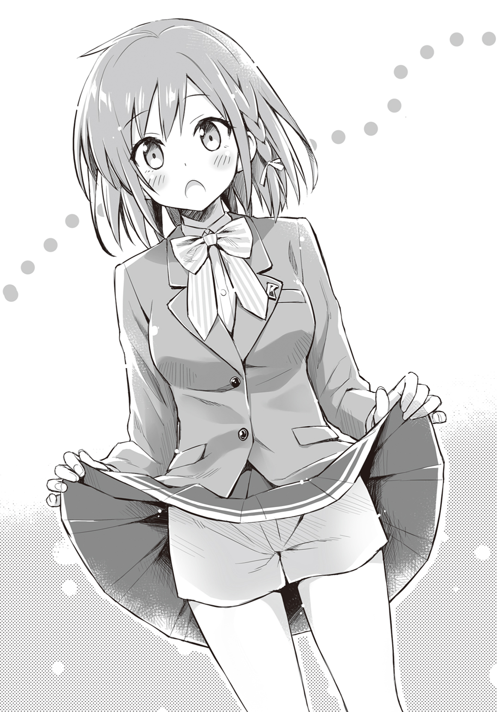
「え、高校生も下にそういうの穿くの？」
「え、高校生は下にこういうの穿いちゃ駄目なの？」
さあ......？ と僕らは同時に首をひねった。なんだかちょっと安心した。白井は見た目以外そんなに変わってなかったんだ。
「白井......そんなんでモテ期とかマジか？」
「知らないよー！ それ言ったの有田じゃんよー！」
白井は足を開いて両腕をだらだら揺らした。白井未來（中学モード）、ニュートラルの動き。
「あ、でも入学して二週間ぐらいんときね、なんかイケメンの先輩に付きあってほしいとか言われてー」
「お、おう」
旧友のぶっちゃけ話は、第一球からド真ん中ストレートだった。僕は正直油断していて、完全に見送ってしまった。
「そ、それはいい話じゃないか......ハハッ！ よかったな、もち、もちろんＯＫしたんだろ？」
僕はなぜ動揺してるんだろう。置いて行かれたくない焦燥感か。
「はあ？ なんで。するわけないじゃん」
「え、断っちゃったの？」
「だって、学年も違うし部活も違うし、言ったらぜんぜん知らないヒトだよ？ 無理でしょ。知らないおじさんに付いてっちゃ駄目って、久保田先生言ってたよ」
「うわ、もったいねえ」
本当は安堵。だけど強がる男の子。白百合ヶ丘幼稚園の年少組でお世話になった久保田先生。僕は高校生になりましたが相変わらずです。
「うん、勿体ないんだけどー、そんなん続いちゃうと流石にねー」
「え、続いたの？ 二人も振ったの？」
「うん......まあ......そのぐらいかな」
つまりそれ以上かよ。
「そしたらさー、おっかない女子の先輩に囲まれたりさー、チョーシ乗んなとかスゴまれちゃったりさー」
うわ、本当にそういう話あるのか。女子こえーな。
「もー、そんなん言われちゃったら、いたいけな新入生『えー』ってなるじゃん！ 『高校こわっ』ってなるじゃん！ もう大丈夫だけどさシャキィーン！」
ショボーンとしかけたけど、いま世界は喜劇です、最後むりやりポジティブに持ってった白井未來のこういうところ、変わってなくて妙に安心した。
「でも髪は伸びたなー？」
「うん伸びたー！ ぼぼぼぼぼっ！」
たぶん鼻毛神拳的なジェスチャー。
「いやあ、部活引退したあとしばらくメンドくて『ながしま』行ってなかったら、アッという間にこんなさ！」
ながしまは僕らの地元商店街にある長嶋理髪店の屋号。地元の子供たち（とくに男子）は幼少のみぎり、だいたいそこのお世話になる。そして年頃になって洒落っ気づいてくると、より大きい街のサロンを利用するようになるものだけど、白井はまだ地元の地域振興に協力しているみたいだ。
「まー、せっかくここまで伸びてきたし、ちょっとしばらく飼ってみよっかなーって思った！ まだ慣れてないけど！」
いよ～ぉっ！ 頭でぐるりと円を描いて歌舞伎っぽい見得を切った。
「だろうな。こっちも慣れる気がしない」
カァ――ッ！ 負けじと僕も大見得切った。
「ほんとー？ ヘンかなー、また切ろっかなー」
そんな、トップの毛束を一つまみ引っぱりながら、やめて、僕の毎度適当な相槌にいきなりマジレスしないで。
「いいけど、短くなったらせっかくのモテ期逃すんじゃねえの」
「おー？ 有田雁弥ロングに一票入りまーす！」
「いや、どっちでもいい」
「有田雁弥、どっちでもいいに一票入りまーす！ なんだと適当な！ なにィやるか！ ちゅどーん！ つってズビシッ」
「痛い」
ボケたりツッコんだりド突いたりド突かれたり、白井は一人でいろいろ兼任していた。べつに一個ぐらい回してくれていいんだぞ。そのペースじゃすぐにライフ尽きるぞ。
「ねっ、有田は？ 近況とか」
不意に訊かれた。楽しそうだった。
「あー、まー」
不意の微笑は、こちらにも同種の表情を強要した。僕は笑った。苦笑というやつだ。
「若干そっちと同じカンジかも」
猫脱ぐタイミングを逃した的な意味では。
「有田もモテ期？」
「それはねえけど」
ねえから小声で。
「え？ え？ なんて？」
「なんでもねーっての」
「さっきの小っちゃカワイイ河和さんは？ そーゆんじゃないの？」
聞こえてたとしか思えないトコ繫げて来たな。
「だから、小っちゃカワイイ河和さんは白井のファンだってば」
「なんか小っちゃカワイイ小っちゃカワイイって、有田はソレばっかだねえ」
「そ、そっちが先に言ったんだよ。べつに俺は、ただそれを拾っただけだろ」
「う、うん......何か普通のツッコミだね。ただの反論みたい」
てかボケだったのかよ、紛らわしい。
「じゃあ鞠弥は？ 元気？」
「は？」
なんで『じゃあ』なのか分かんないけど。
「まー元気。相変わらずテンション低いけど。あと最近ギャルってきた」
「まじで!? ちょおナントカですケド～、つって？ マルキュ～！ 的な？ あひゃひゃひゃ！ 似合いそうだね！」
たぶん嬉しくないだろうなあ、このウザウザしい誉められ方......
「で、相変わらずブラコンなの？」
「いや、どうだろな。ほら、うちのあんちゃん、もう家出てってだいぶ経つし」
「ちゃーちゃーちゃー！ マリィは小さい方のあんちゃんに懐いてたじゃん」
「はあ？ なに言ってんの、そんなのだいぶガキのころの話でしょ？」
それでモテ期の話から『じゃあ』だったのかよ。そんなのモテにカウントするんじゃねえよ。逆に虚しいですよ。
「あいつは残念ながらとっくに兄離れしてるし、いまじゃ俺のことキモいキモい言ってるよ」
「あっひゃっひゃっ！ ほんとにー？ あの子、昔『チィ兄ちゃんのお嫁さんになる～！ ブライダ～ル！』とか言ってたのに！」
「なー？ あのころは可愛かったよなー？」
ブライダ～ルに関しては明らかにいま付けた部分だから省くけども。
「うわ、リアル残念顔。ほんとだ、マリィの感想正しいかも」
「正しくねえよ。ぜんぜんキモくねえよ」
「あれ？ もしかしてブライダ～ル言ってたの、有田雁弥の方だっけ？」
「それはどっちの有田でもねえよ」
「ね、いつブライダるの？ じゃもうアレ買った？ アレあのアレ！ ぱぱぱぱーん♪」
「だからゼクシィも買ってねえよ。てか、そのヒントで分かっちゃった自分が嫌だわ」
「ねー？ さっすが有田！ ツーと言えばドカカカカカッ！ また私の相方やらせてあげるよ」
「壮絶に凍える思いをした小学校時代の学芸発表会をとつぜん掘りかえすなよ！ ぞわわーってなったよ！」
「いやあ、あれは若気が至ったね！ あははは！ いまならうちら、もうちょっと上手くやれるんじゃなーい？」
「そんな、ありえない仮定は――」
――いや、待てよ？ なにか忘れてるぞ？
僕がいまこうして白井未來のもとを訪れたのは何故だ。
「............」
ありえない仮定とやらを、ちょっと考えてみる。
白井と俺が二人でステージに立つ。
ふむ......もしこのまま本当にあの部がライブを演るってなったら、そういうのも可能性としてはアリか――
――いや、アリじゃねえよ。全然ねえよ。全然ナシだよ。なにを考えてるんだ、僕は。
「有田？」
「うーん......」
マチコ先輩たちの裏方手伝いぐらいは、しょうがない、もう腹をくくったけど、その上なんで自らステージに立つことまで検討しなきゃいけないんだ。まさかだろ、そこまでの義理はない。
だけど、もし仮にそうなったとしたら。
そのとき僕は、正規の部員で、また同学年同士である、河和若葉さんと組むのが筋ではないかしら。
いえ、べつに放課後残って二人きりで手取り足取り稽古に励むとか、そんなラブコメ展開は考えてないです。
「おい、どうした有田兄。いまモテ期が裸足で逃げだしそうな顔してるぞ」
「い、いや、全然。真面目ですよ」
真面目に考えるというなら、新田菊華という飛び道具はどうだ。彼女の武器は自身いうところの「既存の人類にはまだ早い」系だけど、不条理系という括りに昇華できればそれは十分に王道だ。たまに聞いてるこっちまで脳のふだん使ってない部分をくすぐられる感覚がある。それはハマればとても心地よい体験だ。できれば有田雁弥のみならず、多くの聴衆にあの感覚を共有――
――いや、無理だ。それ以前の問題だ。彼女がステージに立てるのなら、最初からマチコ先輩たちは僕のもとを訪れていない。
「有田、なに考えこんじゃって。悩み事？」
「まあ、ちょっと」
そうだ。思考の寄り道はどうでもいい。僕は悩めるお姉さま方のために任務を果たそう。
「今日来たのは、白井に頼みがあってさ」
「あ、そーだったね、なに？」
「実は俺、いまちょっと演劇部――いや、喜劇部か――のライブのために動いてるんだけど」
「へえ、有田そんな部入ったんだ」
「や、入ってはいないんだけど、成り行きっていうかね」
「ふーん。劇とかそーゆうの好きだったっけ？」
「いや、べつに。兄貴の付き合いで、たまに観に行ったりとかはあったけど、それはぜんぜん関係なく」
「じゃあなんで入ったの？」
「だから入ってないってば。すげーお姉さま方に囲まれて気付いたら強引になんか、うん」
「へー」
「いや、ホントしつこくてさ。まあでも高校入って暇してたし、お姉さま方もそんな言うほど悪い連中じゃなかったし、乗りかかった舟っていうか？」
「へー」
「生返事だなあ。こっちは大変なんだぞう。毎日お姉さま方に囲まれて化粧臭いったらねえよ」
「へー。楽しそー」
「まあ......慣れてくるとちょっとはな......」
くすんでいた高校生活にあって、部活動っていう青春の一部を垣間見させてもらってる点は、ちょっとだけ。ほんのちょっとだけ、楽しい。かもしれない。
たぶん都会の若者が一日農業体験で味わう「わーコレ意外とたのしー」みたいな感じなんだろうけど。
「ま、それはいいんだけど。そんなわけで悪い、白井ちょっと協力――」
「やだ」
「そうか、ありがとう。いやあ、さすが白井だ。二つ返事で――」
二つ返事で――
「お断りかよ！」
そんな、話もろくに聞かないうちから。
「うん、よく分かんないけどごめんね。うん、うちの部、掛け持ちとかヘルプみたいの禁止されてるから」
「あ、そう......なんだ......」
それを言われたらどうしようもないけども。
ん？ あれ？ 白井、いま帰宅部って情報なかったっけ？ なんだ、ガセか。
「じゃあ私、帰るね。ばいばい」
「お、おう......おつかれ。気ぃ付けてな......」
もはやその背を見送る以外なんもねえ。あっけない結末だったな。
「あっ！」
「え......なに......？」
「懐かしい。有田、最後いっつもソレだったよね」
「どれ？」
「気ぃ付けてなーって」
「へ？ ああ、まあ、そうだったかな」
中一の冬ぐらいに、男子の間でなんとなく「バイバイ」とか「サヨナラ」って単語を口にするのは女子くせえ、カッコワリイ、小学生じゃねえんだから、みたいな風潮がやってきたんだよな。
その打開策として、誰からともなく、大人たちを真似したような「気を付けて帰れよ」が流行りだしたんだ。
バイバイが嫌なら普通に「じゃあな」とか「またな」で十分なんだけど、あのころは必要以上に大人ぶるのがブームだった気がする。一方ではみんな大人への文句ばかり言ってたのに、なんだったんだろう、あの時期にわだかまる数々の矛盾は。
「あ、白井ちょっと待った」
「なんだー？」
「ジモッティ同士、どうせなら一緒に帰ろうよ。ちょっと待ってて、俺お姉さま方ンとこ戻ってカバン取ってくるわ」
「や、いいです」
「は？」
なんだ、いいって。
「急いでるから先帰る。じゃね」
「あ、そう......うん、じゃあ......気ぃ付けて......」
帰りの電車ン中でさりげなくもう一度交渉しようかと思ったんだけど。この作戦も失敗。
白井だめかあ。
あーあ......先輩たちはともかく、河和さんしょんぼりするだろうなあ。
⑥ 芽生えよう旧人類
「ええそうよ、坊や」
その日、新田菊華はハリウッド女優（吹替版）だった。的なフォーマットだった。
「私は比較的リベラルな家庭で育ったの。それはとてもセンチメンタルでありながら、ときにエキサイティングな人生だったわ」
聞けば僕と同じ川高に籍を置く高校二年生だというのに連日まるで通学している形跡の見られない彼女に対して、親なんも言わないんすかと尋ねたところへの回答だ。
「ママは仕事をとても愛していたし、そのための努力も愛していた。育児という刺激のない日常よりも遥かにね。仕方ないわ。彼女は自分の産んだ子供が、旧来のヒトと異なる種だなんて気付いてないんだもの」
そう言って自称新人類（笑）は、欧米式に両手を広げ肩をすくめた。
質問と回答がいまひとつ嚙みあってない気もするが、代わりにひとつ分かったこともある。
さすがの新田菊華も家庭内では一連の厨二設定を封印しているというわけだ。他人事ながらちょっと安心した。
「先輩ン家、他に家族は？」
「弟がひとりとセントバーナードが一匹。パパ？ 何かしら、それ。ママには教わらなかった言葉だわ」
「ふうん」
それも仮想設定なのだろうか。いまどき片親なんて珍しくもないけれど。
「ていうか先輩、突然変異ってアレなんすね」
設定という単語をあえて曖昧な指示代名詞に置換してあげたのは、この大真面目に不真面目を貫いている不思議さんにとりあえず付きあってやろうと決めた僕なりの覚悟と優しさだ。
「どっかよその星から来たとか、未来の地球からやって来たとかってパターンじゃないんすね」
その新人類（笑）とやらの起こりは。
「当たり前じゃない。私たちは外来種ではなく、正統な進化の過程だもの。呆れたわ、あなたってビーフステーキの美味しい店以外は何も知らないのね。ダーウィンの『進化論』は？」
知らねえよ。アカデミックな学術書もビーフステーキの美味しい店も知らねえよ。
一介の高校生に分かりきったことを聞かないでほしい。そもそも、そんなもの自分だって読んでないだろう。せいぜいネットでググった程度だろう。そんな薄っぺらい豆知識でドヤ顔されては堪ったものじゃない。
「いいんすよ、バックボーンなんかどうだって。具体的にフツーの人間とどう違うのかを言ってみろってんですよ」
「一言で言えば、私たちはヒトという種のマイナーチェンジ版よ」
「ほう」
僕はソファーにずるると身を沈める一方で、続けたまえと利き腕で促した。
「いつしか猿がヒトへと進化したように、ヒトもいずれさらなる《上位種》へと進化してゆくのは自然の理よね。それが何億年先か何兆年先かは分かっていないけれど」
億だの兆だのと、いよいよ中二どころか小二の好きそうな単位が出てきましたよ。
なるほど、そんな遥か先の話なら言ったもん勝ちだ。近未来ＳＦとは違う。現実と地続きの空想科学さえ必要ない、おとぎ話の領域だ。
「四つ足から二足歩行になって、毛むくじゃらがツルツルお肌になった次は、いったいボクらどんな風に進化しちゃうんすかねえ」
「一説によれば、現時点の常識や想像力では図ることすら適わぬ超次元的な存在になっているらしいわ」
まず、それはどこで論じられてる一説なのかってところからツッコんでいきたいけど、例によってぜんぶ拾っていったら切りがない。
「超次元的な存在ってのは、なんすかそれ、霊体とか魂だけとかスピリチュアルな感じっすか？」
「そうかもしれないわね。この星どころか既知の宇宙さえ残っているか定かではない超々遠未来において、我々の《上位種》は時空間をも往来しうる概念的な存在であると考えられているわ」
「ソレ、もはや神じゃん」
そうかあ。人類は将来、神になるのかあ。夢のある話だなあ。
でも、まあ、そうか。そんなでもないと、終末戦争......つったっけ？ 世界がなくなる（笑）っていうあのトンデモ設定と矛盾するもんな。
「つまり新田先輩は女神なんですね」
「真夜中のＬＡでは数々の男たちからそう呼ばれていたけれど、残念ながらいまの質問に対する答えはノーよ。お猿さんがある日とつぜん人間を産んだとでも？」
今日のフォーマットはまた随分とめんどくさい喋り方をするなあ。
「人類はこれから幾世代もかけて途方もなくゆっくりと《上位種》へ進化してゆくわ。私たちはあくまでその途中経過。来たる進化の礎よ。同志たちは冗談半分に、人類《バージョン2.00 以降》なんて定義してるわ」
「お友達の皆さん、素敵なユーモアセンスですねー」
なかなか底辺の臭いがしますよ、その集い。なんとなくオンラインっぽいけど。そもそも実在するのかが疑わしいけど。
「ちなみに私は Ver2.7 よ」
「はあ」
極めてフラットな僕の顔。そんな基準数値もなしに、いきなり製品情報を開示されたって。
「それがどのくらい進んでるのか、もしくは遅れてるのか、比較対象でもないとさっぱり分からないっすね」
「比較対象......」
彼女は眼球を左右へ運動させたのち、正面の個体を見据えて告げた。
「カリー、あなたは Ver2.01 よ」
「ひとをスパイシーな仇名で呼ぶな」
たぶん食いついてほしいのはそこじゃなかったんだろうけどあえて無視。僕はのどかな原始人でいたい。
「てか、アナタ方はなにを以って『新しい』んですか。やっぱ超能力みたいの使えるわけですか」
今風に言うなら、異能の力ってやつか。たとえば漢字数文字にクールなズレ具合の外来語ルビが振られるような。たとえば《厨二設定》みたいな。
「どうかしら」
しかし新田菊華は否定も肯定もせず、またも欧米スタイルで肩をすくめた。
「自分でそんな風に呼んだことはないけれど、そうね、仮に《在来種》には備わってない特性全般をそう定義するのだとしたら、ええと、なんて言ったかしら？ その――」
「超能力」
「――ああそう、それ。一応そういうことにはなるのかもしれないわね」
天才的なまわりくどさですね先輩。
「まじでー。すげー。見せて見せてー」
「男っていくつになっても子供ね。こんなにキュートな女の子の目から破壊光線が出るとでも？」
「出してもらえれば一発でぜんぶ信じられるんですよね」
「呆れた。なにか勘違いしてるようね」
「よし出せ。さあ来い。さあビビビーッと来い」
「やめて。もう結構。お願いだから少し黙ってちょうだい。カリー、あなたはいい子だけど本や映画以外の趣味も持つべきだわ」
その台詞、アナタにだけは言われたくありません。
「オーケイ。いいわカリー、私といなさい。そうすればそのうち機会は訪れるわ。そのときあなたは価値観が丸ごと引っくりかえるエポックな体験をするはずよ」
「まじ？」
「もちろん。それはシアターで観るキュートなヒロインの破壊光線よりも素晴らしくエキサイティングな光景よ」
「ま、まじか」
やけに自信満々だ。熱く語るその表情には、あながち言い逃れとも思えない説得力のようなものがある。
「いつか訪れるって......い、いつですか......？」
「それはあなたの運命が決めること。何億年先か何兆年先かまでは分からないわ」
「ふざけんな」
訂正。言い逃れる気満々だった。
「じゃあ実演しなくてもいいです。具体的にどんな能力なのか、いま説明だけしてください」
「そ、それは......」
「それは？」
「すまぬ......いまはまだ語ることができんのじゃ......」
困ったときのミステリアス老婆きたー！
「ねえ？ いいこと、カリー？」
そして一瞬で帰ったー！
「言うまでもなく、旧来のヒトに課せられた使命はこの惑星で殖えつづけることよね」
「ああ、はい」
夢も愛も人生も省いた極論だけど、生まれて育って産んで育ててを地球46億年規模で論じるなら、まあそういう話にもなるわなあ。
「もちろんヒトに限らず、それはあらゆる生命体に通ずる普遍の目的だったけれど」
「過去形？」
「ええ。《終末戦争》が予見されてすべては一変したの」
出た、終末戦争。
数あるアイタタな設定の中でもその単語には何故だかちょっと胸がザワつく。僕はふたたび座りなおした。
「世界の終焉を未然に防ぐべく戦っている《組閣》もあるけれど、それは所詮１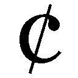コイン一枚でベガスに乗りこむようなもの。悲しいけれど現実的とは言いがたいわ」
そのうさんくさいメリケン喩えが出てるうちはあまり悲しみ伝わってきませんけどね。
「そもそも何と戦ってるんですか、その終末なんたらってのは」
「さあ」
やつはまたしても小憎らしい眉下がりヅラで肩をすくめた。
「ともあれ大勢は《終焉》を不可避の事象として甘んじる方向で適応しようとしている」
「はあ。あきらめムードの消化試合ってことですか」
がんばることが格好悪いみたいなイマドキの風潮が、よもや新人類の方々にまで及んでいたとはびっくりです。
「違うわ」
違うらしいけど。
「リソースを抵抗より復興に注ごうってことよ」
「復興......」
世界の終焉は災害か何かか？
「え、でも終わりなんでしょ？ すべての生命が途絶えるんでしょ？ 形あるものはみんな無くなるんでしょ？ 矛盾してません？ 誰もいなくなったあとで復興もクソもないじゃないですか」
「カリー、あなたは正論を愛しているようだけど、正論もあなたを愛しているとは限らないわ。そうね、私たちの今いるこの宇宙が、最初は何もないところから生まれたって話は？」
「ビッグバンですよね。むかしＮＨＫ特集か何かで観ましたけど」
「いい子ね、あとでヌガーをあげるわ。つまりこういうことよ。世界が終わったあとでまた《天地開闢》が起きるよう、あらかじめセットしておくの」
「ビデオ録画みたいに言いましたね」
「もちろん例え話よ。ことはまったくイージーじゃないし、世界中の同志がドラスティックに変革しないかぎりは絶望的だわ」
「まるで難易度の問題みたいに言いましたね」
「ええ、言ったわよ。目から光線は無理だけど、ってね」
「あっ」
それはさっきの超能力の話。いや、そんな言い方はしないんだっけ。特性？
「ああ......つまり？ 新しいヒトたちの特性っていうのは、そういう......？」
その通り、と彼女は指を弾いた。
「かつて同志ダーウィンが啓蒙した通り、進化とは環境に適応することなのよ」
「へえー」
厨二設定あるある――歴史上の偉人を自らの系譜に連ねる。あると思います。
「《終焉》迫るという環境に適応せよ。それが私たちに刻まれた無銘の命題であり、同時に《在来種》とのもっとも重要な相違点よ」
なんか言い草がカルト教団っぽいなあ、とは言わないでおこう。妙な集会に連れていかれたり高価な壺を勧められたりするまでは。
「というわけで話は戻るけれど、旧来のヒトに課せられた使命が殖えつづけることだったなら《Ver2.00 以降》たる私たちの使命は、その円熟期を迎えた繁栄を可能なかぎり記録して《翌世》へ持ちこすことなの」
「ん？ んん？」
解説がだいぶ荒馬になってきた。ところどころで振りおとされそうになった。
「ええと、ヨクセってのは？」
「読んで字の如し、翌る世よ。次の天地開闢で始まる、二度目の世界のことね」
「あー」
熟語の合成やカタカナ言葉ぐらいまではまだしも、自分オリジナルの漢語を乱造しはじめると厨二病もいよいよ末期だと言います。
逆に「二度目の世界」とか、まんまの方がシンプルで鼻につかず、個人的にはこれで十分だと思いますよ。35点。もうすこしがんばりましょう。
「で？ 二度目の世界へ？ 持ちこす？」
察するに、おそらくノアの方舟みたいなことを言いたいんだろう。あああ、ますますカルトじみてきた。
「そう、持ちこす。私たちの主な役割は、世界の《終焉》までに可能なかぎりの事物事象を《情報化》することなの」
「可能なかぎりの事物事象、っていうのは......？」
「そのままよ。有形無形を問わず、ありとあらゆる物質、生物、文化、言語、芸術、風習、自然現象、歴史の裏の真実、誰かの見た青い空、キリンが逆立ちしたピアス、有田雁弥の間抜け面。とにかく手当たり次第なんでもね」
なんでもにも程があるだろ。最後のとか明らかに不要じゃねえか。それは虚無の闇に置いていっていいんですよ。
「そうしてデータ化した膨大な事物事象を《二度目の世界》において展開することで、可能なかぎり《一度目の世界》を再現しようという試み。これが私たちの提唱する《終焉》後の《復興》よ」
「なるほどねえ」
要はＲＰＧで言うところのセーブ＆ロードかな。ゲームオーバー確定っぽいボス前とかで、次プレイはなるべくベストな状況で再開できるように下準備してからセーブしよう、みたいな。
それをリアルでやろうってわけですね。わかるわかる。
いや、わかんねえよ。
「どんだけスーパーなコンピューターを使えばそんなこと出来るってんですか」
そしていったい何次元プリンターが必要だと思ってるんですか。
「カリー、ひとつ忠告しておくわ。あなたは行きずりの女を口説くとき以外、黙っていた方がいいかもしれない」
「なんだと......あ、いや、誉められてるのか？ え、どっち？」
そのインチキ吹き替え洋画口調はいまひとつ文意がスルッと入ってこない。
「やれやれね。さっき教えてあげたばかりじゃない、不可能が可能になることこそ進化――環境への適応なのよ？ 在来種の尺度で私たちを図るなんてナンセンスだわ。馬鹿なことばかり喋る口なら黙ってフライドチキンでも詰めこんでいてちょうだい」
「あ、やっぱり罵倒かあ」
いやあ、白黒ついてすっきりした。
つって、たかだか１コ上の女子に罵倒されてどこか安堵している自分に複雑な思いは去来するけども......
「ファンタスティック！」
「へ？」
とつぜん先輩が歓声をあげた。
「その感情！ ナイス・エントロピーよ！」
そして飛びつかれた。つまりハグ。
「ちょっ......え？ え？ えええっ」
な、なんだ、これは。なんのご褒美だ。なんでこんなに柔らかくていい匂いがするんだ。よく分からないけど、抱きかえしていいのか。腕を回してもいいのか。いいんじゃないかな。うん、せっかくだからギュギュッと密着しておこうね。いや、下心とかじゃなくね。相手に合わせて欧米風のね。ラブ＆ピースの象徴としてね。べつに胸がいまいち当たってないからとかそういうアレじゃなくてね？（この間わずか１秒）
「ありがとうカリー。いまの名状しがたい複合感情は、曖昧で混沌としていてとても新しかった。さっそく情報化させてもらったわ」
「はあ......」
実直な日本男児が錯乱しているうちに、奔放なアメリカンハグは１秒で終わった。
「ちょっと待ってください！ どういうことですか！ 詳しく教えてください！」
「あら、どうしたの？ いつになく積極的じゃない」
「いえ、そんなことはないです」
べつにどうすればまたハグされるのか知りたいとかそういうアレじゃないです。
「フフ、なにかしら。その目、まるでケモノのようだわ」
「いえ、そんなことはないです」
べつに柔らかくていい匂いワンサゲインとかぜんぜんそういうアレじゃないです。
「やっぱりあなたは腐っても《Ver2.00 以降》ね。カリーったら文句ばっかり言ってるんだもの、このまま《終焉》に適応するための自我が芽生えないんじゃないかと不安でいっぱいだったわ」
「いえ、そんなことはないです」
べつに今度こそ胸がしっかり当たるようにとか――
「ありがとう」
――え、なに？ ちょっと余韻に浸っていて数秒ほど聞いてなかったけど、なんで僕はお礼を言われてるんだろう。まあいいや。
「頼もしいわ、マイフレンド。こんどママ直伝のホームメイド・アップルパイをご馳走してあげる。ＬＡではチア部のみんなにすっごく評判だったのよ」
このひと現状すっかり帰国子女って態になってるけど、いったいどこまでがリアルの経歴なんだろう。
やたらママ、ママ言うのもそういうフォーマット（笑）なのか。あるいは生来マザコン寄りだった気質が、フォーマット（笑）のせいで色濃く表に出てしまってるのか......あ、マザコンって男児にしか適用されない言葉だっけ？
「そーいやー、新田先輩のおかーさんって何してるひとっすか」
育児より仕事みたいなこと言ってたから、少なくとも専業主婦ではないんだろう。
「ホワッツ？」
きょとん、とされた。
「あら、そう、気付いてなかったのね」
「なにが？」
「そこそこ似てる方だと思うんだけど、この顔を見ても？」
この顔、と言いながら新田菊華は親指で自らの顎あたりを指した。
ネイティブな日本人なら咄嗟に自分を指すとき、人差し指で鼻あたりを示すのが一般的だと思う。芸の細かいなりきりだなあとちょっと感心した。
しかし、その顔面から母親の素性を連想しろとはどういう意味だろう。
「え、ひょっとして先輩のおかーさん、有名人サンですか？」
「分からないなら結構よ。私もその方がやりやすいわ、聞かなかったことにしてちょうだい」
「はあ、そーすか......」
テレビに出るほど有名なデザイナーとか評論家とかなのかな。うちは兄貴の件があって、近年ニュースやスポーツ以外の番組を積極的に観なくなってたから、妹ともども気付かなくて申し訳ない。あとで「新田 有名人」とかでググっておこう。
「ママも私も本名は公表してないから、新田の名前で検索してもおそらく意味はないわよ」
読まれてた。
ていうか、いまこのひと「ママも私も」って言いましたね。まるで自分にも公的なビジネスネームがあるかのようですね。吹き替え洋画風な口調のせいですっかりスター気取りとはホントなりきりますね。
「さてカリー、あなたの質問に答えましょうか。たしか有田雁弥の間抜け面をアーカイブした件についてだったわね」
そんな件名だったか？
「あらゆるものを記録することが、私たち芽生えた者の使命と言ったでしょう？」
私たち、と言うときエラく意味深な視線を送られた気がするのは何故だろう。
「とりわけ私の属する組閣が担っている分野は、知的生命体にのみ見られる高次な社会的情動とその周辺――」
僕のなんだそりゃ顔に気付いて、彼女は言を止めた。
そして、こめかみに指を添えて言いなおす。
「――俗に『感情』と呼ばれている精神運動よ」
「はあ。俗にも何も、ボクらフツーに感情は感情と言いますけども」
「そのようね。ソーリィ、Ver2.00 以降はどうもその辺りに疎くていけないわ。これじゃマンハッタンからテキサスの農村へ嫁いだキャサリンのことを笑っていられないわね」
肩をすくめてハハンと自嘲するけど、だから分かんねえよ、今日の例えはことごとく伝わってこねえんですよこのメリケンかぶれが！
「先輩、次はもうちょっと普通のフォーマットにしましょうよ」
「簡単に言ってくれるわ。ふう......女って生き物は結局のところ、普通に生きることがいちばん難しいっていうのに......」
「いや、そんな人生哲学みたいな話ではなく。アナタの周りにいるようなフツーの女の子をフツーに真似すればいいだけなんですよ」
「私の周りにいる......オーケイ、じゃあ次からは鞠弥をベースにしたフォーマットを組むわ」
「やめろ！ お願いだからギャルはやめろ！」
その結末はだれも幸せになれない！
「なあに？ カリーったら、今日はご機嫌ナナメなのね。羨ましいわ。そんなふうに、心の水面へ激情という小波を落として遊べるあなたが」
「そんなお耽美リリックな遊びはしてませんけども」
ああそういえば、いまはフォーマット（笑）という換装式擬似人格で取り繕っているものの、新田菊華さんはキホン無感情キャラっていう設定でしたねえ。
無感情には無感情たる動機付けが必要です。たしか綾波はクローンだよね。長門は有機端末で、金色の闇は暗殺者。で、新田菊華は？ 進化の途中？ つったっけ？
「進化とは環境への適応であり、また機能の取捨選択でもあるわけ。たとえば、かつて海から上がった生命が肺呼吸を獲得してエラを失ったように」
「ふむふむ」
ありがとうございます。普通に分かりやすい例え、久しぶりな気がします。
「ことVer2.00 以降の場合はといえば、種の存続を第一義とするため、代わりに個の特質は失う傾向にあるみたいなの。あたかもアンダーグラウンドのシーンでエクストリームなアンセムをスピンしていたＤＪがビルボードアクトになるとコマーシャルかつ大衆的なアティテュードへシフトしてゆくかのようにね」
「ふむふむ」
じゃねえよ。ぜんぜん伝わってこねえよ。ルー何芝だよあんた。言ったそばから分かりにくい例えに戻らないでくださいよ。あと「大衆的」のトコだけ英単語が出てこなかったのバレバレですからね。
「まあ、究極的な到達点である《上位種》には個としての自我がないみたいだし、そう考えれば途中経過であるVer2.00 以降の感情が次第に強度を失ってゆくのは自然の理よね」
新田先輩が口癖みたいにいう自然の理よねには、いまのところ一度も同意できた試しがない。まったく自然に理らない（造語）。
「んーと......要するに先輩たちは、人間の感情について勉強してるって設定すかね」
「設定？」
あ、いけね。油断してたらうっかりＮＧワードぽろり。
「設定！ 設定ですって!? なんてこと、信じられないわ。あなたもう芽生えたのでしょう、この期に及んでまだそんな戯れ言で現実逃避を続けるつもり？ まったく遅れ果てたイエローモンキーね！」
わあ、イエローモンキーにイエローモンキーって言われたよ。
「えー、それでは旧人類を代表して御教授いたします、新しき君。いまあなたの胸に湧いている、こなくそチクショーという気持ち、それは《怒り》と呼ばれる感情です」
「失礼ね！ ゾウリムシじゃないんだからそのぐらいの原始衝動は私だって持ちあわせてるわよ！」
「あ、そーなんだ」
そういやさっき言ってたな。調査対象は......なんだっけ？ ヒトという生物においてのみ見られる高次な社会的情動？
小難しいことはちょっと分からないけど、怒りなんていうのは彼女の分類する「人間ならではの高次な情動」に当てはまらないのかもしれない。たしかに、うちの愛猫ペストとコレラだって、横から餌を取りあげられれば一丁前にシャアアアと牙を剝く。
いえ、ただ僕に懐いてないだけとか、そういうことではないです。
「生存本能に由来するような原始衝動の発現はなにもヒトに限らないし、そういった情動は普遍的かつ合理的なものだから、古今東西の哲学者や科学者によってとっくにアーカイブが済んでいるのよ」
すげえな。いまたった一行で古今東西の哲学者や科学者をまるっと自分の厨二設定に取りこんでしまいましたよ。
「だけどね、より高度な情動にはいまだ未墾の領域が多いの。私たちの組閣は、おもにそれらの記録観察を進めているわ。もちろん学術的な意味での研究は、それを専らとする各国の学者層に任せているけれど」
世界中の人文科学者の皆さん、大変です。いまあなたたちは、公表していないだけの隠れ新人類に認定されました。
「なるほどねえ」
しかしこうやって話だけ聞いてる分には、なんだか熱心な大学生のゼミ活動みたいにも思える。
思えるっていうか、思いだしたっていうか。
兄貴とみど姉、よくそんなような小難しい会話してたよなあ。いや、小難しかったのかどうかすら、当時まだ小学生だった僕には完全イミフだったけども。
「じゃあ先輩、その高次な情動......でしたっけ？ それって、たとえばどんなッスか」
「旧来の流儀で表すなら、そうね、人間ならではの尊い精神活動のことよ」
「っていうと......」
なんだろう。分からんけど。
「愛とか恋とか？」
「ぷっ」
笑われた。しかもフォーマット無視の素っぽかった。
「ぐぬぬ......」
僕は赤面した。
「あなたって見た目のわりにピュアなのね。いいこと、坊や？ 恋愛感情なんて本能の最たるもの、肉欲の詩的表現に過ぎないのよ。逢いたくて逢いたくてけど逢えなくて震えてしまう夜があるのだって、所詮は繁殖活動の代替行為に過ぎないんだから」
噓だ。認めない。僕はあんたみたいな捻くれ喪女の負け惜しみに惑わされない。僕は愛を信じる。僕は新田菊華より西野カナを信じる。
「ま、まあな！ もちろんオレだって個人的にはそう思っているぜハハッ！」
それはそれとして気付いたら僕は恋愛巧者のふりをしていた。
「グレイト！」
図らずもそれは大好評だった。
「そう、まさにそれよ。羞恥！ 虚栄！ 承認欲求！ 生命の存続にも種の繁栄にもなんら要を成さない、由来不明・意味不明のきわめて無駄な高次情動！ ああ素敵、とてもインタレスティングな精神文化だわ」
「え、あっ、そう......ですか、はあ、どうも」
これ誉められてるのかなあ。違うよなあ。直訳すると「童貞くせえｗｗｗｗ」だよなあ。たぶん怒っていいとこだよなあ。
「おお、主よ。彼の人間じみた醜い浅ましさに羨望の念を禁じえない私を、どうかお赦しください」
「いいえ赦さなくていいですよー。天罰バリバリ与えちゃってくださーい」
つうか、信仰心こそが人間にしかない高次情動でしょうが。
「はっ、神に対する不敬！ こ、これは怖れを知らぬ希少な感情だわ、情報化しておきましょう」
「あ、まじ？ いいっすよ、どうぞどうぞ。ほらほら早く」
「......カリー？ あなた何をしているの、馬鹿みたいに両手を広げて」
「いや、だって抱きついてくるんでしょ？ いっすよ、さあ来い。はいギュッと、はいムニュッと！」
「えやだよなに言ってんの馬鹿じゃないの」
残念ながらどうやら情報化とハグに直接的な因果関係はなかったらしい。
しかしそんなことよりも。
「あの、俺を拒絶するときに限ってちょいちょい素に戻るの、やめてもらっていいですか」
意図的か知りませんけど、そのトーン意外と傷付きますからね？
※ ※ ※
新田菊華の語った「終末戦争とその周辺」論について、僕の所見を一言で述べるならこうだ。
「仕上がってるなあ」
いちおう誉め言葉ではある。ぜんぶ一人で考えたのなら、それなりの思考作業だったんじゃないだろうか。
まあ、各地に共犯者がいるみたいな口ぶりだったけど――
「うーん」
――夜、自室。著名ボカロＰの新作動画を視聴していた僕は、別ウィンドウで検索エンジンを起ちあげ、彼女の口にのぼったオリジナル用語をいくつか入力してみた。
この情報化社会、北陸の山奥を歩きまわってやっとの思いで手に入れた幻の名酒が、ちょっとググってみたら実はネットオークションでじゃんじゃか流通していたという叔父さんのズッコケ話みたいな例もある。どっかのまとめサイトに「新人類だけどなにか質問ある？」みたいなスレが挙がっていても不思議はない。
しかし、幸か不幸か、予想は完全に外れた。ウェブの海にそれらしき情報はまったく見受けられなかった。
この調査によって導きだされた可能性は三つ。
「終末戦争とその周辺」はすべて新田菊華ひとりによる創作であるか。あるいは彼女いうところの《同志》は自分たちの厨二ごっこをオフラインのみでひっそり慎ましく楽しんでいるか。もしくは――
――すべて真実。
「いやいやいや」
まさか。ないない。それはない。しょーもない。あるわけない。
僕は夜の部屋でひとり肩を揺らして笑った。笑っておこう。世界は喜劇だ。
⑦ 入部届とすっぴんの声
「みど姉、元気？」
ある日、鞠弥に訊かれた。
「あー、まー、たぶん」僕は適当に答えた。
「てきとー......」
即バレ批難されたけど。
白城緑子さん――通称みど姉――は、兄の高校時代の友人（と聞いている。それ以上の関係に見えなくもなかったけれど）だ。当時小学生だった僕らも、何度かマリカーやスマブラで遊んでもらったことがある。
遊んでもらった......んだよな、アレは。むしろこっちが遊んであげたような節もあったけれど。
「ウケるけどさァー、変わったひとだったよねェー」
「そりゃまあ、うちの兄貴と気が合うくらいだから、ねえ......？」
ナントカと天才は紙一重、をまんま体現するような、実にエキセントリック極まるお姉さんだった。
彼女は教員免許を取ったあと、母校である川高に国語教諭として就任した。たしかいまは教師生活......二年目？ 三年目？ ぐらいだったと思う。
「同じ学校つっても、みど姉の受け持ちは国際科だもん。普通科とはそうそう会わないよ。それに、ほら、なんていうか......」
「あ、そっか。みど姉、腐っても嫁入り前だもんね」
「そう、それ」
腐ってもは青酸カリでも盛られかねない失言だけど、ともあれ一人の男子生徒と個人的な交友を疑われたりすれば、みど姉もとい白城先生に迷惑が及ぶだろう。という僕の配慮に、鞠弥も気が付いたみたいだ。
「にしたって、イトコのおねーさんみたいなポジの女まで敬遠しちゃうとか、チィ兄ほんとアレだよね、アレ」
訂正。まったく気付いてなかったみたいだ。
「違うよ、そういうことじゃないって」
だけど僕は怒らない。むしろ微笑ましい気持ち。ふふふ。
「きめ......余裕ぶった言い訳とか尚更アレ。ほんとアレ」
あらまあ、うちの妹ったら「ほんとアレ」ばっか連呼しちゃって。
下の兄は嬉しいよ。ほんとアレとか言って、ふふふ、君はファッション的にギャル志向であっても根が清純だから、童貞という単語を口にすることに抵抗があるようだね。
「鞠弥、可愛いとこあるじゃん」
フッと鼻を鳴らして笑ったら。
「まじうぜえ」
そのあと三日ほど口を利いてもらえなかったのは、また別のお話。
四日目にちょっと照れながら「ねー。要るー？」つって苺の載ったショートケーキを買ってきてくれた件なら、いますぐ話してもいいですよ。
※ ※ ※
とりあえず続けますけども。
その日の校内放送で、僕は放課後、第一化学室への出頭を命じられた。
化学の授業なんて選択していない文系の僕は、いったい何事かしらとびくびくしながら向かったのです。
新田菊華宛てに、今日のミーティング（笑）はちょっと遅れるかもというメールを送ってから。
「し、失礼します......」
縮こまりながら扉を開けると、室内は遮光カーテンに覆われていてどんより暗かった。
代わりにチベット辺りのお経を蕩けさせたような瞑想向きのトランスミュージックが結構な音量で部屋を満たしている。
そして甘ったるいお香の匂いと、わざとらしいぐらいのアルコールの匂いが鼻腔を衝いた。
いや、アルコールっていうか、むしろこれは......お酒？
「な」
なんだろう、この不良の溜まる地下パーティーみたいな空間は。ここは本当に教育機関の一室なのか。入りたくない。ていうか帰りたい。ひょっとして僕はヤバい系の上級生に呼びだされたのかもしれない。
「あたっ」
闇の奥からゴツッと低い衝突音、加えて短いうめき声。
「だ、だだっ、誰かいるんですか......？」
そりゃ声がしたんだからいるだろうに、思わず問いかけてしまったホラー映画のヒロインみたいな僕です。
廊下から射す光を頼りに、声の源へ目を凝らすと。
「あったったたぁ......」
ずず、ずる、ずるずるずる......と机の下から這いずり寄って来る長～い黒髪。
僕はいま、川高七不思議（あるのか知らんけども）に新たな候補を登録したい。名付けて化学室の貞子。
「あたま打った......でんき点けて......」
「は、はい」
貞子に言われて僕は照明のスイッチを押した。放課後の化学室に白光が灯る。
「ありがと......おー、来たか、有田弟～......」
「みど姉？」
眩しさに目を細めながらのっそり立ちあがった貞子は、白衣の女教師だった。机にぶつけたらしき頭頂部を、両手でわっしゃわっしゃ搔きまぜている。
毎週の朝礼で遠くから拝見する機会を除けば、さだ姉......もとい、みど姉との再会はほぼ入学式以来だった。
「え、っと、ご無沙汰してます」
「ちゃーす......あれ？ あれぇー、なんだっけ......いまなんか閃いてたんだけどなあ......」
みど姉は目の前の誰かと話をしていても、たいてい頭の中では並行して別の思考作業も進めているようなマルチタスク人間だった。
「なんだっけ......雁弥君、知らない？」
「知るわけありません」
「だよね。知ってる」
「はい」
「あははー」
なんだこの会話。にぱっと無邪気に笑ったと思えば次の瞬間――
「んにゃあああああ！」
――全身バタつかせてヒステリックに絶叫。この不思議な空気感、制服着てたころから変わってないなあ。
「ええと？ あのう、俺をここへ呼んだのって」
「ああ、わたし......なんとなく元気かなーって思って......」
みど姉は髪ぐっしゃぐっしゃに跳ね散らかしたまま、独り言みたいにつぶやいた。
「んーっと......まあ座って......熱燗でいーい？」
ひょっとして、そのアルコールランプで熱している三角フラスコの液体はそういうことですか。
「てか先生。俺、未成年ですけど」
「知ってるよ......あ、そうか......じゃコーヒーね」
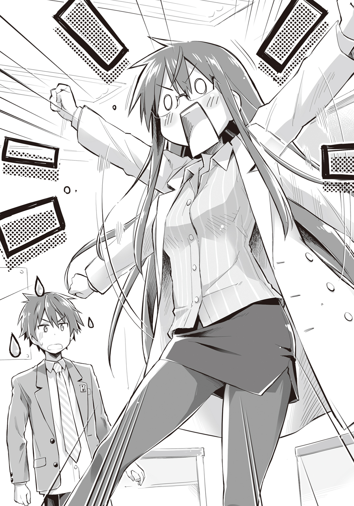
みど姉は眠たげに目蓋をこすりながら、カーテンを開けたりＢＧＭを止めたりと動きまわった。寝起きみたいな低速で。
「個人的にはカフェインよりエタノールのが大脳皮質冴えると思うんだけどなあ」
こぽこぽ泡立つフラスコの火加減を調節する白衣姿は、まるで絵に描いたような科学者だ。いや、国語教師のはずだけど。
「白城先生、いつの間に理転したんですか？」
「してないよ......昔も今もアイラブ文芸、数式ファッキン......」
みど姉はあくびを嚙み殺しながら、おざなりに中指を立てた。
「じゃあそのカッコはなんですか」
「んー......？」
ゆっくり首から下を眺めて、一瞬の間、ふたたび頭を上げて一言。
「コスプレ？」
いや、聞かれても。
「わかんないけど......準備室に落ちてたからなんとなく着たー......」
そういえば彼女はむかし我が家へ来たときも、爪切りとか目薬とか有田父秘蔵のいかがわしいＤＶＤとか、とりあえず目についた物なんでもじぃーっと凝視する好奇心（？）旺盛なひとだった。
「やー、ほら......私、化学室こんな風にしちゃってるでしょー？」
さすがにこの空間デザインの異常さは認識しておられる御様子。
「でもさー......ほら、こーゆー博士っぽいカッコしておけば。もし誰かに見つかっても『なんだ博士か』ってなるじゃん」
ならなくね？
「そもそもなんでこんな不良チックな部屋にしてるんですか」
「『不良とは、優しさのことではないかしら』――斜陽」
「は？」
「考え事するにはセットとセッティングが大事なんだよ」
「はあ。なんすかそれ」
「セットは思考者自身の体調や精神状態、セッティングは思考者を取りまく環境。つまり民間レベルの思考実験において――アほら来たあ！」
がばっ！ と音を立てて、みど姉は机の下に潜りこんだ。
がさがさがさ、ぺらぺらぺら、かりかりかり......
不意に閃いた何らかのアイディアをノートに書きとめているようだった。
「ととと、ごめんごめん」
しばらくして、ぐしゃぐしゃ頭がふたたび浮上した。
「でね、シロナガスクジラの交尾って言えばね」
「いえ、そんな話はしてません」
「あ、そっか。それはさっきの、鞠弥ちゃんとのＬＩＮＥだ」
「ほう」
あいつと話してたのか。僕はなんとなく呼びだされた理由を察した。
「雁弥君、女性恐怖症なんだって？」
「違います」
「だったら私が副顧問やってる部活に入れば？ 女所帯だし、みんな人見知りと無縁のフレンドリー過ぎる子たちだからいいリハビリになると思うよ」
「あの、俺いま、違うって言いましたよ？」
「あ」
「なんすか」
「ごめん、だめだ......そういや去年度で廃部になってたわ」
「どのみち嫌ですよ！ そんな適当な顧問がいる部！」
「大丈夫、副顧問だってば」
「大丈夫の根拠になってないし、つーか、だってもう終わってるんでしょ？」
「え？ あ、そっか」
先生、本当に何なんですかこの会話。
「まー、でも、適当に名前変えて、新部創設の手続き出せば何とかなるんじゃないかなあ」
「インチキじゃないすか」
「『とにかくね、生きているのだからインチキをやっているのに違いないのさ』」
みど姉は顎に掌を添え、著者近影風のポーズをキメた。読んだことないけど、たぶん人間失格か何かの一節だろう。彼女は昔から熱心な太宰フリークだった。
「でもカジキマグロの分布図を見ればね」
「してません。松方弘樹の話もしてません」
「当たり前だよ。私、渡哲也の方が好きだもん。マグロ。え、じゃあどの話？」
ひとを呼びだしといて何その態度。
「あ、雁弥君がうちの部に入るって話か」
「だから、違いますってば」
ていうか、だから、終わってるんでしょうそれは。
「じゃあ？ 雁弥君がむかし私にラブレターくれた話？」
うわああああああ！（無言の叫び）
「違います。僕が白城先生の部に入りたいって話です」
「そうだっけ？ だって終わってるよ、その部」
ええい、くそっ！
なんで幼き日の有田雁弥はこんな話の通じないひとに淡い想いを抱いていたんだ！
「顧問の先生、去年の今頃は、本物が入ったーって喜んでたんだけどなあ......」
そんで結局その話を続けるんかい。僕は胸のうちでズッコケた。
いいですよ。幼き日の雁弥メモリアルよりはマシだから続けましょう。
「なんですか、本物って」
「知らない？ 『我孫子町子』」
「さあ。何者なんすか」
「えっと......本名ド忘れしたけど『我孫子祥子』の娘」
「まずそのアビコサチコを知らないっす」
「世代が違うか。国民的な大物女優だよ......あ、コーヒー飲む？」
「はいって言いましたよさっき」
「あ、そっか......私、砂糖１ミルク２ね」
「こっちが淹れるのかよ！」
ズルッ！ 今度は物理的にズッコケてやりましたよ。
「あ、また......雁弥君、今日はＮ４００たくさん振れてるねえ」
いきなり指差されましたけども。
「ああもう、今度はなんですか。新幹線ですか。新大阪まで１時間４０分ですか」
「Ｎ４００だよ。クータスとヒルヤードの事象関連電位を用いた実験は知らない？」
むしろ一介の高校一年生がどうしてそんなもんを知ってると思えるのか、このひとは。
「分かりやすく言うと、電位変動を被験者の注意や認知の反映として観察したものなんだけどね」
うわあ、分かりやすぅーい。
「たとえば人間は『期待や予知』と『その結果』が一致すると、知的満足を得て微笑反応が表出するでしょ」
「はあ」
するでしょ言われても。よく分からないけど、お笑いでいったら「お約束」とか「あるあるネタ」のことかな。
「一方で、予測と結果にずれが生じた場合にもおかしみを覚えるよね」
ああ、そっちは、たとえばさっきのズッコケか。
「誤解を恐れずざっくり言えば、そういうとき先の実験においては、被験者の脳波を示す針がＮ４００って呼ばれる指針に振れるわけさ」
「へえー」
言われてみれば、ぜんぶ「笑う」って同じ動詞一言でくくられても、実際にはクスクスとかニヤニヤとかゲラゲラとか色んな種類の笑いはあるなあ。
いやあ、単なる人間の感じ方ひとつ取って、いちいち小難しく考えたがるひとたちがいたもんです。まるでどっかの厨二ＪＫみたいな――
「ん？」
――ちょっと待てよ、これは、この考え方は、なんとなく新田先輩の「高次情動をアーカイブ」やら何やらの設定に応用できるような......？
「みど姉、そのＬＲ２００１とか言うのは――」
「Ｎ４００」
「――それは、どうすればもっといっぱい観察？ できるかなあ」
「観察......？ そうねえ、表出反応でいいなら、なんだそりゃみたいなことに遭遇すればいいと思うよ」
「そんなもん、ここ最近たっぷり経験しまくってますが」
具体的には、新田菊華という女に出会って以降顕著。
「だったら、その話を主観の外部にも出力......要はたくさんのひとに伝えてみればいいんじゃないの。そうすれば、たくさんのひとがなんだそりゃ反応するわけじゃん？」
「なる......ほど......」
ここ最近の、なんだそりゃな経験を、たくさんのひとに。
「そうか......」
僕の中でぼんやりと、だけどどこかかっちりと、見えなかったピースがはまりそうな気がしていた。
ただ、まあ、ひとつ大きな問題はある。それは――
「――この寝ぼけた才媛の言うことを真に受けていいのか、という疑念が拭いきれないんだけど」
「『疑いながら、ためしに右へ曲がるも、信じて断乎として右へ曲がるも、その運命は同じことです。どっちにしたって引き返すことは出来ないんだ』――御伽草子」
みど姉はふたたび太宰のポーズでつぶやいていた。
大丈夫かなあ。
「それでベニイソギンチャクモドキの捕食運動と言えばね」
「なんの話だぁーい！」
さっそくＮ４００振れましたけども。
※ ※ ※
白城博士もとい白城先生の淹れてくれた琥珀色の不気味な液状物質（コーヒーという名前らしい）を一口、二口だけ含んで僕はすぐに化学室をおいとました。
ほんのり薬物臭の染みついたビーカーが気になったわけではないけれど、いや噓、若干それもあるけれど、まだ急げば間に合うかもしれないと思ったんだ。
僕はさっき――白城先生に会う直前――新田先輩にメールを一本送っていたから。
フレンチレストランでの定例会に、今日は少々遅れて行くからと。
※ ※ ※
「君」
部室棟に入ると、七三・眼鏡の「ザ・優等生」みたいな男子上級生に呼びとめられた。あまり友好的とは思えない表情だった。
「たしか君......この間、元演劇部の連中と一緒にいた一年生だよねえ」
「はあ、そうっすけど......」
職務質問さながらのトーン。すでに廃部令の出ている演劇部は、相変わらずここじゃ不審者扱いの御様子。
「まさか部員？」
「いえ」
違います。少なくとも現状、入部届を出した覚えはありません。
「うん、だよな。男子部員はあの問題児一人しかいなかったもんな......ま、女子も一人残らず問題児だけどさ」
あん？ ふざけんな眼鏡。おおむねその通りで異論はございませんけども例外的に河和さんだけは超優良模範っ娘だからな覚えとけよテメエ。
って言いませんけどもね。ふふふ、河和さんがマジぴゅわわであることに気付いてないなんて可哀想な先輩。
「ハァ......まったく何なんだろうね、あいつら。廃部になったくせにいつまでも徒党を組んでうろうろ、うろうろ......目障りだよな」
わあ、なんかヤなカンジ。学園ドラマに出てくる生活主任の教師役みたいなカンジ。
「君は大方アレだろう？ なんか連中の悪巧みに協力させられそうになったとか」
「あー、いや、まあ......」
「ハッ、気の毒に。口止めされてんだな。チクったらおまえの恥ずかしい秘密をバラすとか」
正解！
あ、いや、正解じゃないか。あの糞ビッチ姐さんたちなら、そのぐらいのこと普通に言ってきそうだから、思わず大きく頷きそうになってしまいましたけども。
僕の河和さんに対する淡い想い（べ、べつに恋心ではないんだからねっ）をバラされるかと冷や冷やしたことはあったけれど、なんだかんだソレは杞憂だったし。
うん。意外と脅迫ってのはなかったかもな。
うん。強引ではあったけど、強行ではなかったよな。
「いえ、べつにそういうのはなかっ――」
「ところで俺は生徒会の人間なんだ。君、どっちの側に付いた方がいいかは分かるよね」
「へ？」
おいおいおい、なんだそれ。なんだその眼鏡。それこそが脅迫ってやつですよ。
「これ、上級生からの親切な忠告だよ。一年のうちから月の連中と付きあってたら、君まで底辺のレッテル貼られちゃうんじゃないかな」
恐えーよ。笑顔が恐えーよ。完全に悪役じゃねえか生徒会。
「い、いやあ......残念ながら自分、もう教室で孤立してるっていうか、ぼっちっていうか......」
まだ面と向かって呼ばれたことはないけれど。たぶんもう陰では呼ばれてる。
「たぶんもう俺、月っす」
なかば冗談のつもりだったけど、認めてみたらなんだかズーンってなった。
思った以上に重かったというか。思った以上にズーンと来た。
「気のせいだろう。君はそんな感じじゃないよ」
どうも。
という礼の言葉が声になって出てこなかったのは、その気休めがあまりに軽く無責任に感じられたから。
学園ドラマの流儀に則って言うなら「あんたに俺の何が分かるって言うんだ！」
言いませんけどもね。
「じゃあ、まあ、なにかあったら気軽に生徒会室まで来なよ」
お、なに、悩める後輩の人生相談に乗ってくれるっていうの？ なんだ、こう見えてこの眼鏡、意外と芯は正義漢系か？
「君の密告だなんてことは、演劇部の連中に言わないからさ」
そっちかい！
僕は七三の後頭部をひっぱたいて眼鏡をすぽーんと飛ばしてやりたかったが我慢した。
そして彼は去った。すみやかに去った。
まるで「可哀想な後輩に適切な励ましを贈る先輩」を演じそこねる失態だけは避けるかのように。
「勝った......」
まさかこの有田雁弥が口を開くとその場のお喋りがぴたりと止まる悲しいスキルがこんなところで役立つとは思わなかったぜ！
「勝利のあとは、なぜか虚しい」
以上、ヤなカンジの学園ドラマを厨二風学園バトルに塗りかえるための決め台詞でした。
※ ※ ※
「失礼しまーす」
演劇部室もとい元演劇部室の扉はまだ施錠されていなかった。
「んあー？ 誰ェー？」
返ってきたのは例のタル気な声。
思わぬランダムエンカウントのせいで時間を取られてしまったが、まだ彼女はそこにいた。
「俺っす」
「はァ～？ 有田っちィ～？」
本棚の陰から、あのギャルギャルしいアッシュ＆ベージュのゆるふわモテ巻き女子が姿を現した。
マチコ副部長。
「ちょりーっす！ ちゅーか、なんでェ～？ 有田っち、放課後用事あンでしょー」
「はい。ありましたけど、もう終わりました」
てか、ここへ来るために終わらせてきました。
「てか、なんで副部長がソレ知ってんすか」
「んあー、菊華たんに聞いたぁー」
思えばこの副部長は、やたらいろんなことを菊華たんから聞いてたなあ。
「んじゃー有田っち、ソッコーいつもの店行けしー。もたもたすんなしー」
相変わらずの上からマチコ。
「可愛い菊華たん待たせんなしー」
「いや、待ってないでしょ」
「ファ～？」
「てか一緒に行きゃあいいでしょーよ」
僕はずかずかと部室を渡り、ずんずんと彼女のもとへ突きすすむ。
「ねえ先輩？」
「あれェ～？ もしか有田っちー」
向うも気付いたようだ。巨大な付け睫毛の下のドス黒く縁どられた瞳が動いた。
自称無感情の瞳が笑っていた。
「分かった？」
「ちょっと前からアレ？ とは思ってたんすよ」
彼女は逃げる様子もなく、降参の意志表示なのか両手を挙げた。
なので僕は遠慮なくそのゆるふわモテ巻き頭をむんずと摑んだ。
「何やってんすか新田菊華さん」
無造作に引っ張れば、ずるりと剝がれる彼女の頭皮。もといウィッグ。
その下から現れたのは――
「ほっほっほ、よう気付いたのう。同志ＫａＮｏＢｏ」
――はい老婆キター。
「新田菊華は現在、謹慎処分中じゃて。敵性分子の目に触れるわけにはいかんのじゃ」
なるほど。それは大変でしたね。
じゃねえよ。
「敵性分子？ って、要は教員とか生徒会のことでしょ」
「うむ、さすが同志。翻訳機を恃まずに理解しうるとは話が早い」
言っとくけど話を遅くしてるのはテメエだからなババア？
「じゃあ百歩譲って先生とかの前ではいいとして、なんで俺らにもわざわざ別人のふりしてたんすか」
「俺ら？ なんのこと？」
「いや、だから先生たちを騙す必要があるのは分かりましたよ、でも、部のひとたちまで騙す必要はなかったでしょって」
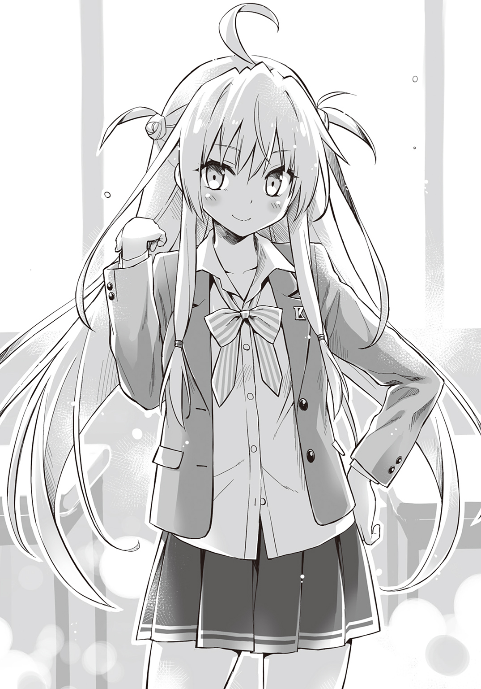
「ええ、騙してないわよ？」
「へっ？」
「私、入学以来ずっと、ちょいちょいフォーマット換えてるもの。みんな当然知ってて合わせてくれてるのよ」
「はあ？」
「あなたもすぐに気が付くと思ったら、意外と遅かったわね。ふふ、雁弥って昔からおニブさん♪」
「......おい」
「私、新田菊華。私のことは菊華でいいわよ」
「おい新田菊華」
「ちょっとやめてよ。誰がとつぜん入ってくるか分からないじゃない、その名前で呼ばないでよ」
「..................」
すう、はあ、すう、はあ。
僕はいったん背を向けて大きく深呼吸した。二度、三度。
「あのう......いちおう聞きますけども」
もう聞かなくてもいい気はしますけども。
「なんで選りにも選ってこんなギャルい変装選んだんすか」
もはやギャル嫌いの有田雁弥に対する嫌がらせとしか思えない。
「なんでもダンデもありますかァ、この馬鹿ちんがァ！」
はい金八キター。
「テメエが言ったんだろがよォ！ 普通の女子のフォーマットにしろって、ああん吐いたツバ飲まんとけやコラぁ！」
はいスケ番も来ましたよー。
「ええ、言いましたよ？ でもね、それを言うならこれも言ったはずですよ？ 本とかテレビとかのデフォルメされた女子じゃなくて、あなたの身の回りにいる普通ぅぅぅーの女子を模してくださいって」
「その通り。そうよ信愛なるカリー、あなたはそう言った。だからこのフォーマットは、私の身近にいる女の子をモチーフにしたものなの」
「あんたの身近にはこんなギャルい女がいるんかい」
「いるわよ。ウェーイ」
「............え？」
やだ、なんかゾワッとする既視感。
「ちょ......え、新田さん？ いまなんて？」
「ウェーイ。ちゅーかァー、チィ兄きもいしー」
「おっ、おま、それっ......そのフォーマット、つうかその似てねえ物真似、まさか......」
「ん？ どうした有田兄。何を今更なこと言っとるんだ君は」
「な、な、な......」
「よかろう、ト、当該状況ヲ、検索スル......再生、シマスカ......」
「い、いえす」
恐れおののきながら頷くと、新田菊華は左右のこめかみに人差し指を立て、いつぞやのインチキ合成音声じみた声色で語りだした。
『先輩、次はもうちょっと普通のフォーマットにしましょうよ』
『ふう......女って生き物は結局のところ、普通に生きることがいちばん難しいっていうのに......』
『いや、そんな人生哲学みたいな話ではなく。アナタの周りにいるようなフツーの女の子をフツーに真似すればいいだけなんですよ』
『私の周りにいる......オーケイ、じゃあ次からは鞠弥をベースにしたフォーマットを組むわ』
うわああああああああ！（魂の慟哭）
「俺の妹がこんなにギャルいいわけがないいいいいい！」
僕は清楚可憐で知られるうちの鞠弥の名誉を守るため、クソビッチ副部長の顔面をバールのような物で何度も何度も殴打したかったけど我慢して、代わりに引っぺがしたゆるふわモテ巻きヅラに乱雑な手櫛を通して秋田名物ナマハゲ風味のざんばらストレートに仕上げてあげた。
「ふぅ、ふぅ......さらばクソビッチ副部長、暁に死す......」
少々手荒な真似になってしまったが、これでもうあのイラッと来るタル気なフォーマットが換装されることもないだろう。
「勝利のあとは、なぜか虚しい......」
「つってもォー、家にスペアいくらでもあンしィー」
「............」
またしても僕は敗北した。
「しかし、さすがよのう同志有田。わしの擬態をよう看破しおったわ」
「ふん」
僕はヅラを先輩に突きかえした。
「いいえ、完全に騙されてましたよ。普通に別キャラだと思ってましたよ」
少なくとも最初はね。
ああ悔しい。なにが悔しいって、有田雁弥はろくに女子と目を合わせて喋れないとかほざく妹の戯れ言がかなりの信憑性を帯びてしまった不名誉。
だがそんなトップシークレットをたやすく露呈するわけにはいかないので、僕はことさらに他の要因を強調した。
「いやあ、流石ですなあ先輩、その卓越した演技力！ 見事にしてやられましたよその演技力に！ 大女優・安孫子祥子のＤＮＡを受けつぎ、子役としても鳴らしたその安孫子町子の演技力に！」
「やァ～、ちゅーか有田っち、キホン私と話すとき顔見てな――」
「それにッ！ そんだけ化粧盛ってりゃ誰だって分かんねえっつうの！ どんだけ厚塗りしてんすかあ！ くっそう、厚塗りと演技力に騙されたあ！ 厚塗りと演技力さえなければ俺の鋭い鑑識眼で一発看破できたってのによォーヒャッハー！」
「いいや無理じゃ。いかに鋭い眼を有していようとおぬしは相手を見ておらな――」
「うるせえ黙れナマハゲ！」
僕は新田菊華の頭にざんばらヅラを被せた。
「ぎゃー！ 泣く子はいねがー！」
わあ、サイタマ組閣担当（推定）の新人類さん、遠く秋田県は男鹿半島の民間伝承までよく御存知ですねー。
「つうか......その、いくら俺だって、まったく見てなかったわけじゃねえっすよ」
「んだ？」
だから、何度か会ってるうちに、厚化粧先輩が笑ったときの顔がたまに「アレッ？ このひとビッチのくせに可愛くね？」って瞬間が、まあホントたまになんだけどあって、それがよくよく考えてみると誰かの笑った顔に似てる気がするなあとか、そんな風に思ったりすることもまあホントたまになんだけどあったりして――
――いや、まあ、ぶっちゃけ確証を得たのはついさっき、みど姉から今は亡き演劇部の話を聞いたときなんだけど。
川高の演劇部には大女優の娘がいたって話、そして、その娘さんとやらの子役時代の芸名を聞いたとき。
「だって先輩、迂闊でしょ。ザルっすよ、姿は変えても名前は変えないとか」
「ふむ、そうかね。大きな噓を真実めかすには、大きな噓ひとつ以外を偽らざるべし。と聞いたんだがな」
ああ、たしかに、そんな風には言いますねえ。
「やれやれ、どうやら《機関》の情報も完璧ではないようだ」
違いますよ？ それは旧人類でも知ってるただの一般論ですよ？
「ていうか、謹慎中だったらおとなしく謹慎してなさいよ」
プライバシーに関わることだから、謹慎処分の元となった理由にまでは言及しませんけども。
「先輩、どうせ授業には出てないんでしょ」
「流石にそれはな。席がない」
「だったらなんでわざわざ学校に」
「部活動のためだ」
「でもそれ廃部になったって」
「みんながライブに出たがってる。部長として何とかしたい」
「何とかって」
「そんなとき、君に逢った」
「はい？」
「君に手伝ってもらいたいと言ったのは偽らざる本心だ。いたずらが過ぎたのなら謝る」
「いや、それはべつに......どうでもいいっすけど......」
マチコ先輩の正体に気付いたとき、正直チクショーって思った。
チクショーやられたって。
くそ、やるなあって。
ちょっと、笑ってしまった。
「あのね」
僕が黙っていたら、彼女がゆっくりと口を開いた。
「演劇部はなくなっちゃったけど、新しい部を作れば校則的にはまだライブに出られる可能性はあるの」
もごもごと唇の中で消えてしまいそうな声。滑舌のいい新田菊華らしからぬ、妙に聞き取りにくい声だ。
それはマチコ先輩でもない、老婆でも金八でも厨二女でもない、聞いたこともないフォーマットだった。
「そう、だから、査問委員会に通す形式だけでも、部の名前と活動内容を変えようと思って」
厨二でもギャルでもない誰かは、そこで一瞬唇を湿らせた。すっと息を吸って、再開。
「め、明確な基準はないんだけど、あまりに変わり映えがないと新部として認められないから。それで、部員構成も。一年生が少しでも入ってくれれば学校も無視は出来ないだろうと思って。まず一人、河和さんが入ってくれて」
不思議な声だ。怯えるみたいに縮こまってるのに、だけどそこには、なんて言うんだろう......芯がある。
伝えたいっていう、芯。たぶん、そんなようなの。
だから、ちゃんと聞きとれなくても伝わってくる。たぶん、そんな感じ。
僕はいつになく相手の目を見て声を、話を聞きたかった。だけどそんなときに限って、今度は先輩の方が俯いて目を伏せていた。
「それで、新しい部はね」
はあ、と荒めの息をついて続ける。
「演劇部の先輩たちのアドバイスなんだけど、演劇に近いところで、演芸部とか喜劇部にしようってなって。ここは代々、観てるひとたちを楽しませようっていう理念だったし」
「ふうん......そうなんすか......」
なんだか苦しそうなフォーマットが気になってしまい、やっと出た言葉がそんなですか有田雁弥。違うだろ、そんなことを言いに来たんじゃないだろ。
「うん。そうなの。見て、あれ」
新田先輩がやっと面を上げたと思ったら、その目は僕を素通りして頭上へ飛んだ。
「？」
視線を追って、僕はそちらを振りあおぐ。
元演劇部室の扉の上。額縁の中に力強い運筆の毛書が飾られていた。
『世界は喜劇だ』
「......あ」
そのときなぜ僕の口から音が漏れたのかは自分でもよく分からない。
「でね、きげきをね、やろうと思うの、こんど」
「......先輩？」
ふたたび僕は向きなおった。あの弱々しい声に揺らぎが混じりはじめた。唇がかすかに震えていた。え？ 泣きそう？ なんで？
「い、いま、うちには脚本を書けるひとがいなくて、みんなで相談しながら進めてるんだけど、なかなか上手くいかなくて。それで、ちょっと頼りない話なんだけど、普段からなにか面白いことをして、それを脚本にすればいいんじゃないかってことになって」
「あの、先輩......？ え、どっか痛いんですか......？」
思わず訊ねた。それがどんなフォーマットなのか知らないけれど、もはや震えて青ざめて涙声になっている彼女の姿はおよそ尋常ではなかった。なにかにひどく怯えているようだった。
「うん、だいじょぶ。聞いて。あの、だから、もし有田君が不快な思いをしちゃったのなら、ほんと、ごめんなさい。私たち、ユーモアのセンスがなくて。有田君、笑ってくれるかなって思ったんだけど、ほんと、ごめんね」
「いや、笑いましたよ」
悔しいことに。チクショーって。
笑っちまいましたよチクショー。
「ほんとに？」
「本当っす。だから......だからってのも話繫がってないけど、なんだ、その......」
ええと、なんでだっけ。
なんでそう思ったのか、よく分かんないけど。
「俺も、高校入ってなんか、このままズーンってまま三年過ごすのもアレかなーとか思わないことはなくて」
だから、本当は新田先輩たちに絡まれてちょっとは嬉しかったっていうか、まあ、嬉しかったは言い過ぎなんだけど、でも、なんかちょっとは青春っぽいこと出来るのかなっていうか、したいなっていうか、つまりその――
「――先輩、つうか部長。新田部長。俺、この部に」
「誰かいるのか!?」
突然の誰何だった。扉の向こう、男の声。
「やべっ！ 先輩、隠れて」
「えっ......ひゃあっ」
僕は咄嗟に新田部長の体を引きよせて――硬く強張った身体はとても良い香りがした――机の下に押しこめた。刹那、乱暴に開けはなたれる部室の扉。
「君か......！」
あの七三眼鏡だった。
「......どうも」
「何してるんだ。また演劇部......元演劇部の連中に呼ばれたのか」
「いえ、違います」
「じゃあ出ていけ。ここは立ち入り禁止だ。そもそもここは文化部棟だぞ、君はどこの部だ。いや、どこの誰なんだ」
「俺は」
僕は――
――机の上の紙とペン。無造作に摑んできったねえ字で急ぎ書きなぐった。
「俺は喜劇部です」
「ハ？」
ハじゃねえよ、聞こえなかったのかこの野郎！
「喜劇部、脚本担当！ １年Ａ組、有田雁弥です！」
どぉーん！
尾田先生の描き文字をバックに（錯覚）、出来立ての入部届を突きだしてやりましたとも。
机の下で誰かの細い指が僕の足首をきゅっと握ってくれましたとも。
「き、喜劇部......？」
そして敢然たる僕の雄姿に、さしもの眼鏡先輩も怯んでいましたとも。
「我が校にそんな部はない」
訂正。怯んでるわけではなかったようです。
「こ、これから申請しまぁーす」
通るかは分かりませんけども。ま、やるだけやってみましょうよ。ねえ先輩。
※ ※ ※
これは喜劇だ。ただの脚本だ。
これから語る出鱈目も滅茶苦茶も荒唐無稽もトンデモも、すべては予定調和の調和物だ。
だから、んなアホなと笑いとばしていただいて構わない。いや、むしろ笑っていただきたい。
笑ってください。いいから。頼むから。お願いします。
さもないと僕は......どうなるんだろう。
まあ、いいや。そんときはそんときで、そんな自分を笑いとばそう。
世界はいま、そういう流れなんだ。
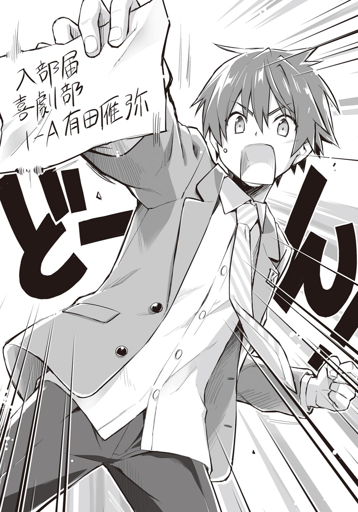
あとがき
髪を切ってもらうときは、いつも男性の美（理）容師さんを指名しています。女性相手だと気を遣ってしまうというか、なんとなく落ちつかないんです。
ていう話を頭チョキチョキしてもらいながら担当のお兄さん（イケメン）にしたところ、彼は分かります分かりますと大いに頷き、続けて自身の過去を語りはじめました。いわく、中学時代まで遡れば、同じクラスの女子と話すときでさえ軽く緊張していたと。なるほど振り返ってみれば、ぼくもそんな自意識過剰の中学生でした。おまけに、いまでこそ笑い話ですが、当時はそれがエラく恥ずかしいことのように思われ、必死に隠して「べつに女子とか全然ヨユーだし」顔を繕っていた、というところまで完全に一致したのです。
そして、この話題は他のスタッフやお客さんをも巻きこんで盛りあがり、集計してみれば実に半数以上の成人男子がかつて身に覚えのある過去だという結果を導きだしました。
というわけで、半数（概算）に含まれない真性硬派な読者諸兄におかれましては、今巻の主人公に歯がゆい思いを抱かれたかもしれませんが、どうぞ大らかな心で。そうでない同志諸君はそれなりの心で。今後ともこの未熟な少年の成長譚を生温かく見守っていただけますと幸いです。
お送りいたしましたのは、新進気鋭のベテラン新人、熟れたてフレッシュ王雀孫でした。またお会いできることを皆さまと集英社ビル方面に祈りまくりつつ、謝辞。
えれっと様、こんな勇者もバトルも俺 TUEEEEEE もない名もなきポル産おじさんの駄文が一丁前にライトノベルという体裁をとることが出来たのはすべて貴方のおかげです。最大限の謝辞を。
丸戸史明ちゃん。ぶっちゃけまだ頂戴した帯コメは拝見の機に与っていないのだけど、まあどうせ貴方のことだからさほど行儀の良い仕事はしてないのでしょうね（褒め言葉）と勝手に予測してレスさせてもらいますわ。てめえコノヤロありがとよ！
編集部、丸宝様・永田様・稲垣様。ここに御三方もの御尊名を列挙させていただく時点でもう本作の難産っぷりが規格外であったことを物語ってしまうわけで、真実どうしようもなく頭が上がりません。併せまして山下様とともに、陳謝と感謝の念を捧げさせていただきます。
はじめましての皆さま。おつかれさまでした。結局どんな話なの？ と思われたかもしれませんが、結局どんな話なの？ という感覚を愉しんでいただきたい喜劇です。今後ともお付き合いくださりますと望外の喜びです。
はじめましてじゃない皆さま。よう末っ子、久しぶり。奈落の底へおかえり。今回も例によって騙し騙し遊んでいきたい文字芸人の俺だよ。どうぞよろしくステイチューン。
二〇一四年 晩秋 王雀孫
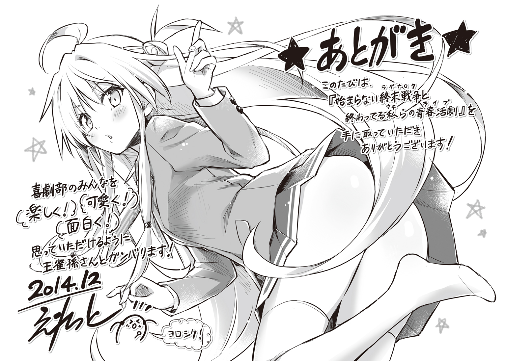
著者紹介
王 雀孫 おう じゃくそん
東京生まれ、埼玉育ち。新進気鋭のベテラン新人、王雀孫です！
このたびえれっとさんの画集に駄文を添えさせていただけることとなり「うはーっ！ ラノベ、おめえ強ぇーんだなあ」状態です！ よろしくお願いします！ お仕事の傍らで大人向けゲームの開発を手伝ったりジャンプを読んだりしています。なお作中のジャンプネタがことごとくビンテージなのは仕様です。いやもちろんバリバリ現役読者で最新ネタも存じあげてるんですよ......どうしてこうなった......
illustration
えれっと
群馬出身、埼玉在住。２月19日生まれ。えれっとと申します！
このたび王雀孫さんのお話に挿絵を描かせていただけることになり「オラ、ワクワクすっぞ！」な状態です！ よろしくお願いします！
お仕事の傍らでブラウザゲームをしたりオンラインで生放送をしたりしつつ運動しなきゃなぁ...と思う日々です。思うだけ！
ダッシュエックス文庫DIGITAL
始まらない終末戦争と終わってる私らの青春活劇
著者 王 雀孫
(C) JAKUSON OH 2015
２０１５年１月31日発行
この電子書籍は、ダッシュエックス文庫「始まらない終末戦争と終わってる私らの青春活劇」
２０１４年12月24日発行の第１刷を底本としています。
発行者 鈴木晴彦
発行所 株式会社 集英社
〒１０１－８０５０
東京都千代田区一ツ橋２丁目５番10号
０３－３２３０－６０８０（読者係）
制作所 株式会社デジタルディレクターズ
本作品の全部また一部を無断で複製、転載、改竄、インターネット上に掲載すること、および有償無償に関わらず、本データを第三者に譲渡することを禁じます。なお個人利用の目的であっても、コピーガードを解除しての複製は、法律で禁じられています。